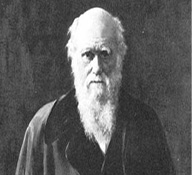
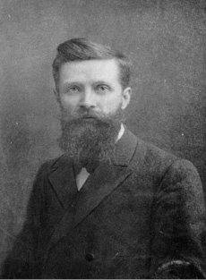
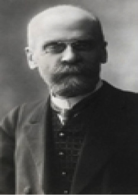

D
dağda bulunan çocuk (wild boy of Aveyron, feral child) J. M. G. Itard’ın 1799’da incelediği belirtilen yabanıl çocuk; kurt çocuk, yabani çocuk. Fransız kulak hekimi ve bir sağırlar okulunu yöneten Itard (1774-1838), küçükken dağa bırakıldığı düşünülen ve ormanda avcıların yakaladığı 10 yaşlarındaki yabanıl çocuğu eğitmek için insan üstü bir çaba gösteriyor. Onun bu çabaları, özel eğitime gereksinim duyan çocukların eğitimi konusunda bir başlangıç oluşturuyor. Bu hekimin söz konusu inceleme ve çalışmaları, Dağda Bulunmuş Çocuk adıyla dilimize de çevrilip yayınlanmıştır. Ancak bu çocuklara ilişkin söylenen ve yazılanlara kuşku ile bakmak gerekiyor. Çünkü her şeyden önce bunların normalin altında bir yeteneğe sahip olma ve anne babalarınca uzak bir yere, dağlara bırakılmış olma olasılığı vardır.
dağılım (distribution) 1. İstatistikte verilerin merkezi eğilimden sapma, ortalama çevresinde yer alma derecesi. 2. Fizyolojide, sinir ipliklerinin dal budak salması, dallanması, yayılması. 3. Psikolojide özellikle dikkat dağınıklığı ya da dağınık dikkat. Birden çok uyarıcıyı aynı anda algılama ve bunlara uygun biçimde tepki verme gizilgücü. 4. Ruh hastalıklarında düşünmenin, dikkatin ya da bir etkinliğin akışındaki türlü aksaklıklar.
dağılım ölçüsü (measure of dispersion) Dağılımdaki puanların dağılımını ya da değişkenliğini temsil eden değer.
dağılmış aile Bkz. boşanma.
dağınık dikkat. Bkz. dikkat dağınıklığı.
dağınık tepki (diffused response) Dışarıdan gelen bir uyarıma karşı, canlının bütün organlarında gösterdiği yaygın tepki.
dâhi (prodigy) Bir alanda özellikle erken yaşlardan başlayarak olağanüstü bir yetenek gösteren kişi. Atatürk, Pascal, Motzart, Roden birer dahidir. Dâhi, daha az zeki olandan, sıklıkla yüksek düzeyli zekâ tepkileri ve düşünme stratejilerinin farkında oluşuyla ayrılıyor. Bkz. dâhi geri zekâlı.
dâhi geri zekâlı (prodigious savant) Geri zekâlı olmasına karşın, karmaşık aritmetik işlemlerini zihinden bir çırpıda yapmak gibi sayısı çok sınırlı konularda olağanüstü performans gösteren kişi.
daimicilik (perennialism) R. Maynard Hutching ve Mortimer J. Adler’in savunduğu, klasik realizme ve idealizme dayanan eğitim akımı. Daimicilik genelde Eflatun, Aristo ve St Thomas Aquines’in ontoloji, epistemoloji, aksiyoloji ve mantıkla ilgili önermelerine temellendirilmiştir. Ayrıca Ortaçağ’da egemen olan anlayışın yeniden eğitime sokulmasını savunmuştur. Bkz. eğitim akımları.
dal beden Bkz. Sheldon’un bedensel yapı sınıflaması.
dalgınlık (absentmindedness) Çevresinde olup bitenleri irdeleyemeyecek kadar kendi düşünce ve duygularına kapanma alışkanlığı.
dalımsı tip Bkz. Kretschmer’in bedensel yapı sınıflaması.
dalınç Bkz. esrime, kendinden geçme.
Dalton hastalığı (Daltonism) Kırmızı ve yeşil renklerin birbirinden ayırt edilememesi; Daltonizm, renk körlüğü.
Daltonizm Bkz. Dalton hastalığı.
damar sertliği Bkz. organsal beyin bozuklukları.
danışan (client, counselee) Rogers’e göre, ruhsal yardım almak isteyen kişi; müşteri, başvuran. Psikanalist ve psikiyatristlerin genellikle hasta dedikleri kişiye hümanist kuramcılar, şu ya da bu konuda yardım arayan insanların, bir tür hizmet satın aldıkları gerekçesiyle, onların müşteri olarak adlandırılmasını uygun gördüler. Hasta terimini aşağılayıcı, damgalayıcı buldular. Ne ki ilk bakışta oldukça insancı görünen bu yaklaşım, gerçekte tedaviyi piyasa koşullarına göre pazarlanan bir mala; hastayı da bu malı satın alabilecek potansiyel bir müşteriye dönüştürmekle suçlandılar. Bununla birlikte söz konusu yaklaşımın, hastanın kendini normal duyumsamasını sağlayan bir yanı da bulunuyor. Bu terimi “danışan” olarak Türkçeleştirenler, iki durumun da uzağında, daha anlamlı bir adlandırma yapmışlardır. Bkz. birey odaklı yaklaşım; danışan; danışan odaklı tedavi; danışma; danışman; eşduyum; ROGERS, Carl Ramson.
danışan merkezli terapi Bkz. danışan odaklı tedavi.
danışan odaklı ruh sağaltımı Bkz. danışan odaklı tedavi.
danışan odaklı tedavi (cliend–centered therapy) Rogers’a göre, danışanı yönlendirmenin söz konusu olmadığı (güdümsüz), insancı ruhsal tedavi yöntemi; danışan merkezli tedavi; danışan odaklı ruh sağaltımı. Danışan odaklı danışmada danışanla danışman (terapist) arasında kişisel (öznel) bir ilişki kuruluyor. Tedavi, ikili bir ilişki biçiminde yürütülüyor. Danışanın durumu, duyguları ne olursa olsun, danışman, onu koşulsuz değerli bir varlık olarak kabul ediyor. Danışmada algılamaya yer vermiyor. Kendi doğrularını, değer yargılarını danışana benimsetmeye çalışmıyor. Danışan da bu ilişki sırasında kendisini savunmalarının arkasına saklanmadan, gerçek kişiliği ile ortaya koyuyor. Bu ilişkinin kendisinde oluşturduğu duyguları danışmana açıklamaktan çekinmiyor. Sorunları için kendisine sunulan çözümleri seçme ya da reddetme hakkına sahip olmanın bilinciyle davranıyor. Danışman’ın kendisini olduğu gibi kabul ettiğini gören danışan, daha önce anlam veremediği ve kendisine yabancı gelen duygularını tanıma ve anlama gücü ediniyor. Zaman içinde, korkularının, kızgınlıklarının, güçsüzlüğünün köklerinin kendisinde olduğunu algılıyor. Danışma sürecinde bu duyguları yaşadıkça benliğini tanıyor. Bu yolla, kendine yabancı olmaktan kurtulunca, benliğini yeni ve güçlendirici deneyimlere yöneltme olanağını elde ediyor. Bkz. birey odaklı yaklaşım; danışan; danışman; eşduyum; koşulsuz olumlu saygı; psikolojik danışma; ROGERS, Carl Ramson; uyuşma.
danışma 1. (counseling) Eğitim, öğretim ya da uyum sorunlarının çözümü için ilgili uzmanla gerçekleştirilen konuşma. Bkz. danışan; danışan odaklı terapi; danışman; psikolojik danışma. 2. (information) Alınan, işlenen ve anlaşılan ileti.
danışman (adviser) İnsanlara kişisel yaşantılarını düzenlemede; toplum, öğrenim ve eğitimle ilgili sorunlarının çözülmesinde yol gösterip yardım eden kişi; destekleyici kişi. Bkz. danışan; eşduyum; psikolojik danışma.
danışmanlık (counseling) Duygular, meslek, evlilik, eğitim, iyileştirme ve emeklilikle ilgili alanlarda karşılaşılan sorunların giderilmesi ya da hafifletilmesi için genel bir müdahale etme, değerlendirme yapma, bir şeyler önerme, yönlendirme ve başka yaklaşım ve teknikler. Bu işi, sosyal hizmet uzmanları, rehberlik ve psikolojik danışma uzmanları, rehber öğretmenler, psikiyatristler ve başkaları yapıyorlar.
dans (dance) Müzik ritmine ve hızına uyularak yapılan, estetik değer taşıyan düzenli ve uyumlu beden hareketleri. Bkz. hareket.
darüleytam (orpan’s home) Türlü nedenlerle anne babalarını yitiren bakılmaya muhtaç ya da yoksul çocukların korunmaları ve eğitilmeleri için açılan kurum. II. Meşrutiyet döneminde art arda çıkan savaşlar yüzünden artan bu gibi çocuklar için 1914’ten sonra darüleytamlar kurulmaya başladı. Bu kurumlar, bağımsız bir genel müdürlükçe yönetiliyordu. Bunların kurucusu ve ilk genel müdürü İsmail Mahir Efendi’dir. Burada çocuklar hem bakılıyor hem de ilköğretim görüyorlardı. Ancak, bunların iç yapıları ilkokullardan oldukça farklıydı. Bu kurumlarda iş eğitimine daha geniş ölçüde yer, önem ve değer veriliyordu. İlkokul derslerinden başka çinicilik, marangozluk, terzilik, kunduracılık, çorapçılık; kızlara broderi, oya, biçki, dikiş dersleri gösteriliyordu. Bu nitelikleriyle darüleytamlar, o döneme göre yeni ve ileri eğitim hareketlerine yer veren kurumlardı. Müdürler, müdür yardımcıları ve bekâr öğretmenler okulda kalıyor, çocukların eğitimiyle yakından ilgileniyorlardı. Her darüleytam, daire denilen bölümlere ayrılmıştı. Her daireyi, daire baskanı adı verilen bir öğretmen yönetiyordu. Dairelerde, sıklıkla geziler, müsamereler düzenleniyor, çeşitli sporlar yapılıyordu. Çocuklar, kendi işlerinin yatak yapmak, temizlik ve onarım işleri gibi önemli bir bölümünü kendileri yapıyorlardı. Buralarda sınıf öğretmenliği uygulaması vardı. Yılın elverişli zamanlarında kamplar kuruluyor, izcilik yapılıyor, törenler düzenlenip ulusal günler ve bayramlar kutlanıyordu. Bu yolla gelişen darüleytamlar, I. Dünya Savaşı yenilgisinden sonra parasızlık yüzünden sürdürülememiş; çeşitli bakanlıklar arasında el değiştire değiştire sönüp gitmiştir. Buralarda öğrenim gören çocukların bir bölümü öğrenimlerini sürdürerek yükseköğrenim görmeyi başarmışlar ve birçoğu önemli hizmetler vermişlerdir. Bkz. Türklerde eğitim (II. Meşrutiyet Dönemindeki Eğitim Çabaları).
darülmuallimin Bkz. Türklerde eğitim (II. Meşrutiyet Dönemindeki Eğitim Çabaları).
darülmuallimat Bkz. Türklerde eğitim (II. Meşrutiyet Dönemindeki Eğitim Çabaları).
DARWIN, Charles (1809-1882) Oluşturduğu evrim kuramıyla bilimin ve düşünce tarihinin gelişimini derinden etkileyen İngiliz doğa bilgini. Darwin, Shropshire’ın Shrewsbury kentinde doğdu; aynı kentte öldü. Babasının babası, ünlü şair, düşünür ve bilim adamı Erasmus’tur. Babası, saygın, başarılı bir hekimdi. Annesi ise İngiltere’nin en ünlü seramik yapımcısının kızıydı. Annesini sekiz yaşında iken yitirince onun bakımını ablası üstlendi. Ancak bu başarılı ailenin en küçük üyesi, yıllarca yakınları için üzüntü kaynağı oldu. Darwin’in çocukluğu ve gençliği, onun ileriye damgasını vuracak birisinin varlığını müjdelemiyordu. Bağımsız ruhlu, geç öğrenen, öğretilenlere ilgisiz, isteksiz bir çocuk ve gençti. Neredeyse tek tutkusu kuş ve balık avlamak, yakaladığı hayvanları incelemek; bitki, kelebek, böcek, mineral, taş parçası gibi eline geçen her şeyi biriktirmekti. Önce bir devlet okuluna; ardından da bir özel okula gönderildi. Ancak dokuz yaşındaki Darwin için, bu okullarda okutulan Latince ve Yunanca’yı, tarih ve coğrafyayı öğrenmek, yalnızca zaman yitirmekti. Canını sıkan liseyi de tamamlayınca babasının isteği ile tıp okumak için Edinburgh Üniversitesi’ne yazıldı. Ne ki ikinci yılın sonunda hekimliğin kendisine göre bir meslek olmadığını anladı ve tıptan ayrıldı. Babası, ailenin “yüz karası” olacağını düşündüğü oğluna son bir umutla din adamı olmasını önerdi. Darwin bunu kabul etti ve Cambridge Üniversitesi’nde din eğitimine başladı. Orada tanıdığı ve önce öğrencisi olduğu; daha sonra da gerçek dostu olan botanik profesörü J. S. Henslov, Darwin’le yakından ilgilendi. Henslov, bir zamanların küçük koleksiyoncusunun doğa tutkusunu alevlendirerek geleceğin doğa bilginine yön vermeye başladı. Bu okulu bitiren Darwin’e, yıllar sonra geliştireceği kuramına ışık tutan araştırma gezisi olanağını da o dost öğretmeni sağladı. 1831 yılında Büyük Okyanus’a ve Güney Amerika kıyılarına doğru yelken açan araştırma gemisinin gönüllü ve “amatör doğa bilimcisi” Darwin, bu geziden beş yıl sonra döndü. Gezi notları, 1839’da, ilk kitabı olarak basıldı. Aynı yıl, Royal Society üyeliğine seçildi. Zengin gözlem ve bilgi birikiminden yararlanarak Türlerin Kökeni adlı başyapıtıyla evrim konusunda devrim yaratan kuramını oluşturdu; ancak, yayımlanması için 21 yıl bekledi. Evrim düşüncesini ilk ortaya atan Darwin değildi; ama o, evrim sürecinin nasıl gerçekleştiğine inandırıcı bir açıklama getirmiş; bu konudaki kuşkuyu ortadan kaldırmıştı. Bu da bir zamanların inançlı Hıristiyanı için, İncil’in “yaratılış” bölümünü yadsımak demekti. Bu nedenle, 1859’da yayımlanan bu yapıta en güçlü tepki, Darwin’in de beklediği gibi din çevrelerinden geldi. Evrim kuramını kanıtlanması olanaksız bir varsayım olarak değerlendiren kimi bilim insanlarının da katılımıyla, tartışma iyice büyüdü. Bu tartışmalara karşı evrim kuramını savunan Darwin değil; T. H. Huxley oldu. Tartışmalar, ABD’ye de sıçradı. Tartışmalar karşısında Darwin yine sessiz kaldı. Kuramını Huxley’in yanı sıra dostları Hooker, Spencer ve Haeckel, ateşli biçimde savundu. Türlerin evrimini açıklamak amacıyla ortaya attığı ve “yaşam savaşımında güçsüzlerin yok olup en güçlü ve uygun olanların varlığını sürdürmesi” demek olan doğal seçme ilkesinin siyaset, iktisat, sosyal bilimler, antropoloji, psikoloji ve ahlak öğretileri gibi, biyoloji dışındaki alanlara da taşınmasını çocuksu bir şaşkınlıkla izledi. Darwin, çok satan bu kitabından sonra, kısa aralarla on kitap daha yayımladı. Doğa olaylarının yeryüzünü belli zamanlarda değil, aralıksız etkilediğini; yüzey biçimlerinin yağmur, rüzgâr ve dalgalarla yavaş; ama sürekli olarak değiştiğini öne sürdü. Bu jeolojik ilkeyi canlıların değişimine de uygulayarak, evrimin kesintisiz ve yavaş bir süreç olduğu kanısına vardı. Darwin, canlıların basit türlerden gelişmiş türlere doğru evriminde izlenen yolu ve bu değişimin etkenlerini tutarlı biçimde açıklamakla bu konunun öncüsü oldu. Darwin’in, uzun gezisinde görüp inceledikleri, bütün türlerin ayrı ayrı yaratılmadığını; ortak bir atadan türeyip zamanla değişime uğradığını kabul ettirecek kadar belirgindi. O, canlıların da yeryüzü ile birlikte değiştiğinden kuşku duymuyordu. Ancak, bu değişimin nedenlerine ve nasıl gerçekleştiğine yanıt bulamamıştı. Kuramının kanıtları arasında şunlar da vardı: Yaşam savaşımına giren her canlı grubu ya hızla çoğalarak üremesini sürdürmek zorunda kalıyor ya da düşmanlarından daha güçlü, daha hızlı olan bireyler, ortama uyum sağlıyor ve besinleri ele geçiriyor. Bu özellikleri gösteremeyen canlılar, doğal seçme ile ayıklanarak yok olma tehlikesiyle karşı karşıya kalıyor. Değişime uğrayan türün değişimle kazandığı özellikler, yeni döllere aktarılıyor. Doğal seçme ile yalnızca en üstün ve en dayanıklılar yaşamını sürdürebildiği için, doğadaki tüm canlılar, en basitten en gelişmişe doğru evrim geçirmiştir. Yaşayan ilkel organizmalar, var olmalarını, bulundukları ortam ve koşullarda kendileriyle savaşacak başka canlıların bulunmayışına borçludur. İlk çağlarda ilkel canlılarda değişinime (mutasyon’a) yol açacak etkenlerin yaygın olması, Darwin’in bu savını doğruluyor. Örneğin, değişinimin en büyük etkeni olan radyoaktif ışınlar, eski çağlarda şimdikinden çok daha fazlaydı. Darwin, türlerde bireysel ayrılıklara yol açan değişimin nedenlerine tutarlı bir açıklama getirememişti. Bununla birlikte, canlıların evrimi konusundaki kuramında, kendisine öncülük etmiş olan Lamark’ın yanılgılarına da düşmedi. Darwin, Lamark’ın tersine, zürafa topluluğu içinde birdenbire bir değişimle uzun boyunlu bireylerin oluştuğunu; besinini daha kolay sağlayan bu uzun boyunlu zürafaların giderek çoğalmasıyla kısa boyunluların besin savaşını yitirdiğini ve doğal seçimle ayıklanarak yok olduğunu savundu. Darwin’in açıklayamadığı kalıtsal değişimin nedeni ve yeni döllere nasıl aktarıldığı sorusunu, 1860’larda Mendel, deneysel çalışmalarıyla belirlediği kalıtım yasalarıyla yanıtladı. Daha sonra kalıtım bilimi, değişinim denilen bu kalıtsal değişikliklerin iletilmesinden, genin yapısındaki DNA moleküllerinin sorumlu olduğunu kanıtladı. Darwin, İnsanın Atası adlı yapıtıyla Türlerin Kökeni’nde yalnızca bitki ve hayvanlar için irdelediği değişimle evrim konusunu bu kez insan türüne uyguladı. İnsanın ilk atasının, maymunlardan bile alt basamakta yer alabilecek kadar ilkel bir canlı olabileceğini öne sürdü. Birçok tartışmaya neden olan “insanın maymundan türediği” savını Darwin ortaya koymamıştır. Ona göre, insanın ve çoğu hayvanların evriminde doğal seçme gibi etkin rol oynayan biyolojik ilkelerden biri de eşeysel (cinsel) seçmedir. Erkeklerce öbür eşeyi seçme olgusu, bir var olma savaşına dayanmadığı ve ölümle sonuçlanmadığı için doğal seçme kadar acımasız değildir Darwin’in evrim kuramı, psikoloji alanında karşılaştırmalı kalıtımbilim ve zihinsel kalıtım araştırmalarına yeni bir yön kazandırdı; antropolojide ırk araştırmalarına ilgiyi artırdı. Bunun sonunda bir yandan ırkların gelişimini çevresel etkenlere bağlayan kuramlar; öbür yandan da saf ırkçı kuramlar geliştirildi. Darwin kuramının din çevrelerinde tartışılması ve sosyal bilimler alanında yaygın biçimde geliştirilmesinin yarattığı sarsıcı etkiler bugün de sürüyor. Başlıca yapıtları: Beagle Gemisiyle Yapılan Yolculukta Dolaşılan Çeşitli Ülkelerin Jeoloji ve Doğa Tarihi Araştırmaları Raporu (1839), Mertcan Resiflerinin Yapısı ve Dağılımı (1842), Beagle Gemisiyle Yapılan Yolculuk Sırasında Dolaşılan Volkanik Adalardaki Jeoloji Gözlemleri (1844), Güney Amerika’daki Jeoloji Gözlemleri (1846), Cirripedia Altsınıfı Üstüne Bir Monografi, 2 cilt (1851), Türlerin Kökeni (1859), Evcilleşmenin Etkisiyle Hayvanların ve Bitkilerin Değişimi (1868), İnsanın Atası ve Eşeyliğe Bağlı Seçme (1871) İnsanda ve Hayvanlarda Duyguların Dile Getirilişi (1872), Böcekçil Bitkiler (1875), Tırmanıcı Bitkiler (1875), Bitkiler Dünyasında Çapraz ve Kendiliğinden Döllenmenin Etkileri (1876), Bitkilerde Hareketin Gücü (1880), Özyaşamöyküsü (1887), Doğal Seçme Yoluyla Evrim (der.) (1958) Bkz. Darwincilik.

Darwincilik (Darwinism) 1. C. Darwin’in canlı varlıkların doğal seçme sonucu bir evrim geçirdiğini ileri süren kuramı. Bkz. DARWİN, Charles. 2. Genel ve yaygın anlamda, evrimci kuram ya da görüş. 3. En yaygın anlamda, psikolojide davranışın uyuma yararlı oluşuna önem verme. Bu, işlevcilikle eşanlamdadır.
davranım (response) 1. Bir organizmanın uyarımlara karşı yaptığı, görülen, görülmeyen her türlü bedensel, fizyolojik, zihinsel ve duygusal tepki. Bkz. davranış. 2. Bir organizmanın belli gereksinimi karşılamak için gösterdiği çaba, etkinlik. Bkz. davranım genellemesi; davranış.
davranım genellemesi (response generalization) Bir edimin pekiştirilmesinin, bu edimi oluşturan davranımların sıklığında bir artışa yol açtığı gibi, benzer davranımların sıklığında da bir artış yaratması. Örneğin, baba deme davranımını pekiştiren çocuk, gaga, dada da diyebiliyor.
davranış (behavior) 1. Kişinin özellikle ahlak bakımından gösterdiği davranım. Bkz. davranım. 2. Bir kişinin içinde bulunduğu toplumsal, ekonomik ve kültürel koşullar dolayısıyla geliştirdiği ve onu aynı durumdaki kimselere yaklaştıran davranımların tümü. 3. Davranışçı psikolojiye göre, yalnızca kas ve bezlerin gözlemlenebilir, saptanabilir ve ölçülebilir olan etkinlikleri. 4. Bir kimse ya da bir olay karşısında takınılan durum. Bkz. eylem; tutum. Psikologların çoğu için davranış, bir bilim dalının temel konusudur. Ancak, bu terimin altında nelerin yer alacağı konusunda görüşler farklıdır. Bunun sınırlanması önemli ise de başarılması güçtür. Geniş anlamı ile ele alınınca bu terimin içine bireyin yaptığı ya da yaşadığı her şey giriyor. Buna göre düşünceler, düşler, bezlerin etkinlikleri, yürüme, koşma, bir aracı yönetme ve başkaları birer davranıştır. Dar anlamda tanımlandığında ise yalnızca gözlemlenebilir ya da nesnel olan tepkilere tanımın içinde yer veriliyor; algılama, düşünme, yargılama ve başka bilinçli olaylar, bu tanımın dışında bırakılıyor. Bunların ancak davranış üzerindeki etkileri incelenebiliyor. Bugün, insan etkinliklerinin büyük bir kesimini dışarıda bırakan bu kadar katı bir tanımı pek az psikolog benimsiyor. Konuya nesnel olarak yaklaşan davranışçıların çoğu, psikolojide araya giren değişkenlere de yer olduğuna inanıyor. Buna göre Watson ve yapısalcıların karşıtlarının başı çektiği gibi dar bir davranışçılık anlayışı ortadan kalkmış bulunuyor. Bugün Amerikan psikolojisi, yöntem bakımından davranışçı olsa da ruhsal açıdan insan etkinliğinin bütün önemli kesimlerinin incelenmesine açıktır. Bugünün psikologlarının çoğu için sorun, kendilerinin inceleme konuları ile fizyologların inceledikleri davranışı birbirinden ayırt etmektir. Çünkü davranış, canlının bütün halindeki etkinliğidir. Buradaki “bütün halindeki etkinlik” sözü, canlının belki de hem bütün etkinlikleri hem de hareketsizliği anlamında yorumlanmalıdır. Buna karşılık, fizyolojik etkinlik, parçaların, organların etkinliğidir. Bunu ise fizyologların çoğu benimsemiyor. Beklenmedik başkalaşım (emergetism) görüşünü benimseyenler, davranışı, fizyoloji etkinliklerinin bütünleşmesi sonucu ortaya çıkan yeni bir olay ya da belli bir Gestalt niteliği olarak görüyorlar. Bu anlayışın varlığı, günümüzde birçok psikologda seziliyor. En az çelişki gösteren; ancak yine de doyurucu olmayan bir ayırt etme çabası da psikolojik ve fizyolojik görünen olayları yalnızca şu biçimde sıralıyor: Ruhsal Olaylar: Algılama, düşünme, konuşma, yargılama ve başkaları. Fizyolojik Olaylar: Solunum, salgılama ve başkaları. Davranış, fizik bilimlerinde de maddenin etkinlik türü olarak kullanılıyor. Bkz. bağlaşımcı kuram; davranış araştırması; davranış biçimlendirme; davranış bilimleri; davranış bozukluğu; davranış çeşitleri; davranışçı-bilişsel tedavi; davranışçılık; davranışçı öğrenme kuramı; davranışçı psikoloji; davranışçı tedavi; davranışçı tıp; davranışçı yaklaşım; davranış çözümlemesi; davranış değiştirme teknikleri; davranış kuramı; davranış ölçütleri; davranışsal aşırılıklar; davranışsal kısıtlılıklar; davranışsal sözleşme; davranışsal uygunsuzluklar; davranışta genelleme mekanizması; davranış teknolojisi; davranış zinciri.
davranış araştırması (ethology) K. Z. ve N. Tinbergen’in kurduğu hayvan psikolojisi ile ilgili bir hayvan davranışları araştırma çalışması. Bu çalışmalarda tepkisel ve davranışçı görüşlerden, herhangi bir psikoloji kuram ve yorumundan kaçınılıyor. Hayvanlar, doğal çevreleri içinde inceleniyor. Bkz. LORENZ, Konrad.
davranış biçimlendirme (behavior shaping) Davranış değiştirme tekniklerini kullanarak kişinin olumsuz davranışları yerine olumlu davranışlar geliştirmesini ya da yeni davranışlar edinmesini sağlama.
davranış bilimleri (behavioral sciences) Doğa bilimlerinde olduğu gibi insan ve hayvanların nesnel ve toplumsal çevrelerindeki davranışlarını doğa bilimlerinin kullandığı deney ve gözlem yöntemlerini kullanarak inceleyen genel psikoloji, gelişim psikolojisi, öğrenme psikolojisi, rehberlik ve psikolojik danışma, ruh sağlığı, sosyoloji, sosyal psikoloji, sosyal antropoloji gibi bilimler.
davranış bozukluğu (behavior disorder)) 1. Çocuklarda ve yetişkinlerde görülen karmaşık duygusal ve davranışsal sorunlar grubu. Davranış bozukluğu bulunanlar, sıklıkla toplumdışı davranış gösteriyorlar. Bunlarda hem sözel hem de bedensel saldırganlık, yalan söyleme, hırsızlık yapma, Vandalizm ya da daha başka eylemleme görülebiliyor. Davranış bozukluğu olan çocukların toplumsal gelişimleri, akranlarının gerisinde bulunuyor. Çünkü bunlar, sıklıkla ya toplumsal ilişkilerden kaçıyor ya da düşmanca, saldırganca davrandıkları için yalnızlaştırılıyorlar. Davranış bozuklukları, hem çocuk ile çevresi arasında süren olumsuz toplumsal etkileşimin sonucu hem de onların sürmesini sağlayan bir etkendir. Bu çocuklar, depresyon da yaşayabiliyorlar. Tutum bozukluğu, kaygı-uzlaşma, hamlık ve toplumsallaşmış saldırganlık, davranış bozukluklarının dört özelliğini oluşturuyor. Bu bozuklukların tedavisinde erken davranılmazsa, bunlardaki toplumdışı davranışlar, yetişkinlik yıllarında da sürebiliyor. Bkz. ciddi duygusal bozukluk. 2. Psikiyatride, psikopati, sapmalar ve madde bağımlılığı gibi toplumun, kimi zaman hastanın kendisinin de onaylamadığı davranışları içeren belirtilerle tanımlanan bozukluklar. Davranış bozuklukları, ciddi ruh hastalıklarına yol açabiliyor. Kuramsal açıdan, nevrozların tersi kabul ediliyor. Çünkü bunlar, nevrozlardaki gibi aşırı ketleme yerine, ketleme yokluğuyla tanınıyor. Bunlar, psikanalitik yaklaşımla açıklanabiliyor; ancak tedaviye pek açık değildirler.
davranış çeşitleri (types of behaviors) Dürtüsel ve nedensel olarak kümelendirilen davranışlar. Bunlar şu tür tepkileri içeriyor: (1) Dürtüsel Davranışlar: Kendiliğinden beliren normal dışı tepki, mantıkdışı düşünce ve istem dışı ortaya çıkan davranış gibi tepkiler. (2) Nedensel Davranışlar: Bir kaza sonucu yaralanma gibi bedensel ya da bir kişinin beklenmedik saldırısına uğrama gibi toplumsal durumlara karşı gösterilen tepkiler. Benlik psikanalistlerine göre ise kişi, içinde yaşadığı durumları, elinde olmayan nedenlerle değil; kendi seçimiyle yaşıyor. Kişinin yaşadığı durumlar, içgüdülerin zorlamasıyla bilinçdışı olarak ortaya çıkmıyor; görme, işitme gibi araçların içgüdülerden bağımsız olarak çevre ile ilişkisi sonucu gerçekleşiyor. Bkz. davranış.
davranış çevre bilimi Bkz. çevrebilim.
davranışçı aile tedavileri Bkz. davranışçı tedavi.
davranışçı aile terapileri Bkz. davranışçı tedavi.
davranışçı-bilişsel tedavi (behavior-cognitive therapy) Temel stratejileri rol değişimi, örnek alma, edinilen davranışı değişik ortamlarda deneme olan tedavi; bilişsel-davranışçı tedavi. Bu uygulamada bilişsel bozukluğun düzeltilmesi ile davranış denetiminin başarılması amaçlanıyor. Bkz. bilişsel tedavi; davranışçı tedavi teknikleri.
davranışçılara göre bilim Bkz. davranışçılık.
davranışçılık (behaviorism) Pozitivist ilkeleri psikolojiye uygulayıp içebakış, içgüdü gibi kavram ve teknikleri kabul etmeyen; psikolojinin ölçülemeyen, gözlemlenemeyen, nesnellik taşımayan olgular yerine, ölçülebilen, gözlemlenebilen (nesnel) davranışlarla ilgilenmesi gerektiğini savunan ve psikolojiyi davranış bilimi diye adlandıran yaklaşım; behavyorizm, davranışçı psikoloji. J. B. Watson’ın 20. yüzyılın ilk çeyreğinde ortaya atıp temel ilkelerini belirlediği davranışçı kuram, kısa sürede birçok yandaş topladı. Davranışçılar, yapısalcıların içebakış tekniğine ve psikodinamik yaklaşımcıların bilinç, bilinçaltı, bilinçdışı gibi kavram ve ilkelerine tümüyla karşı çıkarak gözlemlenemeyen bu tür iç yaşantıların bilimin konusu olamayacağını ileri sürdüler. Bunlara göre insan davranışları, etik nedenlerle hayvan davranışları incelenerek anlaşılabilir. Örneğin, bir hayvanın kızdığını, tepkilerine bakarak anlayabiliriz. Bu yaklaşımları nedeniyle davranışçılara, uyaran-tepki psikologları da deniyor. Davranışçılara göre bilim, “mekanist, materyalist ve fiziksel”dir. Davranış ise, “zamanda ve uzayda devinim”dir. Davranışçılığın gelişiminde I. Pavlov’un koşullu refleksinin ve Thorndike’ın etki yasasının payı büyüktür. Etki yasasına göre, doyuma ulaştıran davranışlar, daha çok yineleniyor. Bu nedenle pekiştirmeye çok benziyor. İnsanın çevresinde hoş olan (haz veren) ve hoş olmayan uyarıcılar vardır ve hoş olan uyarıcılar daha çok yineleniyor. (Ancak, E. L. Thorndike, “Bu uyarıcılar doğada var.” diyerek, pekiştirme ilkesini durağan olarak ele almıştır.) Bu kuramın oluşturucuları arasında, Watson’la birlikte K. S. Lahley ve A. P. Woeiss de sayılmalıdır. Davranışçılık, ilk ortaya atıldığı biçimiyle; klasik koşullama olarak kalmamış; giderek, uyaran-tepki arasına ara değişkenler konmuş; Skinner’in edimsel koşullama diye adlandırdığı diğer bir öğrenme biçimiyle daha da gelişmiştir. Watson’ın ortaya koyduğu davranışçılık, daha çok kassal hareketlere dayandığı ve pozitif ilkeleri birebir uyguladığı için, yöntembilimsel davranışçılık diye adlandırılıyor. Bilişsel davranışçılık ise, içsel olayların işlemler aracılığı ile tanımlanabileceğini ve herkesçe gözlemlenebilir, incelenebilir ve anlaşılabilir duruma getirilebileceğini savunuyor. Skinner da ortaya koyduğu radikal davranışçılıkta davranışla onun sonuçları arasındaki ilişkiye dikkat çekiyor. Bununla birlikte davranışın gözlemlenebilirliği, ölçülebilirliği ve sağdanabilirliği, tümünün ortak nitelikleridir. İlkelerin laboratuvar ortamında elde edilmesi ön koşuluna dayanan davranışçılık, bu özellikleriyle deneysel psikolojiye önemli katkılar sağlamıştır. Davranışçılık, birçok yönüyle eleştiriye uğramıştır. Geleneksel psikolojik yaklaşımlardan psikodinamik yaklaşım ve hümanist yaklaşım, davranışçılığın her konuyu çok mekanik olarak ele aldığını; oysa insanın, ruhsal yanıyla bir bütün oluşturduğunu; hayvanlar üzerinde yapılan deney sonuçlarının insanlara genellenemeyeceğini ileri sürdüler. Bkz. davranış psikolojisi; toplumsal öğrenme.
davranışçı öğrenme kuramı (behavioral learning theory) Öğrenmeyi davranışlardaki gözlemlenebilir değişimler düzleminde açıklayan kuramların ortak adı. Bkz. bağlaşımcı kuram; öğrenme kuramları.
davranışçı psikoloji (behavioral psychology) Öznel yaşantının psikanaliz yöntemiyle incelenemeyeceğini; böyle bir incelemenin bilimsel verilerden yoksun olacağını; insan davranışlarına ilişkin bilimsel ilkelerin yalnızca doğrudan gözlemlenebilen davranışların incelenmesiyle belirlenebileceğini savunan, psikanalitik kurama karşıt kişilik kuramı; davranışçılık, davranışçı ruhbilim. Davranışçılar, kuramlarını yalnızca öğrenme konusu çevresinde oluşturdular. Buna uygun olarak bu kuram davranışçı yaklaşım, uyaran-tepki kuramı adıyla da anılıyor. Birincil dayanağı, I. Pavlov’un buluşu olan davranışçı psikolojiyi, J. B. Watson, E. L. Thorndike ve B. F. Skinner geliştirmiştir. Pavlov, koşullu refleks (koşullu tepke) olgusunu bulmuştu. Salya salgısına yol açan besin maddesi uyaranıyla aynı zamanda, belli bir ses çıkarılıp yinelenmişti. Bir süre sonra, besin maddesi olmadan da o sesin; dahası, yiyeceği getirmiş olan kişinin ayak seslerinin duyulmasının ya da o kişinin görülmesinin de salya salgılamasını sağladığı saptanmıştı. Yine koşullu refleksler incelenirken, Pavlov’un öğrencilerinden biri, beklenmedik bir olaya tanık olmuştu. Bir çember ile bir elipsi birbirinden ayırmaya koşullandırılan köpeğin, yinelenen deneylerde elipsin giderek çembere yakın biçime getirildiğinde artık, çember ile elipsin ayrımını yapamadığını görmüştü. Üç hafta yinelenen deneylerde köpek, ayrım yapmada bir gelişme gösterememiş; tersine, bu yeteneği giderek azalmıştı. Sonunda da bu yeteneğini yitirmişti. Bunun yanı sıra, köpeğin davranışlarında değişmeler oluşmuştu. Sessiz, uysal köpek, kesik sesler çıkarmaya, deney aygıtını dişleri ile yırtmaya, odasına sokulunca havlamaya başlamıştı. Bu değişik davranışların akut nevroz belirtileri olduğunu düşünen Pavlov, daha sonra fareler, domuzlar, maymunlar, koyunlar ve kediler üzerinde yinelenen benzer deneylerden de aynı sonuçları elde etmişti. Hayvanların zorlandıklarında girdikleri bu bunalıma deneysel nevroz adını vermişti. Pavlov, insandaki ruhsal bozuklukları da bu deney sonuçlarından yararlanarak açıklamıştı. Benzer zorlanmaların insanlarda da normal dışı davranışlara yol açtığını belirtmişti. Watson, Pavlov’un bu koşullama ilkelerinden yola çıkarak, bunları kendi geliştirdiği kavramlarla birleştirdi ve psikolojide davranışçılık (behavyorizm) denen yaklaşımı geliştirdi. Watson ve Rayner, zamanla çok ünlenen bir deneyi gerçekleştirdiler. Koşullama tekniğinden yararlanarak yaptıkları bu deneyle normal dışı davranışların oluşumunda öğrenmenin rolünü ortaya koymaya giriştiler. Amaçları, mantıkdışı korkuların, fobilerin, öğrenme ile kolayca oluştuğunu kanıtlamaktı. Araştırmacılar, bu amaçla, denek olarak, hayvanları çok seven 11 aylık Albert’i seçtiler. Deney sırasında beyaz bir fareye her yaklaştığında, arkasında duran bir kişi, çelik bir çubuğa bir çekiçle vuruyordu. Çıkan gürültü, Albert’i korkutuyor ve ağlatıyordu. Deneyin çokça yinelenmesinden sonra Albert, gürültü duymadığında da beyaz fareyi görünce korkmaya başladı. Bu korku, daha sonra başka tüylü hayvanları gördüğünde de ortaya çıktı. Dahası, kimi tüylü eşyalar bile Albert’i korkutur oldu. Pavlov ve Watson’ın bu çalışmaları, birçok araştırmacıyı öğrenmenin koşullu reflekslere dayandığına; insan davranışlarının da bu yolla oluştuğuna inandırdı. Sonra, E. L. Thornidike ve B. F. Skinner, bu yöndeki çalışmalarıyla davranış psikolojisine yeni temel kavramlar kattılar. Thorndike, ödüllendirilen tepkilerin güçlendiğini ya da öğrenildiğini; olumsuz sonuç veren tepkilerin ise giderek zayıflayıp söndüğünü gördü ve insan davranışlarının ödül ve ceza sonucu oluştuğu kanısına vardı. Skinner da çalışmalarından, davranışı özellikle organizma dışındaki olayların belirlediği; bu olayları değiştirerek, davranışlara istenen yönün verilebileceği sonucunu çıkardı. 20. yüzyılın başlarında davranışçı psikolojinin kurucusu olarak Watson, psikolojiye önemli bir katkı yapmıştı. Bunun gibi önemli bir katkıyı da 1960’lardan sonra ortaya koyduğu görüşleriyle Skinner yaptı. Skinner, çalışmalarında, davranışın yasalar gereğince işlediği varsayımından yola çıktı. O da Freud gibi davranışların yaşam boyunca yinelendiğini savundu. Daha da ileri giderek bunun toplumda da geçerli olduğunu öne sürdü. İnsanın belirli amaçları olan bağımsız bir varlık olduğunu belirten görüşlere ters düşen belirlenimcilik (determinism) ilkesinin, insan davranışlarına egemen olduğunu destekleyen görüşler üretti. Skinner’a göre, önemli suçlar işleme de insanlara yararlı işler görme de kimi etkenlerin birbirini ayrı biçimde etkilemeleri sonucu oluşuyor. Yani, bireyin davranışları, dış dünyanın ürünüdür ve bunların oluşumunda belirli yasalar geçerlidir. Buna göre, davranış denetlenebilir. Gerekli olan, bireyin içinde bulunduğu koşullarda değişiklik yapmaktır. Skinner, tepkisel öğrenme ve işlemsel öğrenme olarak iki öğrenme türü tanımladı. Buna göre, belirli bir tepki oluşturan uyaranla gerçekleşen öğrenme, tepkisel öğrenmedir. Basit refleksler ve kimi duygusal tepkiler gibi, öğrenme olmaksızın özgül (spesifik) tepki oluşturan uyaranlar vardır. Parlak ışık, gözbebeğinin büzülmesine; birdenbire duyulan gürültü, korkmaya yol açıyor. Bir de koşullamayla, tepki oluşturulabiliyor. Albert deneyi, bunu örneklendiriyor. Bu örnek, bir uyaranın, daha önce oluşturmadığı tepkiyi nasıl oluşturduğunu gösteriyor. Böyle uyaranlar koşullu uyaran; bu uyaranın yol açtığı tepki de koşullu tepkidir. Ancak, yanında koşulsuz uyaran olmadan, koşullu uyaran uzun süre uygulandığında, öğrenilen tepki, giderek gücünü yitiriyor ve sönüyor. Bir fare, içinde bir manivela bulunan bir kafese kapatılıyor. Fare, kafesin içinde dolaşırken manivelayı aşağı çektiği anda, kendisine besin veriliyor. İkinci bir kez kolu çektiğinde, besin verme yineleniyor. Bu yolla da işlemsel öğrenme gerçekleşiyor. Örnekten de anlaşıldığı gibi, işlemsel tepkileri, yarattığı sonuç belirliyor. İşlemsel koşullama yoluyla öğrenmede deneğin karşısına, belirli bir tepki oluşturan uyaran çıkarılıyor ve denek, bir amaca ulaşmasını sağlayacak bir tepkide bulunmayı öğreneceği bir durum içine konuluyor. Denek, içinde bulunduğu bu çevrede bir değişiklik yaratıp, belli bir işlem yaparak öğrendiği için bu öğrenmeye işlemsel öğrenme deniyor. Albert deneyinde gürültü, sürekli olarak hayvanla birlikte yer alıyor. Bu sürekli birliktelik, Albert’in koşullandığı korku tepkisinin güçlenmesiyle sonuçlanıyor. İşte, yeni oluşturulmuş bir tepkinin sürekli, bir uyaranla birlikte kalmasıyla o tepki güçleniyor; yani, pekiştirme gerçekleşiyor. Tepkinin güçlenmesini pekiştirici uyaran sağlıyor. Pekiştirici, olumlu da olumsuz da olabiliyor. İşlemsel koşullamada hayvan, kola bastıkça ödüllendiriliyor. Ödül, olumlu pekiştirici görevi yaptığı için sonuçta olumlu pekiştirme gerçekleşiyor. Hayvan, bir de elektrik şokuna son vermek için kola basıyor. Buradaki pekiştirme, acı veren uyaranı elde ederek değil, ondan kaçınarak gerçekleştiği için bu pekiştirme de olumsuz pekiştirmedir. Kaçınma, pekiştirme olmadan da öğrenilebiliyor. Davranışçılara göre güdülenmenin temelindeki doğal (biyolojik kökenli) dürtülerin sayısı sınırlıdır. Bunlar açlık, susuzluk gibi bedensel gereksinimlere yöneliktir. Günlük yaşamda görülen dürtüler ise, doğal dürtülerin uzantıları olarak beliriyorlar. Örneğin, çocuk, doğduktan kısa bir süre sonra anne babanın neyi onaylayacağını, neyi cezalandıracağını öğreniyor. Ondan sonra, anne babasının ve toplumun onaylayacağı davranışlara yöneliyor. Görüldüğü gibi, onaya ve başarıya yönelten bu dürtüler, edinilmiş dürtülerdir. Uyumlu davranışların yerine etkisiz, uyumsuz, bozuk davranışların öğrenilmesi, karar vermeyi gerektiren çatışma durumlarında kişinin yetersiz kalmasına neden oluyor. Çağdaş insan üzerinde önemli etkisi olan davranışçı psikoloji, koşullanma biçimine göre, insanın iyi-kötü, mantıklı-mantıkdışı davranabileceğini ortaya koymuştur. Bu yaklaşımla davranışların nedenlerinin gözlemlenemeyen benlik, üstbenlik gibi kişilik bölgelerinde aranmasına karşı çıkılmış; davranışların nedenleri, bireyin öğrenim yaşantılarında aranmıştır. Davranışçı psikoloji yaklaşımı, öznel yaşantıyı reddedişi; daha çok, hayvan deneylerine bağlı kalması, değer yargılarına ve insanların birlikte nasıl yaşayacaklarına ilişkin sorunlara eğilmemesi nedeniyle şiddetle eleştirilmiştir. Kişinin, çevrenin onu koşullandırma biçimine göre bir yaşam sürdürdüğüne inanan davranışçılar, kişiye seçim özgürlüğü de tanımamışlardır. Skinner, öğrenme ilkesinin sistemli bir biçimde uygulanmasıyla ütopik bir dünyanın bile yaratılabileceğini savunacak kadar ileri gitmiştir. Bkz. klasik tepkisel koşullama; ruh sağlığı (Davranışçı Psikolojiye Göre Ruh Sağlığı).
davranışçı psikolojiye göre ruh sağlığı Bkz. ruh sağlığı.
davranışçı ruhbilim Bkz. davranışçı psikoloji.
davranışçı sağaltım Bkz. davranışçı tedavi.
davranışçı tedavi (behavioral therapy) Öğrenme kuramına dayanan dar kapsamlı ve kısa süreli bir ruhsal tedavi tekniği; davranışçı terapi; davranışçı sağaltım. Davranışçı tedavide belirtilerin (bozuklukların), hatalı öğrenmeden ve koşullanmadan kaynaklandığı varsayılıyor. Bu nedenle koşullanmayı ortadan kaldırma ve yeniden koşullama, yeniden öğrenme, pekiştirme, duyarsızlaştırma gibi yöntem ve tekniklerle belirtiler ortadan kaldırılmaya çalışılıyor. Uygulama, tanıya göre değil, kişiye özgü olarak tasarlanıyor. Bu yaklaşımda insan ruhu ve zihni, kuramsal bağlamda karakutu diye değerlendiriliyor. Belirtilere, altta var olan bir hastalığın ya da sürecin yalnızca yüzeysel bir dışavurumu olarak bakan psikanalizin tersine, hastalığın kendisi olarak bakılıyor ve dışarıdan görünen davranışın (belirtinin) üzerinde odaklanılıyor. Davranış bozukluğuna bireyin yaşamında istenmeyen, uyumsuz davranışlar edinmesine yol açan koşullanmalar diye bakılıyor. Söz konusu davranışlar, bunlara bağlı olarak düzeltilmeye çalışılıyor. Tedavi müdahalesinde belirtiden uzaklaştırılma olanağı bulunan durumlar; özellikle fobiler ve davranış bozuklukları ile ilgili olaylar hedef olarak seçiliyor. Kendini ortaya koyma eğitimi, karşılıklı ketleme, ödül ekonomisi, duyarsızlaştırma ve bilişsel-davranışçı tedavi, çok sayıdaki davranışçı tedavi yöntem ve tekniğinin en çok kullanılanlarıdır. Bkz. davranışçı tedavi teknikleri; davranış değiştirme teknikleri; psikoterapi yöntem ve teknikleri.
davranışçı tedavi teknikleri Bkz. davranış değiştirme teknikleri.
davranışçı terapi Bkz. davranışçı tedavi.
davranışçı tıp (behavioral medicine) Davranış tedavisi ilkelerini biyomedikal tekniklerle birleştirerek tıpsal bozuklukların tanı, tedavi ve yeniden güçlendirme çalışmaları ile bozuklukların önlenmesi için kullanan tıp. Bu yaklaşım, stresi önleme ve azaltma, çocuk ve yetişkin hasta yönetimi ve uyumu, ağrı denetimi, yaşam biçimini değiştirme gibi alanlarda da uygulanıyor. Biyolojik geri bildirim, gevşeme tedavisi, davranış tedavisi ve hipnoz, davranışçı tıbbın başlıca tedavi türleridir.
davranışçı yaklaşım (behavioral approach) 1. İnsan davranışının ödül, ceza ve koşullama ile öğrenildiğini; bu nedenle değiştirilebileceğini savunan kuram. 2. Davranışı, kişinin yaşamda öğrendikleriyle; özellikle başkalarıyla etkileşimiyle ilgili olarak ona verilen ödül ve cezaların belirlediği görüşüne dayalı kişilik kuramları; davranışçı modeller. Bu yaklaşıma göre, normal ya da normal dışı davranış yapılarını oluşturan şey, bireyin iç yapıları değil, öğrendikleridir. Bkz. davranışçı psikoloji; davranış değiştirme teknikleri.
davranışçı yaklaşımda veri toplama teknikleri Bkz. davranış değiştirme teknikleri.
davranışçı yaklaşımın öğrenme ilkeleri Bkz. davranış değiştirme teknikleri.
davranış çözümlemesi (behavior analysis) 1. Çevrenin davranış üzerindeki etkilerini; özellikle davranışların sonuçlarının yine davranışlar üzerindeki etkilerini inceleyen psikoloji dalı; davranış analizi. 2. Davranışçı yaklaşımda, davranış değiştirme uygulaması.
davranış değiştirme teknikleri (behavior modification methods) Davranışçı yaklaşıma uygun tedavilerde kullanılan biçimlendirme, cezalandırma, pekiştirme ve duyarsızlaştırma. Davranışçı tedavilerde temel ilke, uygun davranışın pekiştirilmesi (ödüllendirilmesi); uygun olmayan davranışın da söndürülmesidir (cezalandırılmasıdır). Bu nedenle davranışçı tedavi tekniklerinin temelini deneysel psikolojinin özellikle öğrenme konuları oluşturuyor. Bu yaklaşıma göre, davranışsal kısıtlılıklar; davranışsal aşırılıklar, davranışsal uygunsuzluklar gibi bozuk davranışlar, yanlış öğrenmelerin pekiştirilmesi ve alışkanlık durumuna gelmesiyle ortaya çıkıyor. Buna bağlı olarak davranış bozuklukları genelleme, ayırt etme, pekiştirme, söndürme gibi davranışçı yaklaşımın öğrenme ilkeleri ile ortadan kaldırılmaya çalışılıyor. Davranışçı yaklaşım, nesnel olgularla ilgilendiği için, davranışçı tedavilerde gözlem tekniğinin, önemli bir yeri vardır. Bunda, davranışın zamanında ve tam bir tanımının yapılması önemlidir. Davranış Değiştirmede İzlenen Üç Aşamalı Program: Birinci Aşamada, taban düzeyinin belirlenmesi için bilgi toplanıyor. Sorun davranışın sıklığına (frekansına), niteliğine ve süresine ilişkin veri toplanarak, sorun davranış, dikkatle, eksiksiz tanımlanıyor. Veri; sürekli kayıt, aralıklı kayıt ve zaman örnekleme denen üç ayrı teknikle toplanıyor. İkinci Aşamada tedavi (müdahale) başlıyor. Toplanan veriler çözümleniyor ve sorun davranış için biçimlendirme mi, pekiştirme mi, cezalandırma mı yoksa duyarsızlaştırma mı uygulanacağı kararlaştırılıyor ve kararlaştırılan teknik uygulanıyor. Üçüncü Aşamada da uygulanan tedavi ile davranışın değişip değişmediği izleniyor. Bu amaçla özellikle geri bildirimden yararlanılarak davranışın sonuçları, düzenli bir biçimde denetleniyor. Davranışçı tekniklerde ters yüz etme deseni ve çok temel düzeyli desen kullanılıyor. Davranışçı tedavinin uygulanabilmesi, tedavi için başvuran kişinin, sorun davranışını gerçekten değiştirmek istemesi koşuluna bağlıdır. Çünkü bu teknikler, ancak uzman ve hastanın işbirliği ile uygulanabiliyor. Bu tedavilerde tedaviyi yapan, her zaman birtakım şeyleri yaptırma gibi bir işlevi üstlenmiyor; tedavi ettiği kişiyi, özellikle kendini denetleme becerisini geliştirmeye özendiriyor. Davranışçı tedavi, sorun davranışın niteliğine göre farklı biçimlerde gerçekleştiriliyor. Davranışçı Tedavi Tekniklerinin Başarılı Olmasını Etkileyen Önemli Etkenler: (1) Tedavi oturumlarında (seanslarında), yardım isteyen kişinin yaşadığı kaygı, kişiyi telkine açık tuttuğu için kişi, oturum sırasında tedavi uzmanının sözlerinden, onun telkinlerinden de etkileniyor. (2) Oturum sırasında duyulan kaygı, olağan yaşamdakinden daha şiddetli oluyor. O nedenle, oturumlarda kaygısını yenen kişi, gerçek yaşamda da yenecek demektir. (3) Tüm oturumlar, ceza işlemi biçimindedir. Katıldığı oturumlarda kişi, karşılaşmak istemediği uyarıcıları ortadan kaldırmak için yine o uyarıcılarla karşı karşıya getiriliyor. Hasta ayrıca, zamanını ve parasını harcıyor. Hastaya ulaştırılmak istenen ileti, ”Ya iyileş ya da bu itici uyarıcılarla karşılaşmayı sürdür.” anlamını içeriyor. Davranışçı tedavi, yapay ve belirti (semptom) yönelimlidir. Bu tekniklerle sorun davranış ortadan kaldırılsa bile, sorun davranışa yol açan asıl nedenler yerinde durduğu için bu tekniklerin, geçici iyileşme sağladığı ileri sürülüyor. Davranışçı tedavilerin ilkeleri; Pavlov, Watson, Skinner ve Wolpe’un çalışmalarıyla belirlenmiştir. Bkz. davranışçı yaklaşım
davranış grubu Bkz. baskı grubu.
davranışın biyolojik temelleri Bkz. genel psikoloji.
davranışın kalıcılığı Bkz. bilişsel öğrenme.
davranış kriterleri Bkz. davranış ölçütleri.
davranış kuramı (behavior theory) Psikolojinin görevinin, “uyarıcı ile tepki arasındaki ilişkiyi fiziksel birimlerle ölçüp belirlemek” olduğunu benimseyen genel görüş. Bu görüşten yana olanların çoğu, canlıyı araya giren değişkenler gibi görüyorlar. Araştırmalar, özellikle güdüleme ve öğrenme üzerinde duruyor.
davranış ölçütleri (behavior criteria) Davranışın uyumlu ya da uyumsuzluğuna karar vermeye yarayan ölçütler; davranış kriterleri. Çocuğu ya da yetişkini uyumsuz, dengesiz diye nitelemeden önce, onun davranışlarını, geçerli ve tutarlı birtakım ölçütlerin ışığında gözlemleyip incelemek gerekiyor. Bir belirtiden yola çıkılarak, bir ölçüt göz önünde tutularak çocuğun ya da yetişkinin davranışına ilişkin bir yargıya varılamamıyor. Çocuktaki Ruhsal Uyumsuzluğu Belirlemede Kullanılabilecek Ölçütler: (1) Çocuğun içinde bulunduğu gelişim sorunları, uyumsuzluk belirtisi gibi algılanmamalıdır. Arada bir yatağı ıslatma, okul çağında bile olağan karşılanmalıdır. (2) 2-3 yaşlarında rastlanan uyku bozuklukları, 3-4 yaşlarında beliren korkular, ara sıra görülen korkulu rüyalar, kısa süren konuşma düzensizlikleri tek başlarına uyumsuzluk ve dengesizlik belirtisi sayılmamalıdır. 2 yaşına dek yürüyememe, 2-3 yaşına dek konuşamama, okul çağında hemen her söylenene karşı çıkma, ara sıra yalan söyleme, gençlik çağının aşırı duygusallık ve coşkululuğunu arada bir yetişkinlikte de gösterme, sorun olarak ele alınmamalıdır. (3) Belirtinin ağır, şiddetli biçimde ortaya çıkıp çıkmadığına bakılmalıdır. Çocuk, hemen her şeyden korkuyor, okul çağında her gece yatağını ıslatıyorsa ancak o zaman“ruhsal sorunlu” olarak niteleniyor. Temiz, düzenli, titiz çocuğa değil; bir yere dokunur dokunmaz elini yıkamadan rahat edemeyen çocuk ya da ergene “sorunlu” olarak bakılmalıdır. (4) Arada bir yaramazlık yapmak, söz dinlememek olağan sayılmalıdır. Yaramazlıklarını evden başka okulda, sokakta da sürdüren; her zaman söylenenin tersini yapan çocuklar, kendilerine yardım edilmek amacıyla incelemeye alınmalıdır. Çocuğun evde yaptığı huysuzluk, hırçınlık, çekişme ve didişme, fazla abartılmamalıdır. Eğer çocuk bunları ev dışında da sürdürüyorsa, ilgililer, soruna eğilmelidirler. (5) Belirtilerin sürekliliği, önemli bir ölçüttür. Örneğin, yeni bir kardeş doğduğunda huysuzluk ve hırçınlık gösteren, yatağı ıslatan, altını kirleten çocuğun bu davranışları süreklilik kazanmadıkça uyumsuzluk olarak nitelendirilmemelidir. (6) Bir belirtinin başka belirtilere eşlik edip etmediği araştırılmalıdır. Örneğin, yatağını ıslatan bir çocukta ayrıca kekemelik, gereksiz korkular da görülmeye başlamışsa bunlar, uyumsuzluk belirtisi olarak değerlendirilmelidir. (7) Bütün sorunlarını dışa vurmayan çocuklara da rastlanılabileceği unutulmamalıdır. Durgun görünüp içlerinde fırtınalar yaşayan çocukların da var olduğu biliniyor. Sorunlarını dışa vurmamak için kendilerine karşı sürekli savaş veren çocuklar, günün birinde küçük bir baskı karşısında, umulmadık tepkiler gösterebiliyor. (8) Çocuğun geçmişteki ve bugünkü becerileri, özel yetenekleri, toplumsal ilişki biçimleri, onun uyum yeteneğinin belirleyicileri olarak değerlendirilmelidir. Öncesinde uyumlu olan çocuk, daha sonra karşılaştığı sorunları çözmede fazla zorlanmıyor. (9) Çocuğun yenilgiyi kabul edememesi, duygu ve heyecanlarını denetleyememesi, güçlüklerle karşılaştığında, yaşına uygun çözümler bulamaması ve gerektiğinde kendini savunamaması da uyumsuzluk belirtileri olarak değerlendirilmelidir. Bu ölçütlerin çoğu, yetişkinler için de davranış ölçütü niteliğindedir. Örneğin, belirtinin ağır, şiddetli biçimde ortaya çıkması ve sıklaşması; bir belirtinin başka belirtilere eşlik etmesi; yetişkinin işini, sorumluluklarını sıklıkla aksatmaya başlaması; içine kapanması ya da sıklıkla saldırgan davranışlar göstermesi; duygu ve heyecanlarını denetleyememesi, onun uyumsuzluğuna karar vermede ölçüt olarak kullanılabiliyor.
davranışsal aşırılıklar (behavior excesses) Davranışçı tedavi yaklaşımına göre, bir davranış bozukluğu biçimi; bir davranışın, olması gerekenden daha sık ve aşırı yapılması. Örneğin, aşırı yemek yeme, aşırı hareketlilik, obsesif-kompulsif bozukluklar, alkolizm, sigara içme alışkanlığı ve benzerleri, birer davranışsal aşırılıktır. Bu davranışların önüne geçmek için davranışçı tedavilerde ya davranış ödüllendiriliyor ya da karşıt bir etkinlik ortama sokuluyor. Davranışsal aşırılıkları ortadan kaldırmak için genellikle itici (cezalandırıcı) uyarıcılar kullanılıyor. Davranışı azaltmak için ayırt edici uyarıcılar, şu biçimde denetleniyor: (1) Çevredeki uyarıcılar, sorun davranışın yapılmasını güçleştirecek biçimde düzenleniyor. (2) Sorun davranışın olma zamanı ve davranış örüntüsü ya da zinciri kırılmaya çalışılıyor. Sıklığı azaltılacak davranışlar için veri toplanırken, davranışı yapmadan; ama yapma gereksinimi duyulduğu zaman kayıt yapılıyor. Bkz. davranış değiştirme teknikleri; davranışsal kısıtlılıklar.
davranışsal kısıtlılıklar (behavior deficits) Davranışın, yapılması gerekenden daha az yapılması. Bu durum, davranışçı tedavi yaklaşımına göre beceri eksikliği, yanlış çalışma alışkanlığı gibi bir davranış bozukluğu biçimidir. Davranışsal kısıtlılıkları ortadan kaldırmak için özel eğitim ve yetiştirme programları hazırlanıyor. İstenilen davranış, aşama aşama pekiştirilerek davranışsal kısıtlılık ortadan kaldırılıyor. İstenilen davranışın sıklığını artırmak amacıyla veri toplarken, istenilen davranış ortaya çıktıktan sonra verilerin kaydı yapılıyor. Bkz. davranış değiştirme teknikleri; davranışsal aşırılıklar.
davranışsal sözleşme (behavioral contract) İki kişi arasında; örneğin, davranış terapisti ile hastası ya da öğretmen ile onun öğrencisi arasında, belli bir biçimde davranılması durumunda ödüllendirileceğine ilişkin yapılan sözlü ya da yazılı anlaşma. Örneğin, alan korkusu olan hastanın sokağa çıkma sözü vermesi; öğrencinin, ödevini yapma sözü vermesi gibi.
davranışsal terapiler Bkz. davranışçı tedavi; davranış değiştirme teknikleri; psikoterapi yöntem ve teknikleri.
davranışsal uygunsuzluklar (behavior inapropriatness) Davranışın uygun zaman ve yerde yapılmaması. Davranışsal uygunsuzluk, davranışçı tedavi yaklaşımına göre bir davranış bozukluğu biçimidir. Hırsızlık yapma, açıkta mastürbasyon girişimi, ergenlikte altına işeme, birer davranışsal uygunsuzluktur. Davranış uygunsuzluklarını ortadan kaldırmak için, uygun olmayan ve uygun durumları ayırt etmeye yarayan programlar yapılıp uygulanıyor. Bu uygulamada, istenen davranışlar pekiştirilmeye çalışılıyor; istenmeyen davranışlar ise cezalandırılıyor. Bkz. davranış değiştirme teknikleri.
davranışta genelleme mekanizması Bkz. PAVLOV, Ivan Petroviç.
davranış tedavisi Bkz. davranışçı tedavi.
davranış teknolojisi Bkz. SKINNER, Burrhus Frederik.
davranış zinciri (behavior chain) Doğru sıralamayla yapıldığında daha büyük bir davranışı oluşturan bir dizi küçük davranış; zincirleme davranış. Örneğin, bir kuştan bir dizi jetonun içinden birisini alması; onu ısırması ve ahşap olup olmadığını denetlemesi; yem veren bir makinenin önüne gidip jetonu deliğe atması ve başını kaldırarak yem gelip gelmediğine bakması bekleniyor. Burada, tek bir davranış gibi görünen şey, gerçekte ayrı ayrı ve kesin sonuç almak için, sondan başa doğru öğretilmesi gereken bir davranışlar zinciridir. Davranış zinciri normalde ileriye doğru zincirleme olarak gerçekleşiyor. Bkz. geriye doğru zincirleme.
dayak cezası (copporal punishment) Suçun cezasının karşılığı olarak kulak çekme, tokat atma, dövme gibi yollarla bedensel acı ya da üzüntü çektirme. Anne babanın, öğretmen ve yöneticilerin ve ilgili kişi ve kurumların, çocuk ve yetişkinlere bu çağ dışı cezayı uygulama hakları yoktur.
dayanışma (solidarity) Bir grup içinde yer alan bireylerin kendi aralarında ya da grupların birbiriyle gerçekleştirdikleri yardımlaşma, işbirliği, ortak tutum ve toplu eylemlerle gelişen bağlılık duygusu. Bkz. insanın sekiz çağı ((6) Yalnız Kalmaya Karşı Yakınlaşma Duygusunun Gelişimi); mekanik dayanışma; organik dayanışma.
Decroly okulu Bkz. DECROLY, Ovide.
DECROLY, Ovide (1871-1932) “İnsandaki ilgi odaklarıi” teziyle özgün bir eğitim sistemi geliştiren Belçikalı eğitimci. Decroly, Renaix’te doğdu; Brüksel’de öldü. Tıp eğitimi gördükten sonra bir süre yurt dışında çalıştı. 1901’de Brüksel’de engelli çocukların eğitimini amaçlayan bir enstitü; 1907’de de normal çocuklar için bir okul kurdu. Yaşam aracılığı ile yaşam için eğitim ilkesine uygun bir uygulama gerçekleştiren okulun bu başarısıyla büyük bir ün kazandı. Sonra, Yeni Okul adıyla bir dernek kurdu. 1913’te Yüksek Eğitim Enstitüsü’nde profesör olarak görevlendirildi. 1914’te savaş yetimlerinin barındığı bir eğitim yurdu açtı. 1920’de Brüksel Üniversitesi’nde çocuk psikolojisi profesörlüğüne atandı. Ona göre, çocuğa toplumsal uyum sağlayacak bir eğitim uygulanırken çevresindeki doğal ve toplumsal olgulara göre biçimlendirilmiş araştırıcı ve yaratıcı bir devingenlik kazandırılmalıdır. Yine ona göre, bütünlük gösteren bir eğitim, üç aşamadan geçer. İlk aşama, deney ve gözlem aşamasıdır. İkincisi, aynı konuda başka deney, gözlem ve bilgilerin birleştirildiği genelleme ve çağrışım aşamasıdır. Üçüncüsü ise elde edilen ve özümlenen bilginin anlatılması aşamasıdır. Anlatım yazı, resim, model ve başka araçlarla olmalıdır. Decroly, kendi tıp ve psikoloji bilgisini Dewey’nin eğitim felsefesi ile bireştirerek etkili uygulamalar gerçekleştirmiştir. Ona göre çocuk, önce kendini tanımalı, ardından da çevreyi, kendisi açısından öğrenerek özümsemelidir. Çünkü insanı öğrenmeye, kendisinde var olan ilgi odakları yöneltiyor. Bu ilgi odakları, beslenme, doğa koşullarına ve düşmanlara karşı korunma, çalışma ve etkin olma gibi etkenlerden oluşuyor. Çocuk, geliştirdiği bu ilgi odaklarına göre öğreniyor.

dedüksiyon Bkz. tümdengelim.
değer (value) 1. Bir nesneye, varlığa ya da etkinliğe ruhsal, ahlaksal, toplumsal bakımdan ya da estetik yönden tanınan önem ya da üstünlük derecesi; birey ya da grup için herhangi bir nesnenin niteliği; kıymet. Değer, nesnel bir özellik değildir; nesneye insanın vermiş olduğu öznel bir özelliktir; öznenin nesne ile ilişkileri sonucunda nesneye bir nitelik tanımaktır. Temelde öznel olması nedeniyle değer kavramı, kişilere ve durumlara göre değişiyor. Bir nesne, kendisine gerek duyulduğu sürece ve gerek duyulduğu ölçüde değerli sayılıyor. Örneğin, çölde susuz kalan insan için su, elmastan daha değerlidir. Bir kişi için değerli olan, bir başkası için bir değer taşımayabiliyor. Çocuğun değerli bulduğunu yetişkin; yetişkinin değerli bulduğunu çocuk değerli bulmayabiliyor. Değişik değerler var edilmiştir. Geçmiş yaşantı, deneyim ve alışkanlıklara geleneksel değerler; toplumun tarihsel süreçte yaşadığı serüveni olumlu etkileyen kişi, kurum ya da davranış kalıplarına tarihsel değerler; bir toplumu niteleyen öğelerin; toplumun duyuş, düşünüş birliğini sağlayan davranışların, düşünce ve sanat ürünlerinin bütününe kültürel değerler deniyor. Ayrıca sağlık gibi biyolojik değerler; hak gibi ekonomik değerler; kutsal ilkeler gibi dinsel değerler; erdem gibi ahlaksal değerler; güzellik gibi estetik değerler oluşturulmuş bulunuyor. İnsanoğlu, somut değerler ortamını duygusal ve öznel olarak benimsiyor. Örneğin, toplumun soğukkanlılıkla cezaya çarptırdığı bir genci kurtarmak için annesinin, en değerli varlığı olan yaşamını bile vermeye hazır olduğu görülüyor. 2. Felsefede, birey ya da toplum için nelerin istenen amaç; nelerin bu amaçlara ulaştıran araç olduğunu tanımlayan soyut bir kavram. İnanç ve ideolojiler arasında bir seçim yapabilmesinde, gerçeğin açıklanmasında aydınlatıcı rol oynayan felsefi değerleri birey, genellikle kendi inancının sonucu olarak var etmiyor. Bunları ona toplum, dışarıdan sunuyor ve giderek de benimsetiyor. Birey, benimsediği bu ürünleri, birer değer ölçütü olarak kullanıyor. Bireyin toplumsallaşması, bu değerleri benimseyip onlar doğrultusunda yaşamını sürdürmesi anlamını taşıyor. Değer kavramını felsefeye H. Lotze (1817-1881) kazandırmıştır. Bkz. değer yargıları; toplumsal normlar. 3. Bir şeyin matematiksel büyüklüğü ya da niteliği; bir değişkenin, ölçümün sayılarla anlatılan büyüklüğü, şiddeti. 4. Bir malın parasal karşılığı. Mal ve hizmetlere yüklenen göreceli önem. Bu anlamda bir nesne ya da malın başka bir nesne ile mübadele edilmesinde taşıdığı değer değişim değeri; eldeki bir malın tüketilmesi, kullanılması ya da bir malın kullanılma aşamasında taşıdığı değer de kullanım değeri olarak adlandırılmıştır. Bir düşünceye sağlam bir biçimde içten bağlanmak, onu güvenle doğru saymak, ona inanmak demek olan inançta, bir değere ilişkin öğrenmeler ağırlık taşıyor. Kanıda ise ağırlık, öğrenmeler sonucu ortaya çıkan öznel genellemelerdedir. Mantık dışı sayıltılar denilebilecek kimi düşünce ürünleri olan inançların etkisiyle oluşan ülküsel benlik, kişiyi kusursuzluğa zorluyor. Benliği yenilgiye uğratan bu düşüncelerin, duyuşsal eğitim aracılığıyla, kişiye zarar vermeden, gerçekçi sınırlar içine çekilmesi gerekiyor. Benlik ve demokratik değerlerle çelişen düşünce ürünleri, fiziksel yapıya göre erkek ve dişi oluşla ilgili kalıp yargılara sahip olma, yanlış yapmaktan çekinme, kişisel başarıyı grup başarısına yeğleme, nesnelliği duygusallık ya da öznellikten üstün tutma gibi ürünlerdir. Bunlar, çoğu kez ulaşılması güç ve sonuçları ruh sağlığını bozan yanlış inançlardır. Birçok inanç ve kanı, insanın değerler sistemine çevrenin sözel telkinleri ya da yanlış pekiştirmelerle yerleşiyor. Bunlar, birer önyargı olarak bireyin hem kendi yaşantılarını hem de başkalarının yaşantılarını olumsuz yönde değerlendirmesine yol açıyor. Benzer genellemeler, yaşantıları sınırlı olan ve önyargıları çevrenin telkinleriyle gelişen çocuğun bakış açısı üzerinde de daraltıcı bir etki yapıyor. Birey, kendi ahlak değerlerini toplumun ahlak standartlarını içselleştirerek oluşturuyor. Psikanalize göre bu, 2-4 yaşlarında üstbenliğin oluşumuyla gerçekleşmeye başlıyor. Sonra, Oedipus karmaşası dönemi yaşanıyor. Okul çağında çocuk, yetişkin beğenisine önem verdiği için, kimi kurallara daha kolay uyuyor. Ergenlik döneminde ise, kurala, kural olduğu için uymaya başlıyor. Bu dönemde genç, soyut düşünme yeteneğinin de gelişmeye başlamasıyla, çelişen değerleri uzlaştırıp o değerlerin ortaya koyduğu uygulanabilir sonuçlara göre bir seçim yapabiliyor. Soyut düşünme yeteneğinin gelişimine koşut olarak kendi değerleriyle toplumun değerlerinin bir sentezini yapmaya yöneliyor. Gelişim düzeyine uygun olarak okulda çocuk, değerlerle ilgili kendi yaşantıları üzerinde düşündürüldüğünde, toplum değerlerini aklın süzgecinden geçirmeden, koşullandırma yoluyla ona kabul ettirmeye son veriliyor. Onun yerine, bu değerler, akılcı değerlere dönüştürülüp özümsetilmeye ve bu yolla çocuğa ahlaksal bağımsızlık kazandırılmaya başlanıyor. Sonuçta kişi, kendi değerler bütününü, içinde yaşadığı toplumun değerler karmaşasının tehlikelerinden koruma olanağını elde etmiş oluyor. Okulun vazgeçilmez amaçlarından biri de insanı olgun değerler sistemine ulaştırmak, her şeyin üstünde olan insanın değerliliğinin ve demokrasi ilkelerinin bir örüntüsü olmak durumundadır. Olgun değerler sistemini oluşturan kişi, kendisinin ve diğer insanların mutluluğu için neyin doğru olduğuna karar vermekte zorlanmıyor. Kendini gerçekleştirmeye yönelmiş olan bu kişi, hem kendinin hem de başkalarının yaşamına değer veriyor; demokratik kişilik oluşturuyor; insanları benimsiyor; onlara karşı sevgi, saygı ve acıma duyguları geliştiriyor. Bu değerler, kişilik eğitiminin de vazgeçilmezleridir. İnsanın saydamlık ve dürüstlüğünün kanıtı, davranışlarının, benimsemiş olduğu bu değerlere uygun olmasıdır. Yeterli bir bilişsel güce ve soyut düşünme yeteneğine sahip olmak, ahlaklılığın önkoşuludur. Ahlak oluşumu için çocuk, yetişkinlerin yardımından yararlanmanın yanı sıra bir de duyuşsal güvenlik içinde olmalı; beğenilme isteği duymalıdır; ahlak değerlerine uygun davranım örnekleri görmeli ve hümanist yapıtlar okumalıdır; ayrıca çevresinde olup biten olaylarla ilgilenerek bunların değerlere ilişkin yönlerini seçebilmelidir. Aynı sınıftaki öğrenciler, bilişsel güçlerinin ve aile ortamlarının farklılığı nedeniyle, değerler yönünden farklı gelişim evrelerinde bulunuyorlar. Sınıftaki her öğrenciye bu farklılığı giderme konusunda yardım edildiğinde sınıf, herkes için güvenli bir ortam durumuna getirilebiliyor. Öğrenciye saygı, anlayış gösteren, dürüst davranan hümanist öğretmen, bunu kolaylıkla başarıyor. Sınıfları her öğrenci için güvenli bir ortam durumuna getirilen bir okulda öğrenci, öğretmeninden yeterince ilgi görüyor. “Ya yanlış yaparsam?” korkusunu yaşamıyor. Kendini bir yarış ortamında duyumsamıyor. Arkadaşlarıyla belli bir amaç peşinde işbirliği içinde çalışmaya alışıyor. Bireysel ilgi ve yeteneklerine uygun bir öğrenim görüyor. Kendisini bulunduğu sınıfın bir bireyi olarak algılıyor. Böyle bir toplumsal-ruhsal ortamda, belirtilen niteliklerle donatılmış olan öğrenci, hangi gelişim basamağında olursa olsun, zorlanmadan sağlıklı inanç, kanı ve değerler ediniyor ve bu değerleri davranışlarıyla ortaya koyuyor. Öğretmen, kendi değerlerinin eleştirilmesine, tartışılmasına olanak tanıdığında, onun öğrencileri de kendi değerlerini rahatlıkla tartışabiliyorlar. Demokratik sınıf ortamı, hem demokratik değerlerin benimsenmesine hem de geliştirilmesine olanak tanıyor. Kendi inanç, önyargı ve değerlerini tek doğru seçenek olarak öğrenciye sunan öğretmenin sınıfında ise, sağlıklı bir iletişim ve ilişki yaşanamıyor. Bu öğretmenin sınıfında farklı görüşteki öğrenciler, kendi değerlerini katı bir tutumla savunma eğilimi gösteriyorlar. Bu öğrenciler, öğretmenlerine karşı da olumsuz tutum geliştiriyor ve ona yabancılaşmaya başlıyorlar. Değerlerin gelişimini ve ahlaksal yapılaşmayı gerçekleştirmek isteyen okul, özetle şunları yapıyor: (1) Duygusal güvenin temelini atıyor. (2) Öğrencide arkadaşları ve yetişkinlerce beğenilme isteği yaratıyor. (3) Var olan değer ve kuralları aklın süzgecinden geçirtiyor. (4) Çatışan değerlere zekice uyumu sağlıyor. (5) Ahlak kurallarını genellemelere vararak sözelleştiriyor. Bunlar gerçekleştirildiğinde, öğrencinin yaşantıları zenginleşip bütünleşiyor; öğrenci, kendisini bir kişi olarak yaşamda anlamlı ve önemli bir yerde görüyor ve sorumluluklarının bilincine varıyor. Bu yolla yalnızca insana özgü bir nitelik olan, çevresinde olup bitene bir anlam verebilme ve onu değerlendirebilecek bir algı dayanağı geliştirebilme olanağına kavuşuyor. Bkz. ahlak; duyuşsal yapı; inanç, kanı, değer; Ven şeması.
değerbilim Bkz. aksiyoloji.
değerden bağımsız (value free) Bir tutum, yargı ya da anlatımın iyi-kötü, yararlı-yararsız, güzel-çirkin gibi olumlu ya da olumsuz içerik taşımama, değer yüklü olmama durumu. Bkz. normatif bilim; pozitif bilim.
değer duygusu Bkz. değer.
değerlendirme 1. (evaluation) a. Özenli bir inceleme sonucunda bir nesnenin değerini ya da niceliğini belirleme ya da bu konuda bir yargıya varma. b. Psikolojide, aynı türden olayların belli bir ölçüye göre, göreceli anlamlılığını belli etme. c. Bir grubun ya da bireyin özelliklerine ilişkin kanıtları, belli değer ölçülerinin ışığında, ulaşmaya çalıştığı belli amaçlar ve durumlar açısından gözden geçirme. ç. Eğitimde, eğitim amaçlarına ne kadar yaklaşıldığını ölçme. Başka deyişle bir puanı ya da test sonucunu karşılaştırarak bir olayın göreli önemini belli etme. 2. (valorisation) a. Bir kişiye ya da nesneye değer kazandırma; ona başkalarının göreceği biçimde değerini verme işi. Değeri olmayan ya da değeri az olana değer katma; bir eylemin değerini artırma. b. Öğretim yönteminde, salt anlamda, az olana değerini verme ya da değerini kazandırma işi. Engellilerin yeniden eğitimine başlarken onlara değer verme, başlıca ilkelerden biridir.
Değerleri Geliştirmek ve Ahlaksal Yapılaşmayı Gerçekleştirmek İsteyen Bir Okul Neler Yapıyor? Bkz. inanç, kanı, değer.
değerler sistemi Bkz. inanç, kanı, değer.
değerlik (valence) 1. Kurt Lewin’e göre, alan kuramında insan, nesne, olay ve hedeflerin kişinin yaşam alanında taşıdığı ruhsal değer. Lewin, kişiye çekici gelenler için olumlu değerlik; itici gelenler için de olumsuz değerlik diyor. 2. Başkalarının kişiliklerinin ödünç alınması. Değerlik, bu anlamıyla kişinin özgüvenini yitirişinden sonra, kendi benliğinin yerine başka benlikleri koymasıdır.
değerlilik Bkz. güvenli bağlanma.
değer paradoksu (paradox of value) İnsan için yaşamsal önemi olan, yaşamın sürmesi için tüketilmesi zorunlu olan malların değerlerinin, gösteriş amacıyla tüketilip yaşamsal önemi bulunmayan malların değerlerinden daha düşük olması durumu. Örneğin, su, mücevherden daha ucuzdur.
değer psikolojisi (value psichology) Değer sorunlarını, özellikle değer yaşantılarını, değer duygularını ruhsal açıdan inceleyip araştıran psikoloji dalı; değer ruhbilimi. Bkz. değer.
değer yargısı (value judgment) 1. Bir kişi, olay, olgu ya da nesnenin, nesnel özellikleri yerine, taşıdığı değerle yargılanması. 2. Bir kişi, olay, olgu ya da nesneyle ilgili olarak benimsenen ve açığa vurulan iyi, kötü, güzel, çirkin, doğru, yanlış, haklı, haksız gibi yargılardan her biri; bir değerlendirme içeren yargı. Bkz. değer.
değişim Bkz. ŞERİF, Muzaffer.
değişim değeri Bkz. değer.
değişim kuramı (exchange theory) Toplumsal yapının ve düzenin ilişkilerin ve etkileşimin değişim ilişkileri sonucu biçimlendiğini savunan kuram. Buna göre insanlar, yalnızca maddi şeyleri değişmiyorlar; maddi olmayan şeyler de değişim sürecinde yer alıyor; bireyler, bekledikleri getirilere göre davranışlarını planlıyor ve gerçekte elde ettikleri getiriye göre karşılık veriyorlar.
değişimleme Bkz. manipülasyon.
değişinim Bkz. yapı değişimi.
değişken (variable) 1. Gözlemden gözleme, ölçümden ölçüme değişik değerler alabilen özellikler, nesneler, durumlar. Değişken Çeşitleri: Dört tür değişken vardır (1) Nitel Değişkenler: Bunlar, ulus, din, cinsellik, göz rengi, medeni durum gibi bir gözlemden ötekine nitelik ve çeşit yönünden farklılık gösteren değişkenlerdir. Bu özelliklerin birimleri ve dereceleri olmadığından, bunlar sıralanamıyorlar. (2) Nicel Değişkenler: Bunları yaş, ağırlık, boy uzunluğu, zekâ düzeyi gibi özelliğin derecesi bakımından değişik değerler alabilen değişkenler oluşturuyor. Nicel değişkenler evrende normal dağılım gösteriyor. (3) Süreksiz Değişkenler: Bu değişkenlerde ölçümler, ayrı noktalar halinde bulunuyor. Birimler, daha küçük parçalara bölünemiyor. Bunlar, miktar açısından değil; tür açısından değişiklik gösteriyor. (4) Sürekli Değişkenler: Bunlar da iki ölçüm arası bölünebiliyor. Ölçme, değişkenin niteliğine göre duyarlılaşabiliyor. 2. Deneysel ya da korelasyonel çalışmalarda birbiri üzerinde etki ve ilişkileri incelenen özellikler, nesneler, durumlar. Bkz. bağımlı değişken; bağımsız değişken.
değişken aralıklı pekiştirme düzeni (variable interval reinforcement schedule) İşlemsel koşullamada, değişken bir zaman aralığından sonra görülen ilk tepkinin belli bir oranda pekiştirilme düzenlemesi. Bu pekiştirmedeki kritik parametre, pekiştirme için gerekli sürenin bir pekiştirmeden öbürüne değişimi; ancak ortalama sürenin sabit tutulmasıdır. Bkz. sabit aralıklı pekiştirme düzeni.
değişken aralıklı tarife Bkz. edimsel koşullama.
değişken oranlı pekiştirme düzeni (variable ratio reinforcement Schedule) İşlemsel koşullamada davranışın değişen sayıda tepkiden sonra değiştirildiği bir tür oransal pekiştirme düzenlemesi. Bunda, pekiştirme için her defasında farklı sayıda tepki gerekiyor; ancak, pekiştirme için gerekli tepki sayısı ortalaması sabit oluyor. Bkz. sabit oranlı pekiştirme düzeni.
değişmezlik ilkesi (principle of constancy) Türlü durumlarda algılanan herhangi bir nesnenin, temel özelliklerinin sürekli olması durumu; istikrar.
değiş tokuş kuramları (Exchange theories) Kişiler arası ilişkilerde bir kişinin, bedelinden fazla bir ödül elde etmesi durumunda ilişkinin süreceği görüşüne dayanan kuramlar. Bunlardan G. C. Homans’ın toplumsal değiş-tokuş kuramına göre insanlar, kendilerine ödül vereceklerini umdukları kişilerden hoşlanıyor ve onlarla birlikte oluyorlar. Ancak, bu kuram, kişiler arası ilişkilerin değişik düzeylerini açıklayamıyor. Örneğin, ilişkiden hoşnut olunmamasına karşın, kimi ilişkilerin neden sürdürüldüğüne ve ilişkilerin değişimine açıklık getiremiyor. Thibault ve Kelley, değiş-tokuş kuramını daha da genişlettiler. Onlara göre bir ilişkide ödül fazla; yani çıktı olumlu olmalıdır. Ancak, ilişki için bir önkoşul olan bu durumun varlığı yeterli değildir. Bir kişi, bir ilişkiden olumlu bir sonuç çıkarsa bile, o kişinin bir karşılaştırma düzeyi vardır. Karşılaştırma düzeyi, kişinin geçmiş yaşantılarındaki, çevresinde gördüğü yaşantılardaki ve gelecekte beklediği ödül değerleriyle şimdiki ödül değerlerini karşılaştırması demektir. Kişinin karşılaştırma düzeyi, gerçekleştirmekte olduğu ilişkideki çıktılarından düşük olduğu zaman sürüyor; tersi olduğunda ise ilişkiden elde ettiği doyum daha az oluyor. Ancak, kişinin şimdiki ilişkisinden elde ettiği sonucun olumlu ve karşılaştırma düzeyine eşit ya da onun üstünde görünmesi de yeterli olmuyor. Seçeneklerin karşılaştırma düzeyi, kişinin içinde bulunduğu ilişkinin dışında ilişki kurabileceği kişilerin de bulunmasıdır. Bu da onun, ilişki kurduğu kişiyle ona seçenek olan kişinin karşılaştırılmasını gündeme getiriyor. Bu durumda kişinin bu ilişkisinden elde ettiği çıktı, hem olumlu olacak hem de bu çıktının karşılaştırma düzeyi, seçeneklerin karşılaştırma düzeyinden yüksek olacaktır; bu da ilişkinin sürmesini sağlayacaktır. Görüldüğü gibi, karşılaştırma düzeyleri zaman içinde değişebildiği için bu kuram, ilişkilerin sürekliliğine ve dinamikliğine açıklık getirmiş oluyor. Bkz. adanmışlık.
dehâ (genius) 1. İnsan zekâsının erişebileceği en üst derece, yaratıcı zekâ, yaratıcı kişilik; yaratıcı güç; dâhilik. 2. Yüksek zekâya sahip olan kişi; dâhi. Bu terim, genellikle zekâ bölümü 140’ın üzerinde olanlar için kullanılıyor. Bkz. yaratıcılık; zekâ; zekâ bölümü.
dejenerasyon Bkz. soysuzlaşma.
deli Bkz. delilik; LAİNG, Ronald David.
delikanlılık Bkz. çocuk ve ergenin gelişim dönemleri (4) Ergenlik ve Delikanlılk Dönemi).
delilik (insanity) Kişinin doğruyu yanlıştan ayıramaması, eylemlerinden sorumlu olmaması ve sözleşme yapma yeterliliğinin bulunmaması ile tanımlanan bir ruh hastalığı durumu; akılsal yetersizlik, ceza yeterliği olmama. Delilik, tıpsal olmaktan çok, adli bir terim olarak kullanılıyor; tanımı gibi kapsamı da ülkeden ülkeye değişiyor. Bkz. LAİNG, Ronald David.
delta alkolizm (delta alcoholism) E. M. Dellinek’in alkol kullanımı sınıflamasında, alkole karşı ruhsal ve fizyolojik bir bağımlılık geliştiren ve alkol alımını denetleme yetisini yitirmeden önce, alkol perhizi yapma yetisini yitiren kişiler için kullandığı terim. Bkz. alkolizm.
delüzyon Bkz. sabuklama.
demagoji (demagogue) Bir kişinin ya da topluluğun duygularını okşayarak, kamçılayarak; ona ya da onlara gerçekdışı şeyler söyleyerek onu ya da onları kendine bağlamaya çalışma.
demografi (demography) Toplumların nüfusla ilgili yönlerini inceleyen; nüfusun miktar ve bileşimi ile doğum-ölüm oranları, nüfus artışı ve nüfusun bir yerden başka bir yere kitle olarak kaymasına ilişkin sorunları ve bu sorunların çözüm yollarını istatistik yöntemlerden de yararlanarak araştırıp inceleyen disiplin; nüfusbilim.
demokrasi (democracy) Toplumsal bağlayıcı olarak kararların, o kararlara uyması beklenen ya da zorlanan kişilerin istencini yansıtacak biçimde oluşturulduğu yönetim biçimi. Halkın yönetsel kararları, halk oylaması ile belirlenmesine doğrudan demokrasi; seçtiği temsilciler aracılığı ile belirlemesine de temsili demokrasi deniyor. Bkz. aristokrasi; monarşi; oligarşi; otokrasi.
demokrasi eğitimi (education for democracy) Demokratik bir toplumda bireyin ilişkisine ağırlık veren bir eğitim türü; demokrasi için eğitim. Eğitim felsefecileri arasında bu konuda iki ayrı görüş bulunuyor. Bunlardan biri, okulların üzerinde duracağı can alıcı temelin, demokrasinin amaçları ile içeriği olduğunu; öbürü de demokrasi amaçlarının nasıl gerçekleştirileceği ile ilgili yöntemlerle düşünme yollarının önemli olduğunu ileri sürüyor. Bkz. eğitim.
demokrasi paradoksu (paradox of democracy) Çoğunluk kararının doğru olduğunu kabul eden; ancak çoğunluğun seçimi ile çelişik seçime sahip olan kişinin içine düştüğü çelişkili durum ya da bir yandan çoğunluğun kararının doğru olduğuna; öbür yandan da o kararın dışında bir doğruya inanmanın oluşturduğu çelişki.
demokratik aile Bkz. anne baba tutumları (Sağlıklı Anne Baba Tutumu).
demokratik ilkeler Bkz. duyuşsal öğrenme.
demokratik kişilik Bkz. değer.
demokratik otorite (democratic authority) Yaptırma, yasak ya da engel koyma konumunda olup, bunların neden gerekli olduğunu karşısındakilere anlatarak kabul ettirme gereğini duyan; karşısındakilerin her türlü haklarına saygı göstermeyi ilke edinmiş olan otorite; demokratik yetke. Çağdaş toplumlarda anne babadan, öğretmenden ve öbür otoritelerden böyle bir tutum ve davranış bekleniyor.
demokratik ölçütlere uyma Bkz. hümanist öğretmenlik (İnsana Saygı).
demokratik sınıf ortamı Bkz. inanç, kanı, değer.) Sosyalist partilerin öncülüğünü yaptığı; sosyalizm yolunda devrimin bir araç olarak kullanılmasını redd
demokratik sosyalizm (democratic socialism eden; bankaların, demiryollarının, madenlerin ve başkalarının devletleştirilmesi, eğitimi devletin denetlemesi gibi barışçı yöntemlerle toplumculuğun (sosyalizmin) gerçekleştirilebileceğini savunan görüş. Bkz. sosyal demokrasi.
Denek (subject) Deneylerde belli uyaranlar karşısında ortaya koyacağı tepkilerin gözlemlenip incelendiği canlı; süje.
deneme yanılma ile öğrenme (trial and-error learning) Etkisiz ya da sonuçsuz davranışların deneme yanılma ile terk edilip, sonuç veren davranışların öğrenilmesi; sınama yanılma ile öğrenme. Bir ölçüde kesin deneysel denetimlerin oluşturulmadığı düzenlemelerde deneğin ortaya koyduğu, örneğin, denek hayvanının gezinip sağı solu keşfederken, yiyecek veren bir düzeneğe basması gibi, rastgele davranışlardan kimilerinin pekiştirilmesi, rastgele davranışları azaltıyor; ödüllü davranışları ise sıklaştırıyor. Bu biçimdeki öğrenme, örneğin, pekiştirici uyarıcının kesin deneysel denetim altında olduğu ardışık yakınsama yoluyla koşullandırmadakinden daha uzun sürüyor. Yakınsamada hangi davranışların pekiştirileceğini deneyci belirliyor. Bu nedenle öğrenme daha hızlı gerçekleşiyor. Deneme yanılmada ise doğru davranışı, hayvanın kendisinin keşfetmesi gerektiğinden, bu yolla öğrenme, ötekiyle karşılaştırılamayacak kadar uzun süre alabiliyor. Eğer hayvanın keşfi, kısa bir sürede gerçekleşirse bu olgu, davranışçı bir koşullanmayla açıklanmıyor; bu durumda içgörüden söz ediliyor. Bkz. araçsal koşullama; öğrenme; öğrenme çeşitleri; öğrenme-öğretme yaklaşımları.
deneme yanılma yöntemi (trial and error method) 1. Plan program yapmadan kimi seçenekleri eleyerek doğruyu bulma ya da sorunu çözme yöntemi. 2. Öğrenme sürecinde bir kuramı temel almadan uygulama yaparak elde edilen başarılara ve karşılaşılan başarısızlıklara bakarak öğrenme yöntemi.
denetim (control) 1. Bir istatistik ya da deneyde nedensel ilişkileri belirlemek için kimi değişkenlerin değerlerinin değiştirilmemesi; kimilerinin de değiştirilmesi ile gerçekleştirilen işlem; kontrol. Bu düzenleme ile araştırmacı, araştırmaya konu olan bağımsız değişkenleri düzenli bir biçimde manipüle ederek, bunların bağımlı değişken üzerindeki etkilerini, ilgisiz etkenlerin etkilerinden uzak tutmuş oluyor. Bkz. denetimli araştırma; denetim kümesi. 2. Manipüle etme; uygun pekiştirme ve cezaların düzenli olarak uygulanmasıyla davranış değişikliği yaratabilme. Bkz. manipülasyon.
denetim kümesi Bkz. kontrol grubu.
denetimli araştırma Bkz. kontrollü araştırma.
denetim odağı (locus of control) Toplumsal öğrenme kuramında J. B. Rotter’in davranış denetiminde sorumluluğun odağı için kullandığı terim. Kimi kişiler, yaşadıkları olayların sorumluluğunu, örneğin çaba, istenç gibi kendi içindeki ya da şanssızlık, ortam, başkaları gibi kendi dışındaki etkenlere yükleme eğilimi gösteriyorlar. Denetim odağı terimi, işte bu kişilik eğilimlerini adlandırıyor. Bkz. dışsal denetim odağı; içsel denetim odağı; yükleme biçimi.
denetleme sorusu (cross-check question) Bir soruşturmada daha önemli bir soruya verilen karşılığın doğruluğunu denetlemek için, sorulan sorularla ilişkili soru; kontrol sorusu.
denetlenme Bkz. kuruntu; paranoya.
deney (experiment) Bir varsayımın doğruluğunu test etmeyi ya da neden-sonuç ilişkilerini belirlemeyi hedefleyen ve araştırmacının incelemeye konu olan bağımsız değişkenlerin tümünü ya da kimi yanlarını denetleyebildiği bir araştırma tekniği; tecrübe. Deneyde bağımsız değişken manipüle ediliyor ve bu manipülasyonun bağımlı değişken üzerindeki etkileri ölçülüyor. Örneğin, içilen sigara sayısının, anımsama yeteneğini etkilediği varsayımının doğruluğunun araştırıldığı bir deneyde sigara sayısı bağımsız değişken; anımsama yeteneği de bağımlı değişken oluyor. Bir araştırmaya deney denilebilmesi için bağımsız değişkenin denetlenebilir olması ve benzer sonuçlar verebilecek biçimde yinelenebilmesi gerekiyor. Bkz. deneyci etkisi; deneycilik; deneyci önyargıcılığı; deneyci önyargısı; deneyselcilik; deneysel denetim; deneysel etik; deneysel nevroz; deneysel nöropsikoloji; deneysel öğrenme yöntemleri; deneysel psikoloji; deneysel tasarım; deneysel yöntem; yinelenebilirlik.
deneyci etkisi (experimenter effect) Toplumsal ve ruhsal deneylerde deneye konu olan ilişkinin ya da sürecin, deney yapılmaması durumundan farklılaşmasına yol açacak biçimde deneycinin davranışlarından etkilenmesi.
deneycilik (empiricism) 1. Ampirisizm. Bilginin tek kaynağının deney olduğunu; doğuştan gelen, zaman ve yerden bağımsız a priori bilginin olamadığını; gerçek ve güvenilir bilgilerin, son çözümlemede gözlem ve deneye indirgenebilir nitelikte olduğunu savunan felsefe öğretisi. 2. Güvenilir bilgiye ulaşmak için deneme yanılma yöntemi ile bilgilenmeyi temel alan epistemolojik yaklaşım. Bkz. deneyselcilik.
deneyci önyargıcılığı (Pygmalionism) Kişinin kendi yarattığı şeye âşık olması; Pigmaliyonizm. Bu terim, adını Yunan mitolojisinde kendi yarattığı Afrodit heykeline âşık olan Pygmalion’dan almıştır. Bu temayı B. Show, Pygmalion adlı oyununda da işlemiştir. Bkz. deneyci önyargısı.
deneyci önyargısı (Pygmalion effect) 1. Kişinin bir süre sonra başkalarının; özellikle şu ya da bu yanıyla kendinden üstün gördüğü insanların, ona ilişkin beklentilerini karşılayan davranışlar sergilemesi; Pigmaliyon etkisi. Öğretmenin bir öğrencinin başarılı ya da başarısız olacağı konusundaki beklentisinin, sözü edilen öğrenciyi başarılı ya da başarısız kılması, bunu örneklendiriyor. Bkz. kendini gerçekleştiren kehanet. 2. Pygmalionizm.
deney grubu Bkz. T grubu.
deneyim (experience) Kişinin doğrudan algıları, yaşantıları ile kazandığı tutum, bilgi, bilinç ve beceriler; tecrübe.
deneyim zenginliği Bkz. büyük, ortanca, küçük ve tek çocukta kişilik gelişimi; deneyim.
deneylik Bkz. laboratuvar.
deney odası Bkz. laboratuvar.
deneysel araştırma Bkz. görgül araştırma.
deneyselcilik (experimentalism) Yaşantıların ülküler, değerler ve bilgi yöntemlerinin yeterli bir kaynağı olduğuna inanan; gerçeğin insan yaşantılarından oluştuğunu savunan görüş. Bkz. deneycilik.
deneysel denetim (experimental control) Bir deneyde tüm dış koşulların ve değişkenlerin, bağımsız değişkendeki farklılıkların yalnızca bağımsız değişkene bağlanabileceği biçimde düzenlenmesi; kontrollü deney.
deneysel etik (empirical ethics) Ahlaksal ilkelerin temelinde ussal ilkelerden çok deneyimle elde edilen alışkanlıkların bulunduğunu; bu ilkelerin doğuştan gelmeyip zamanla kazanıldığını savunan ahlak anlayışı. Bkz. ahlak; ahlakbilim.
deneysel nevroz (experimental neurosis) Koşullandırma deneyleri sırasında, ayırt edilemeyecek kadar küçük ses, biçim ve benzeri uyarıcılar arasında ayrım yapması gereken kobay, köpek, domuz gibi hayvanın geliştirdiği yapay nevroz. Buna benzer bir sonuç, hayvanın yemeye içmeye çalışması gibi yaşamsal gereksinimlerin giderilmesine yönelik davranışlarının elektrik şoku gibi bir yolla cezalandırılması durumunda da ortaya çıkıyor. Bu olgudan yola çıkılarak insanın örneğin, depresyonda olduğu gibi, zorlanmaya karşı koyma becerileriyle ilgili kimi genellemeler yapılabiliyor. Bkz. davranışçı psikoloji; nevroz; PAVLOV, İvan Petroviç.
deneysel nöropsikoloji (experimental neuropsychology) Kaza ya da hastalık nedeniyle beyni hasar gören hastalar üzerinde yapılan araştırmalarla insan beyninin işlevlerini anlamaya çalışan psikoloji dalı; deneysel sinir ruhbilimi.
deneysel öğrenme yöntemleri Bkz. LEWİN, Kurt.
deneysel psikoloji (experimental psychology) Ruhsal olayların deneysel yöntemlerle incelenmesi gerektiğine inanan ve algı, öğrenme, bellek, düşünme, dil, güdülenme ve duygu gibi temel ruhsal süreçler üzerinde bu yolla araştırmalar yapan psikoloji dalı; tecrübi psikoloji; deneysel ruhbilim.
deneysel ruhbilim Bkz. deneysel psikoloji.
deneysel sinir ruhbilimi Bkz. deneysel nöropsikoloji.
deneysel tasarım (experimental design) Geçerli sonuçlar elde edebilmek için rastgele ya da sistemli bir yolla örneklem seçimi; deney grubu ve kontrol grubu gibi grupların oluşturulması; bağımsız değişken ve benzeri işlem koşulları; bağımlı değişken gibi parametrelerin özenle tasarlanarak deneyin mantığına uygun biçimde önceden belirlenmesi. Deneysel tasarım, hem neden-sonuç ilişkisini ortaya çıkarabilmek gibi içsel geçerlik hem de deneyden elde edilen sonuçların laboratuvar dışına genelleştirilebilmesi gibi dışsal geçerlik bakımından büyük bir önem taşıyor.
deneysel yöntem (experimental method) Bir varsayımın geçerliğini ya da bağımsız değişkenlerle bağımlı değişkenler arasındaki neden-sonuç ilişkilerini belirlemek amacıyla, hazırlanan bir tasarıma dayanılarak denetimli koşullar altında yapılan bilimsel araştırma yöntemi. Bkz. deney, deneysel tasarım.
denge (equilibrium) 1. Dengeli olma durumu; iki ya da daha fazla karşıt etkenin, birbirinin gücünü karşılaması. Bkz. dengeleşim; dengelilik; dengesizlik. 2. Piaget’ye göre, asimilasyon ve uyum süreçleri arasındaki dengelilik. Bu denge, örneğin, duyu-devimsel, işlemsellik öncesi ve somut işlemsel dönemlerde başlangıçta geçici olsa da sonraları, değişmezliğe kavuşuyor. Bkz. bilişsel gelişim kuramı. 3. Algı psikolojisinde, vücudumuzun bulunduğu yer konusunda bizi bilgilendiren duygu. Bkz. denge bozukluğu; denge duyusu. 4. Sosyal psikolojide, toplumun tüm kesimlerinin bir işlevi bulunduğu ve dengeli bir biçimde birbirlerini bütünledikleri görüşü.
denge bozukluğu (balance disorder) Vücudun denge sistemini yöneten içkulaktaki labirentte bir bozukluk olması nedeniyle kişinin denge duygusunu yitirmesi.
denge duygusu Bkz. denge duyusu.
denge duyusu (sense of balance) Kişinin, çevreye göre vücudunun konumunu algılamasını sağlayan biyolojik sistem; dik durumda kalmak için, uygun düzeltme ve denge tepkilerini gösterme yetisi; denge duygusu. Denge duyusu, içkulaktaki labirentten, görme ve dokunma gibi diğer duygulardan ve kas devinimlerinden gelen bilgilere dayanıyor. Bkz. Vestibüler duyu. Piaget’ye göre, organizma içindeki bilişsel öğeler arasında denge oluşturma çabası; eski bilgilerle yeni yaşantılar arasında denge kurma süreci. Denge kurma, asimilasyon ve uyum süreçlerini içeriyor. Piaget’ye göre denge, üç evrede kuruluyor: İlk evrede çocuk, kendi düşünce biçiminden hoşnuttur ve bir denge durumundadır. İkinci evrede, var olan düşünce kusurlarını keşfediyor ve denge bozulduğu, bilişsel çatışma yaşadığı için hoşnutsuzluk duyuyor. Üçüncü evrede ise kusurlarını gideren gelişmiş bir düşünce biçimini benimseyerek daha kararlı bir denge durumuna ulaşıyor. Bkz. bilişsel gelişim kuramı; denge; denge kuramı; uyum I; uyum II; vestibüler duyu.
denge kurma Bkz. uyum (II).
dengeleme Bkz. ödünleme.
dengeleşim (homoestasis) Organizmanın, dış çevredeki değişimler karşısında vücut ısısı, kan basıncı, kan şekeri ve benzerlerini normal bedensel durumunu kararlı bir dengede tutma eğilimi; dengesizlik durumunu ortadan kaldırarak dengeyi yeniden sağlama; homeostaz, dinamik özdüzenleme. Bkz. dürtü; gereksinim; güdü.
denk adalet (distributive justice reactions) Yapılan işle; örneğin işlenen suçla alınan karşılığın (cezanın) adil, dengeli olması inancı. Piaget’nin büyük çocukların kuralların değişebileceğine, ödül ve cezanın oransal (nisbi) standartlara; özellikle eşitlik ve adillik standartlarına göre dağılım göstereceği kanısı için kullandığı terim. Eşitlik evresi, 8-10 yaşlarına denk düşüyor. Bu evrede çocuklar, herkese aynı davranılması gerektiğini savunuyorlar. 11 ve daha yukarı yaştaki çocuklar ise öznel varsayımları, kişisel koşulları ve benzerlerini dikkate alıyorlar. Bkz. içkin adalet.
denkleştirme yöntemi Bkz. eşleştirme testi.
dengeli kişi Bkz. ruh durumu
dengelilik (stability) Kişinin duygusal tutum ve davranışında birdenbire değişim göstermeme özelliği. Bkz. kararlılık; tutarlılık.
dengesizlik (instability) Duygu, coşku ve heyecanlarla amaç ve davranışlarda sıklıkla beklenmeyen değişimler olması durumu.
dentrit Bkz. sinir hücresi.
deoksiribönükleik asit Bkz. DNA
depolirizasyon Bkz. yayılma hızı.
depresyon (depression) Çocuk, ergen ve yetişkinlerde ruhsal çöküntü biçiminde yaşanan bir bozukluk; çöküntü. Çöküntülü (depresif) hasta, birçok belirti gösterebiliyor. Kendini mutsuz, umutsuz, boşlukta duyumsuyor. Hoşlandığı şeylere ilgi göstermiyor, bunlardan zevk almıyor. Sıklıkla basit şeylere ağlıyor. Geleceğe umutla bakamıyor. Değersizlik duygusu yaşıyor; evdekilerce sevilmediğini, kardeşlerinin, yakınlarının kendisinden daha çok sevildiğini düşünüyor. Her olumsuzluk için kendini suçluyor. Sıklıkla kendini öldürmekten söz ediyor ve buna giriştiği de oluyor. Yakınlarıyla sık sık tartışıyor, onlara küsüyor. Gerginlik, sıkıntı, huzursuzluk duyuyor. Sıklıkla baş, karın ağrısı, yorgunluk duyumsuyor. Depresyon öncesine göre daha az ya da daha fazla yemek yiyor. Gece geç uyuyor, sabah zor uyanıyor. Uykuya dalmaktan korkuyor. Özgüvensizlik, öfke patlamaları, alınganlık, dikkatsizlik yaşıyor. Müzik zevki değişiyor. Öğrenci olanlarda derslere ilgi azalıyor; başarıda belirgin bir düşme görülüyor. Arkadaş ilişkileri bozuluyor ya da olumsuz arkadaşlıklar kuruluyor. Depresyona Yol Açan Başlıca Nedenler: (1) Çok erken ya da ileri yaşta anne baba olmak, şiddet ve cinsel sömürü, depresyon olasılığını artırıyor. (2) Huzursuz ev ortamında büyüyen çocuklarlarda depresyon daha çok görülüyor. (3) Anne babadan birinin ya da ikisinin de depresif olması, çocuklarda da depresyonun ortaya çıkmasına yol açıyor. (4) Bir başka nedeni öğrenilmiş çaresizlik oluşturuyor. (5) Tek yumurta ikizlerinden birinde görülen depresyona, büyük olasılıkla öbüründe de rastlanıyor.(6) Beyindeki kimyasal madde yetersizliği, bir başka depresyon nedenini oluşturuyor. (7) Olumsuz ruhsal etkenler ve bozuk anne-baba-çocuk ilişkileri, çocukluk depresyonlarının başta gelen nedenleri arasında yer alıyor. (8) Ayrım yapma da çocuklukta görülen depresyon nedenlerinden biri olarak gösteriliyor. Depresyon Tanısı: Çocuk ve ergenlerde tanı için kolay sinirlenme ya da gerginlik, beklenen kilonun alınıp alınmadığı; yetişkinlerde ise, mutsuz ruh durumu, kilo alma ya da verme inceleniyor. Depresyon tanısı koyabilmek için, depresyonlularda görülen belirtilerden en az beşinin, en az iki hafta kişide sürdüğünün saptanması gerekiyor. Tanı koymada depresyonun okul yaşamında, toplumsal-ruhsal yaşamda önemli bir sorun yaratıp yaratmadığına da bakılıyor. Aşırı suçluluk, ayırma, boşunalık ve gerçekdışılık duyguları, kuruntular, dış dünya ilgilerinin yitirilmesi, yoğun karamsarlık ve intihar girişimleri ile düşünce, konuşma ve genel etkinlikte gerileme belirtileriyle ortaya çıkan depresyona akut depresyon (acute depression) deniyor. Depresyonun Tedavisi: Depresyon, kapsamlı bir çalışmayla gerçekleştiriliyor. Çocuk ve gençlerin tedavisi için, anne baba ve çocuğun bilgilendirilip bilinçlendirilmesinden, kısa süreli ruhsal tedaviye, ilaç tedavisine, ev ve okul çevresindeki olumsuzlukların ortadan kaldırılmasına dek uzanan kapsamlı bir çalışma yapılıyor. Davranışçı bilişsel tedavi, depresyon için en yararlı yöntem olarak biliniyor. Bkz. gerilemeli depresyon.
derece derece etkileme (graded exposure) Bir davranış tedavi tekniği; tedrici maruz bırakma. Bu tedavide hasta önce, hafif bir korku uyandıran bir uyarıcıyla karşılaştırılıyor. Sonra bu uyarıcının yarattığı kaygıdan kurtulunca daha korkutucu bir uyarıcıyla karşı karşıya getiriliyor. Söz konusu kaygı tepkileri ortadan kalkıncaya dek aşamalı olarak bu uygulama sürdürülüyor. Bkz. sistemli duyarsızlaştırma.
dereceleme ölçeği (rating gradation scale) Bir kişinin kişilik özelliklerinin ya da belirli bir alandaki durumunun nesnel olarak sıralanmış birtakım değerlere göre değerlendirilmesini sağlayan ölçek. Dereceleme ölçeğinde, kişinin hangi özellikleri derecelendirilmek isteniyorsa, o özellikleriyle ilgili yeterince soru tümcesi ya da betimleyici tümce kullanılıyor. Her sorunun ya da betimleyici tümcenin uygun bir yerine de ölçek konuluyor. Dereceleme Ölçeklerini Hazırlama ve Uygulamada Göz Önünde Bulundurulacak Noktalar: (1) Az sayıda özellik derecelendirilmeye çalışılmalıdır. Genellikle 5-10 özelliğin yanlışsız derecelendirilebileceği kabul ediliyor. (2) Özelliklerin derecesi de derecelendirilebilir. (3) Bu amaçla 5-7 dereceli bir liste kullanılabilir. (4) Gözlemlenmiş olması beklenen davranışlar, ölçekte açık seçik anlatılmalıdır. (5) Derecelemeyi yapanların, bilmedikleri dereceleri işaretlememelidirler. (6) Derecelemeyi yapanlardan, önce, her özelliği en iyi temsil eden kişileri, konuları ve bu kişi ya da konuların ele alınan özellik açısından derecelerini belirleyip işaretlemeleri istenmelidir. Sonra bunları ölçü alarak öteki kişileri derecelendirmeleri beklenmelidir. (7) Bir özellik ya da nitelik açısından grup üyelerinin tümü değerlendirildikten sonra ikinci bir özellik ya da niteliğin derecelendirilmesine geçilmelidir. (8) Sonucun daha sağlıklı olması için aynı konuyu birden çok kişi derecelendirmelidir. (9) Derecelemeyi, kendi ruhsal eğilimlerinin bilincinde olan; önyargılarının etkisinde kalmayan kişiler yapmalıdır. (10) Elde edilen bilgilerin geçerlikleri incelendikten sonra kullanıma sunulmalıdır. Dereceleme Ölçeğinin Çeşitleri: Üç türlü dereceleme ölçeği kullanılıyor: (1) Sayısal Dereceleme Ölçeği: Bu ölçek, öğrenci başarılarını belirlemek amacıyla öğretmenin öğrencilere 1’den 5’e ya da 1’den 10’a dek not vermesi biçiminde uygulanan bir ölçektir. Öğretmen, bu uygulama ile öğrencilerinin başarısını değerlendirmiş oluyor. Sayısal dereceleme ölçeklerinin tümünde bu tür bir yaklaşım söz konusudur. Örneğin, Vineland toplumsal olguluk testinde 2-3 yaş çocuklarının sorumluluk duygusu ve toplumsal uyum yeteneklerini derecelemede bu yol izleniyor. Söz konusu ölçekte kullanılan soru tümcelerinin birkaçı şöyledir: “Bir başına oynuyor. Çatalla yemek yiyor. Tuvalete gitmek istiyor.” Bunlar gibi maddelerin karşısındaki 1’den 5’e dek sıralanmış rakamlardan hangisi çocuğun düzeyini gösteriyorsa o işaretlenerek çocuğun sorumluluk duygusu belirleniyor. (2) Grafikle Dereceleme Ölçeği: Yaygın olarak kullanılan bir dereceleme ölçeğidir. Ölçülecek özellik, bu ölçekte yatay bir doğru üzerinde aşamalı alarak gösteriliyor. Örneğin, arkadaşlık ilişkilerini derecelemek amacıyla hazırlanan bir ölçek maddesinde bu ilişkiler, yatay doğru üzerinde beş bölüm halinde şöyle aşamalandırılabiliyor: “Aşırı baskıcı”, “Soğuk ve ilgisiz”, “Kimi zaman baskıcu, soğuk; kimi zaman demokrat”, “çoğunlukla demokrat”, “Her zaman demokrat”. Bu ölçekte derece, aralığın uygun görülen yerine çarpı işareti konularak belirtiliyor. Bu özellik aşamaları, dikey olarak da gösterilebiliyor. Bu tür derecelemelerde betimleyici tümceler daha kullanışlı oluyor. Çünkü o zaman, derecelenecek özellik, iyice açıklanmış oluyor. Ayrıca her sayfada birden çok kişi, aynı özellik açısından derecelenerek bunlara ilişkin yargılar, aynı sayfada bir arada görülebiliyor. (3) İşaretleme Listesi: Bu, işaretlemeyi yapacak kişiden, bir dizi özelliğin oluşturduğu liste üzerinde, dereceleyeceği kişinin özelliklerine uygun düşen anlatımın ya da betimlemenin karşısına çarpı işareti koyması istenen bir tekniktir. Elde edilen sonuçlar, olumlu işaretler için +1; olumsuz işaretler için de -1 verilerek değerlendirilebiliyor. Kimi de 5’li dereceleme yapıldığı görülüyor. Bu teknikle örneğin, görüşme sonuçlarını dereceleme ölçeği; başarı, dil, matematik, ilgi, kişilik dereceleme ölçekleri geliştirilebiliyor. Bkz. bireyi tanıma teknik ve araçları.
deri erotizmi (skin erotism) Beden yüzeyini kaşımak, okşamak, ovalamakla sağlanan cinsel doygunluk.
derin kiriş refleksleri (deep tendon reflexes) Bir çekiçle kirişlere vurulduğunda, bacağın değişik noktalarında ortaya çıkan istemsiz sekme refleksleri; derin kiriş tepkeleri. Bu refleksler, standart sinirsel muayenenin bir parçası olarak inceleniyor. Bkz. spastiklik.
derin kiriş tepkeleri Bkz. derin kiriş refleksleri.
derinlik algısı (depth perception) Nesnelerin üç boyutlu olarak algılanabilmesi için gözlemleyenle nesne arasındaki ya da nesnenin ön yüzü ile arka yüzü arasındaki uzaklığın bilinçte canlandırılması. Nesnelerin birbirine göre uzaklıklarının algılanması, boyut ve biçim değişmezliğinin en önemli etkenlerinden birisi olan derinlik algısı, dünyayı üç boyutlu algılamamızı sağlıyor. Bkz. biçim değişmezliği; boyut değişmezliği.
derinlik psikolojisi Bkz. psikanaliz.
derinlik ruhbilimi Bkz. derinlik psikolojisi.
derin yapı (deep structure) Bir iletinin (tümcenin), iletiyi dile getirmek için gerekli olan dilbilgisel yapısından bağımsız olarak taşıdığı anlam. Bkz. yüzey yapı.
derin, yoğun doyumlar Bkz. evlilik (Çağdaş Evlilik).
ders kitabı (textbook) 1. Her tür öğretim el kitabı. 2. Kesin olarak belli bir dersi ele alan kitap. Ders kitabı, sistemli bir biçimde düzenleniyor ve belli bir derste kullanılmak üzere hazırlanıyor; belli bir ders için temel ya da birincil kaynak görevi yapıyor.
derslerde başarısızlık Bkz. başarı; başarısızlık; eğitim güçlükleri.
desibel (decibel) Ses şiddeti birimi (dB). Bu ad, bilgin Graham Bell’in adından geliyor. Bel’in onda birine eşit bir ses ölçü birimidir; ses şiddetinde, normal insan kulağının yapabileceği en küçük ayrımı dile getiriyor. Bkz. ağır işiten.
deskriptif psikiyatri (descriptive psychiatry) Kolaylıkla gözlemlenebilir dış etkenlerin belirti ve işaretlerinin incelenmesine ve betimlenmesine dayalı bir psikiyatri sistemi; betimleyici psikiyatri. Bu terim çoğunlukla Kraepelin’in kesin olarak ve açık seçik belirttiği akıl hastalarının sistemli betimlenmesini belirtmek için kullanılıyor. Bkz. KRAEPELİN, Emil.
destekleyici kişi (supportive ego) Grup olarak yapılan ruhsal tedavilerde üyelerden birinin gruptaki yerini bulmasına ve ortak sorunun çözümüne yardım eden kişi. Bkz. danışman; terapist.
destekleyici sağaltım Bkz. destekleyici tedavi.
destekleyici tedavi (supportive therapy) Sorunların kaynağına inmeden; temel kişilik yapısını değiştirmeye kalkmadan, kişinin var olan olumlu savunmalarını güçlendirmeye; hastalık belirtilerini hafifletmeye; kaygısını gidermeye ve daha olumlu davranış yapılarına özendirmeye yönelik yüzeysel tedaviler; destekleyici terapi, destekleyici sağaltım. Bu tedavilerde bilgilendirme, özendirme, öğüt verme, hipnotik telkin, meslek eğitimi, müzik, davranış biçimlendirme gibi yöntemler kullanılıyor.
destekleyici terapi Bkz. destekleyici tedavi.
destek olma (support) 1. Başkalarının; özellikle bakımı kendine düşen kimselerin gereksinimlerini sağlama. 2. Bir kişiyi rahatlığa kavuşturma, onu yüreklendirme, sayma ve benimseme. Bu terim psikiyatride genellikle ikinci anlamda kullanılsa da bu kavram, destekleyici tedavidekinden daha yaygındır. Bkz. büyük, ortanca, küçük ve tek çocukta kişilik gelişimi.
determinizm Bkz. belirlenimcilik.
devim Bkz. devinim.
devimsel alan (motor area) Bedenin kas ve devinimlerini yöneten beyin bölgesi. Bkz. beyin.
devimsel anlatım (motor expression) Öykünme, resim yapma gibi kas ve sinir etkinlikleriyle duygu ve düşünceleri belirtme.
devimsel beceriler Bkz. öğrenme koşulları.
devimsel dağınıklık (motor diffusion) Gelişimin doğumu izleyen basamağında beden hareketlerinin belirli ve amaçlı olmaktan çok, genellik ve dağınıklığı.
devimsel dil Bkz. devinim dili.
devimsel eşgüdüm (motor coordination) Kasların birbirini engellemeden etkili bir işbirliği yapabilmesi; hareki koordinasyon.
devimsel gelişim Bkz. çocuk ve ergenin gelişim dönemleri; gelişimsel gecikme.
devimsel lifler Bkz. üçlü sinir.
devimsel öğrenme (motor learning) Öncelikle kaslardan yararlanılarak edinilen beceriler. Devimsel öğrenmede öncelik kaslarda olsa da kavramsal öğrenme, burada da yer alıyor.
devimsel sağaltım Bkz. hareket tedavisi.
devimsel yitim Bkz. devinim yitimi.
devinduyum (kinesthesis) Vücudun konumu, hareketleri, gerginliği ve benzerlerinin algılanması; kinestezi, hareket duyusu. Bkz. denge; içalgı.
devingen Bkz. dinamik.
devingen ruh hekimliği Bkz. dinamik psikiyatri.
devinim (motion) Herhangi bir varlığın, organları aracılığı ile yer değiştirmesi; hareket, devim.
devinim dili (action language) Sözsüz iletişimde sözsüz bir kodlama biçimi; hareket dili, devimsel dil. Devinim dili, yürüme, yemek yeme gibi işaret olmayan bütün hareketleri kapsıyor; kişinin gereksinimlerini karşılama ve onları algılayanlara bir şeyler anlatma biçimindeki iki işlevi yerine getiriyor.
devinim sağaltımı Bkz. hareket tedavisi.
devinim siniri (motor neuron) Akson bölümü beyinde ya da omurilikte bulunup sinir sisteminden gelen hareket (motor) sinyallerini kaslara ya da salgı bezlerine ileterek istemli ya da istemsiz kas deviniminin denetimini sağlayan; böylece merkez sinir sistemi ile vücut kasları arasındaki işlevsel bağlantıyı kuran sinir hücreleri.
devinim yitimi (ataxia) İstençli kas hareketlerinde görülen belirgin düzensizlik; hareket kaybı, devimsel yitim.
devinim yokluğu (apraxia) Diş fırçalama, saç tarama gibi ince hareketlerin anlama, dikkat, duyu eksikliği, ataksi ya da basal gangliya bozukluğu olmadan yapılamaması; apraksi, hareket yokluğu.
devinme (motion) Bir varlığın organları aracılığı ile yer değiştirmesi; hareket etme. Bkz. gelişimsel engeller.
devleşme (acromegaly) Hipofiz bezinin büyüme hormonunu aşırı salgılaması nedeniyle genellikle orta yaşlarda boyda ya da kafatası, el, ayak ve kimi iç organlarda görülen aşırı büyüme biçimindeki süreğen bozukluk; akromegali. Devleşmede uykululuk, duygusallık ve cinsel istek azalması da görülüyor.
devlet (state) 1. Halk, ülke (toprak) ve egemen bir otoritenin birlikteliğinden oluşan siyasal örgütlenme. 2. Belli bir ülkede meşru egemenlik savıyla o ülkede yaşayan insanların hak, görev , sorumluluk ve davranışlarının denetimini elinde tutan siyasal kurum. 3. Bir toplumdaki siyasal kurumların soyut düzeyde toplamını dile getiren kavram. 4. Marksizme göre, sınıflı toplumlarda egemen sınıfların alt sınıflar üzerindeki sömürüsünü meşrulaştıran, egemen sınıfın ideolojisini savunup onun çıkarlarını koruyan temel aygıtlardan biri.
devletçilik (etatism, statism) 1. Her türlü toplumsal, siyasal ve ekonomik düzenlemelerde devlete öncülük ve öncelik veren anlayış. 2. Devletin, planlamadan mal ve hizmetlerin üretiminin gerçekleştirilmesi, işbölümü ve gelir dağılımının sağlanmasına dek tüm kararlarda ekonomik yaşama müdahalesini öngören ekonomi yönetimi anlayışı.
devrim (revolution) 1. Toplumun yapısında ya da yapısının bir bölümünde birdenbire ve köklü bir biçimde yapılan değişiklik; inkılap. 2. Sanayi devrimi, tarım devrimi, teknolojik devrim gibi uzun vadede toplumun sosyo-ekonomik yapısında önemli sonuçlar doğuracak olan icat ya da değişiklikler.
devrimci sosyalizm (revolutionary socialism) Komünistler de içinde, iktidarı zorla ele geçirip sanayiyi millileştirmeyi ve özel mülkiyeti ortadan kaldırmayı amaçlayan, radikal toplumcu görüş.
DEWEY, John (1859-1952) Amerikalı eğitimci ve felsefeci. Dewey, Vermont, Burlington’da varlıklı bir ailenin dört çocuğundan üçüncüsü olarak dünyaya geldi. Vermont Üniversitesi’nde felsefe okudu. Bir süre öğretmenlik yaptıktan sonra Johns Hopkins Üniversitesi’nde felsefe ve psikoloji eğitimi gördü. Dünyanın birçok yerinde ders verdi. Türkiye, Meksika ve Sovyetler Birliği gibi ülkeler için eğitim araştırması yaptı ve bu konuda raporlar hazırladı. Dewey, dönemindeki otoriter öğretim yöntemlerine karşı çıktı. Demokratik ülkelerdeki eğitimin, yurttaşların kültürleriyle bütünleşmelerini ve ülkelerinde etkili olmalarını olanaklı kılan bir araç olması gerektiğini; bu nedenle eğitimde köklü yenileşmelere gereksinim olduğunu savundu. Psikolojide, araçsalcı yaklaşımı ya da işlevci yaklaşımı geliştirdi. Darwin’in çalışmalarından esinlenerek psikolojiyi “bireyin çevreye ve yaşamın uygulamaya dönük sorunlarına tam uyumunu inceleyen bilim dalı” olarak tanımladı. Eğitimin de çocuğun kendi yaşantıları ile ilişkili olması, çocuğun katılımıyla gerçekleşmesi; yalnızca akademik sorunlarla değil; gerçek sorunların çözümüne yönelik bir araştırma isteği uyandırması gerektiğini ileri sürdü. Başlıca yapıtları: Okul ve Toplum (The School and Society) (1899), Demokrasi ve Eğitim (Democracy and Education) (1916), Logic (1938), The Theory of Inquiry (1938). Bkz. araçsalcılık; işlevcilik; pragmatizm; Türklerde eğitim (Türkiye Cumhuriyeti’nde Eğitim Devrimi ve Sonrası).

dışadönüklük Bkz. Eysenck’in ruhsal yapı sınıflaması; Jung’un ruhsal yapı sınıflaması.
dışavurum (expression) Ruhsal durumların sesli, yazılı ya da görsel simgelerle anlatımı. Bkz. dışavurumculuk; dışavurumcu tedavi; dışa yansıtma.
dışavurumculuk (expressionism) Gerçek sanat yapıtlarının, sanatçıların toplumsal sorumluluklarının ya da okuyucu, izleyici ve dinleyicilerin beklentilerini karşılama isteklerinin bir sonucu değil; sanatçının algılarını, duygularını ve her türlü sanatsal yaratı becerilerini dışa vurmasıyla oluştuğunu savunan yaklaşım.
dışavurumcu tedavi (expressive therapy) Müzik, dans, şiir, psikodrama ve başka tekniklerle kişinin kendini ortaya koyarak iyileşmesine yardımcı olan tedavi biçimi; dışavurumcu terapi, dışavurumcu sağaltım. Daha çok, bilinçdışı duygulara ya da anılara ulaşmaya yardım eden bir teknik olarak kullanılan bu tedaviler özellikle sarsıcı, örseleyici olaylarda daha sıklıkla kullanılıyor. Çünkü bu tür anılar, bellekte duyusal, devimsel ya da görsel düzeylerde saklanabiliyor. O nedenle normal konuşmayla erişilemeyen bu anılara dışavurumcu tekniklerle ulaşılabiliyor. Hastayı, kendini ortaya koymaya özendirici bu teknikler, örneğin, kişilik gelişim grupları, karşılaşım grupları gibi başka uygulama alanları da bulabiliyor. Bkz. müzikle tedavi; psikodrama.
dışavurumcu sağaltım Bkz. dışavurumcu tedavi.
dışavurumcu terapi Bkz. dışavurumcu tedavi.
dışa yansıtma (reflection) Freud’a göre, kişinin kendine özgü zihinsel niteliklerini ya da ruhsal süreçlerini başka bir kişiyle ilişkiliymiş gibi görmesi ya da kâğıt üzerindeki çizimlerde olduğu gibi simgeleştirmesi. Bkz. yansıtma.
dış çevre (external environment) Canlının dışında olan ve kendisinin de bilinçli ya da bilinçsiz tepki gösterdiği uyaranların tümü.
dış denetim Bkz. dışsal denetim.
dış disiplin Bkz. dışsal disiplin.
dış dünya (external world) İnsan zihninin bir ürünü olmadığı; zihinden bağımsız varlığının bulunduğu düşünülen nesneler, varlıklar ve ilişkiler bütünü.
dış geçerlik (external validity) Örneklemin evreni temsil etme gücü; bir araştırmadan elde edilen bulguların, araştırma dışındaki olgulara genellenebilirliği. Genelleme, aynı konuda yapılan araştırmalarla desteklendiği ölçüde gerçekleşiyor. Ancak, örneklem, yanlı olmamalı, evreni temsil etmelidir. Araştırma sonuçlarının Genellenebilme Koşulları: (1) Genellenecek grup, üzerinde araştırma yapılan gruba benzemelidir. Örneğin, ZB 70 olan deneklerle yapılan araştırma sonucu, tüm insanlara genellenemez. Hayvanlarla yapılan deneylerin sonuçları, insanlara genellenemez; yalnızca bir fikir verebilir. Grubun benzerliği, genellikle araştırma, genelleme yapılmadan önce, deneyin yapıldığı gruba benzeyen gruba da uygulanarak belirleniyor. (2) Genellenecek ortam, araştırma yapılan ortama benzemelidir. Laboratuvar ortamında yapılan bir deneyin sonucu, toplumsal ortama birebir genellenemez. (3) Uyarıcı boyutu benzemelidir. Örneğin, matematik öğrenmeyle ilgili bir deneyin sonucu, sosyal bilimler öğrenmeye genellenmemelidir. Bkz. içgeçerlik.
dış gözlem Bkz. gözlem.
dış kabuk (foreign hull) K. Lewin’in alan kuramına göre, çevrenin, ruhsal olmayan ve yaşam alanının dışında kalan; ancak, bu alanla bitişik olması nedeniyle yaşam alanına sızabilen toplumsal, kültürel, fiziksel çevrelerden oluşan yanları. Bkz. alan kuramı.
dış kaynaklı stresler Bkz. stres.
dış kaynaklı zekâ geriliği (exogenous mental retordation) Döllenmeden başlayan ve doğumdan sonraki çocukluk yıllarını da içine alan etkilerin yol açtığı zekâ geriliği. Bu tür zekâ gerilikleri, kan uyuşmazlığı, frengi, röntgen ışınları, beyin zedelenmesi gibi etkilerle oluşuyor. Bkz. zekâ geriliği.
dışkı kaçırma (encopresis) Türlü nedenlerle ortaya çıkan altını kirletme bozukluğu. Kardeş doğumu, anne ayrılığı, hastaneye yatma, ana okuluna gönderilme, baskıcı bir tuvalet eğitimi uygulaması gibi nedenler, çocukta dışkı kaçırmanın beklenenden daha uzun sürmesine yol açabiliyor. Çocuk, yetişkinlerin istemediği bu eyleme, ilgi çekmek, birine başkaldırmak, anneyi kızdırmak için de başvurabiliyor. Örneğin, okulda dışkı kaçırmayan çocuk, eve geldiğinde altına ediyor. Dışkısını tutamayanların çoğunun, çevreye, okula uyum sağlayamayan bağımlı, inatçı, arkadaşları az çocuklar olduğu anlaşılmıştır. Bunların annelerinin titiz, baskıcı, ev işlerinden yorgun düşmüş, sinirli, dayakçı oldukları gözlemlenmiştir. Dışkı kaçırmayı Önlemenin Koşulları: Bunun ilk koşulu, baskıyı kaldırmak, çocuğa iyi davranmaktır. Bunun yanı sıra, çocuğu günde 2-3 kez düzenli olarak tuvalete götürmek ve tuvalette mutlaka oturmasını sağlamak gerekiyor. Dikkat edilmesi gereken üçüncü nokta da sorunun çözümü boyunca soğukkanlı davranmaya özen göstermektir. Daha çok erkeklerde görülen dışkı kaçırma bozukluğu, ağır bir ruhsal belirtidir. Dışkı kaçırma, ilköğretim yılları başlarında da sürüyorsa, daha ağır bir ruhsal belirti demektir. Bu durumda, zaman geçirmeden hekime başvurulmalıdır. Bkz. çocuk ve ergende görülen uyumsuzluklar; yatağa işeme.
dışkılama öğretimi (toilet training) Çocuğa dışkılama ve işeme konusunda çevresinin uygun ve gerekli gördüğü beceri ve alışkanlıkları kazandırma etkinliği.
dışkıl cinsellik Bkz. dışkıl erotizm.
dışkıl dönem Bkz. ruhsal-cinsel gelişim kuramı.
dışkıl elezer dönem (anal sadistic stage) Freud’a göre, çocuğun ruhsal-cinsel gelişimindeki yaklaşık 2-4 yaşları arasına rastlayan ikinci dönem; anal sadizm safhası. Bu dönemde libido, dışkıl dürtülerin denetiminde örgütleniyor. Bu dönemdeki nesne ilişkisi, dışkılama işleviyle (dışarı atma-içinde tutma) ve dışkının simgesel anlamıyla ilişkili olup dışkıl erotizm ve tuvalet eğitimi veren anne babalara karşı elezerce dürtüler ortaya çıkıyor. Bkz. ruhsal-cinsel gelişim kuramı.
dışkıl elezerlik (anal sadistic) Dışkıl dönemden kaynaklandığı düşünülen elezerlik düşlemleri; anal sadizm. Psikanalistlerin birçoğu, bu davranışın, tuvalet eğitimi sırasında çocuğun karşılaştığı kaba cezalandırılmalardan kaynaklandığını savunuyor. Bkz. dışkıl elezer dönem.
dışkıl erotizm (anal eroticism) Psikanalize göre, doğrudan uyarımla ya da dışkılamayla ilgili bir dizi davranış aracılığı ile anüsten (makattan) alınan tensel ya da cinsel haz; anal erotizm, dışkıl cinsellik. Bkz. ruhsal-cinsel gelişim kuramı.
dışkıl gelişim dönemi Bkz. ruhsal-cinsel gelişim kuramı.
dışkıl kişilik (anal character) Dışkıl döneme takılıp kaldığı düşünülen kişilik nevrozu; anal kişilik. Dışkıl erotizme karşı tepki oluşumu; özellikle zorlanımlı inatçılık, düzenlilik ve eli sıkılık (dışkıl tutuculuk) için kullanılıyor. Ayrıca zorlanımlı boyun eğicilik, dağınıklık ve cömertlik (dışkıl atıcılık) gibi karşıtlarıyla ilişkili olarak da kullanılabiliyor. İster ilkiyle, ister ikincisiyle ya da bunların karışımıyla tanımlansın, tümünün dışkıl bölgeye ve o bölgenin işlevlerine çocuksu bir takıntı olduğu düşünülüyor. Bkz. obsesif-kompulsif nevroz; ruhsal-cinsel gelişim kuramı ((2) Dışkıl Dönem).
dışkıl saplanma (anal fixation) Psikodinamik (psikanalitik) kuramda dışkıl döneme özgü davranışlara ve nesnelere saplanıp kalma.
dışkıl tutucu kişilik (anal retentive personality) Dışkıl takıntı nedeniyle cimrilik, aşırı düzenlilik, dakiklik, kendini aşırı denetleme, inatçılık, zorlanımlılık gibi özellikler taşıyan kişilik tipi. Bkz. ruhsal-cinsel gelişim kuramı.
dışkıl üçlü (anal triad) Freud’a göre, çocukluğun ilk yıllarında dışkılama eğitiminin uygunsuzluğu nedeniyle gelişen üç kişilik özelliği. Bunlar inatçılık, cimrilik ve aşırı düzenliliktir. Bkz. ruhsal-cinsel gelişim kuramı.
dışlak ketleme (external inhibition) Pavlov’a göre, koşullu uyaranla birlikte başka bir dış uyaran uygulandığında deneğin kimi zaman gösterdiği koşullu refleksin gücünü yitirmesi. Bkz. davranışçı psikoloji.
dışlaklama (externalization) 1. Deneysel psikolojide, bir dürtünün iç uyaranlar yerine dış uyaranlarca kamçılanması. 2. Gelişim psikolojisinde, çocuğun bedensel çevresiyle dış çevreyi ayıramadığı dönemi geride bırakarak, dış çevreyi kendinden ayrı bir varlık olarak algılayabilme olgunluğuna erişmesi. 3. Ruh sağlığında, kişinin kendi algı, duygu ya da düşüncelerini dış çevreyle ilişkili görmesi.
dışsal denetim odağı (externallocus of control) Kendi davranışlarını ve davranışlarının sonuçlarını kendisinin denetlemediğine; yaşamını ve yaşadığı olayların şanşsızlık, başkaları, kader gibi kendi dışındaki etkenlere bağlı olduğuna inanma biçimindeki kişilik yönelimi. Ruh sağlığının korunmasında önemli bir savunma işlevi görse de bulgular, bu yönelimin, örneğin alkol bağımlılığı, depresyon gibi bozukluklarda kişinin yaşadığı çaresizlik duygularını daha da ağırlaştırdığını gösteriyor. Bkz. içsel denetim odağı.
dışsal disiplin (external discipline) Kişinin, kendi dışındaki otoritelerin koyduğu kurallara uymaya zorlanmasıyla oluşturulan disiplin; dışsal sıkıdüzen, dışsal düzence. Bu disiplin anlayışı, demokratik toplumlarca ve bireye bağımsız kişilik kazandırmak isteyen çağdaş eğitim anlayışından yana olanlarca benimsenmiyor.
dışsal düzence Bkz. dışsal disiplin.
dışsal gereksinim (external need) Canlıya bedensel ya da ruhsal doygunluk sağlayan ve onun yeterliğini artıran dış çevre nesnelerinden birine duyulan gereksinim.
dışsallaştıma (externalization) 1. Çocuğun gelişimi sırasında kendisi ile kendisi olmayanı (çevreyi) ayırabilmeyi öğrenme süreci. 2. Bir dürtünün içsel uyarıcılar yerine dışsal uyarıcılarla uyarılması. Örneğin, iştah açıcı yiyecek kokuları, tok insanda bile açlık duygusu uyandırıyor ya da pornografik araçlar, cinsel uyarımı kamçılıyor. 3. Referans düşüncelerinde olduğu gibi, kişinin kendi düşüncelerini kuruntulu biçimde dış dünyaya yansıtması. 4. Kişilik kuramında ve sosyal psikolojide davranışın nedenlerini, dış koşullar, şans, gibi etkenlere bağlama. Bkz. dışsal yükleme; içselleştirme. 5. Horney’ın ortaya koyduğu nevrotik çözümlerden biri. Kendi duygu, algı, düşünce ve inançlarını dış dünyaya aktarma. Bu aktarım, ya örneğin kendinden nefret eden kişinin bu nefreti başkasına yönelik bir nefret olarak algılaması gibi özden dış dünyaya yönelik (etkin) dışsallaştırma ya da örneğin, kendini aşağılayan bir insanın bunu, başkalarının onu aşağılaması gibi, dış dünyadan öze yönelik (edilgin) dışsallaştırma biçiminde gerçekleştiriliyor.
dışsal sıkıdüzen Bkz. dışsal disiplin.
dışsal yükleme Bkz. dışsallaştırma.
dış yan yarığı Bkz. beyin kabuğu.
didaktik (didactic) Açıklama, öğretme, yetiştirme özelliği olan; eğitim biliminin öğretimden söz eden bölümü, ders öğretmenin yöntemi; öğretme bilimi; öğretici. 17. yüzyıldan bu yana öğretme bilimi üzerinde çalışılmış; ancak ilk zamanlarda bu çalışmalar daha çok derslerin öğretilmesi sorunu üzerinde yoğunlaştırılmıştır. Sonra konu biraz daha genişletilerek çocuğun yönlendirilmesine ve yönetilmesine; öğretime ilişkin işlerin tümünü kapsayacak biçimde genişletilmiştir. Ondan sonra öğretilecek konular, öğretim biçimleri, ders araçları gibi konular, didaktiğin ana sorunları durumuna gelmiştir. Bizde didaktikle ilk kez, eğitimci Selim Sabit Efendi ilgilenmiştir.
diğerkâmlık Bkz. elseverlik; özgecilik.
dikey araştırma Bkz. dikey inceleme.
dikey grup (vertical group) Üyelerini birden çok sınıftan almış olan grup; dikey küme.
dikey inceleme (longitudinal study) Uzun bir süre, aynı insanlar üzerinde yapılan araştırma tasarımı; boylamasına araştırma, dikey yöntem. Bu araştırma yöntemi, gelişim psikolojisinde daha çok, yaşa bağlı değişimleri belirlemek amacıyla kullanılıyor. Ölçümler, yılda bir, beş yılda bir gibi belli aralıklarla yapılıyor ve zamanın bağımlı değişkenler üzerindeki etkileri inceleniyor. Örneğin, çevresel etkenlerin bilişsel gelişim üzerindeki etkisi, farklı toplumsal-ekonomik gruplardan bir dizi çocuk, birkaç yıl boyunca bu yolla incenerek belirleniyor. Yöntemin üstünlüğü, ayrı yaşlarda elde edilen davranış farklarını yorumlama olanağı sağlaması ve doğduğu kuşak farklarından ileri gelen hatayı ortadan kaldırmasıdır. Araştırmanın uzun zaman alışı, davranışı değiştiren başka karıştırıcı değişkenlerin ve etkenlerin olabilmesi ise zayıf yanıdır. Bu uzun araştırmadan elde edilen sonuç, yalnızca o kuşakla sınırlı kalıyor. Bu arada denek yitimi de olabiliyor.
dikey küme Bkz. dikey grup.
dikey yöntem Bkz. dikey inceleme.
dikkat (attention) Duyusal girdilerin; algılama, bilişsel süreçler, düşünceler ve çevresel uyarıcıların kimilerini görmezden gelip kimilerini seçerek onlar üzerinde odaklaşma; böylece seçilen uyarıcıları daha net algılama ve bu süreçlerin tümünü istençli olarak denetleyip yönlendirme yeteneği. Wilhelm Wundt ve William James’ten başlayıp her dönemde psikolojinin temel inceleme konularından biri olan dikkat mekanizmaları için birçok kuram geliştirilmiştir. İlk kuramlardan biri, Broadbent’in filtre kuramıdır. Bu kurama göre, belli bir anda yalnızca bir girdiye dikkat edebiliriz. Uyarıcıları algı sistemimiz tam olarak işlemeden önce, uyarıcılar fiziksel özelliklerine dayalı olarak filitrelenebiliyor. Bu kurama göre dikkat, algı sisteminin seri işleme yeteneğini belirleyen sınırlı kapasiteli bir kanaldır. Ancak, bu kuram, sabit belleğin ya da uyarıcının anlamının etkilerini açıklamıyor. Buna karşılık, Deutsch, Norman gibi otoriteler, bütün algısal girdilerin yüzeysel bir çözümlemeden geçirildiğini; ancak, yalnızca o anla ilişkili anlamlı uyarıcılara dikkat edildiğini savunuyorlar. Nieser ise dikkati bir derece sorununa indirgeyen iki süreçli bir model geliştirmiş bulunuyor. Ona göre dikkatte hem uyarıcının özellikleri hem de anlamsal etkenler belli bir rol oynuyor. Son olarak da Eysenck, dikkat ile uyarılma (heyecan) arasındaki ilişkiyi incelemiş ve iki tür uyarılma olduğu sonucuna varmıştır. Bunlardan birincisi, genel dikkat düzeyini yükseltip alçaltabilen bir edilgin, genel sistem; ikincisi ise dikkatin belli bir iş ya da çevresel uyarıcılar üzerinde odaklaşmasını olanaklı kılan bir özel, dengeleyici sistemdir. Nasıl açıklanırsa açıklansın, tartışmasız kabul edilen şudur: Dikkat, öteki bilişsel süreçlerin, özellikle de öğrenmenin incelenmesinde temel niteliği taşıyan çekirdek bilişsel süreçtir. Bir konu üzerinde dikkati sürdürme süresi, okul öncesi çocuklarda 30 dakika olarak saptanmıştır. Dikkat süresi en çok, 4-5 yaşlar arasında uzuyor. İlköğretim çağındaki çocukların dikkatlerine ilişkin bir yargıya varmak için, onların okul ödevlerindeki üretkenlikleri, dersi dinleyip dinlememeleri, evde ödev başında oturma süreleri incelenmelidir. Benlik psikanalistlerine göre benliğin en önemli işlevleri, düşünme ve bilinçli dikkattir. Buna göre kişi, davranışlarını bilinçli olarak yönetiyor. Doğuştan var olan düşünce gücü, bu bilinçli yönetimde en önemli rolü oynuyor. İnsan, kendi davranışlarının ve çevrede olup bitenlerin farkındadır; dahası, farkında olduğunun da farkındadır. Onun ne düşündüğünü, anıları ile o anda içinde bulunduğu durum belirliyor. Gelişen düşünce ve bilinç, bir başka düşünceyi geliştirmeye başlıyor. Yaşanan olaylarla bireyin olaylara gösterdiği tepkilerin bellek izlerine zihinde zaman, yer ve benzerlik yönlerinden bir düzen veriliyor. Bu yolla düşünceler, giderek içgüdüsel güçlerden bağımsızlaşıyor (benlik özerk duruma geliyor). Davranışlar, dış uyaranlara daha az bağımlı olarak geliştiriliyor. Öğrenilmiş davranışlar da belirli bir düzene sokuluyor. Aşama sırasına göre üst üste yerleştirilen davranışların en alt düzeyinde ilk öğrenilenler; en üstünde de en son öğrenilenler yer alıyor. Üsttekileri çoğu kez, yaşanmakta olan zamanla ilgili davranışlar oluşturuyor. En üsttekilerin oluşmaması durumunda, daha alt düzeydeki davranışlar ortaya çıkıyor. Bu, gerileme anlamına geliyor. Alışılmış bir davranışın ortadan kalkması için, yeni bir davranış onun yerine geçmelidir. Bkz. aşırı etkinlik ve dikkat dağınıklığı; birincil dikkat; dikkat bozukluğu; dikkat çekme; dikkat dağınıklığı; dikkat genişliği; dikkatli dinleme; dikkat süresi; dikkat uzamı.
dikkat bozukluğu Bkz. aşırı etkinlik ve dikkat eksikliği; dikkat.
dikkat çekme (attention getting) Başkalarının dikkatini kendi üzerinde tutmak amacıyla davranışta bulunma. Dikkat çekme, basit bir kendiliğinden eylem, bir yönelim refleksi olmaktan çok, karmaşık bir bilişsel süreci gerektiren bir ilk yönelim ya da uyarıcıyı (dikkati çekilmek istenen kişiyi) uyandırma davranışıdır. Dikkat çekebilmek için, uyarımın, karşıdaki insandan bir tepki görecek kadar güçlü olması gerekiyor. Bu da öğrenme, deneyim zenginliği gibi neyin etkili olacağına ilişkin bilgiye sahip olmayı gerektiriyor. Dikkat çekme, öğrenmede oynadığı rolden ötürü, özellikle gelişim psikologları için önemlidir. Bir çocuğun dikkat çekme uyarıcısı, onun öğrenme yetilerine yön veriyor. Örneğin, işitsel kanalla daha iyi öğrenen çocuk, işitsel uyarıcılara daha kolay yöneliyor. Bkz. dikkat.
dikkat dağınıklığı Bkz. aşırı etkinlik ve dikkat eksikliği; dikkat.
dikkat genişliği (span of attention) 1. Kısa bir sürede, çok sayıdaki nesneyi doğru olarak algılayabilme ve anımsayabilme gücü. 2. Kişinin bir konu ya da nesne üzerine dikkatini yoğunlaştırabildiği süre. Bkz. dikkat.
dikkatli dinleme Bkz. dikkat.
dikkat süresi (attention span) 1. Genel anlamda, kişinin belli bir anda ilgisini yitirmeden ya da dikkati dağılmadan bir şey üzerinde yoğunlaşabilme süresi. 2. Teknik anlamda, tek bir sunumda algılanabilen nesnelerin ya da farklı uyarıcıların sayısı. Bkz. dikkat.
dikkat uzamı (range of attention span) Kısa bir süre içinde, gözü kaydırmadan doğru algılanabilen nesneleri kaplayan alan. Bkz. dikkat.
dikleşme bozukluğu (erectile dysfunction) Gerekli cinsel uyarıma ve ilgiye karşın, cinsel ilişki için yeterli sertleşmeyi sürdürme yetisi yoksunluğu; ereksiyon bozukluğu, dikleşme yokluğu, Dikleşme bozukluğu terimi, tıpta iktidarsızlığı, cinsel ilişkiye engel olan cinsel istek yokluğu, boşalma ve orgazm gibi öbür cinsel sorunlardan ayırt etmek için kullanılıyor. İktidarsızlık, genellikle hastalanma, yaralanma, ilaç yan etkileri, penisteki kan dolaşımını bozan bozukluklar gibi bedensel nedenlere dayanıyor. Her yaştaki dikleşme bozukluğu tedavi edilebiliyor. Bu bozukluğun birçoğu da duygusal nedenlere dayanıyor. Nedeni duygusal olan dikleşme bozuklukları için ruhsal tedavi uygulanıyor. Bkz.birincil dikleşme bozukluğu; ruhsal güçsüzlük.
dikleşme yokluğu Bkz. dikleşme bozukluğu.
dikromatizm (dichromatism) Kişinin nesnelerin rengini, normal renk algısı için gerekli olan üç temel renk yerine, iki renge dayalı olarak algıladığı kısmi renk körlüğü. Bunlardan yaygın olanı, kırmızı-yeşil renk körlüğüdür. Mavi-sarı renk körlüğüne daha seyrek rastlanıyor. Bkz. akromatizm; üç renklilik.
dil (language) Her türlü iletişimin (bilgi aktarımının) aracı; kendine ait sözdizimi, dilbilgisi gibi kullanım kuralları bulunan sözlü ya da yazılı simgeler, işaretler kümesi. Bu dil, konuşulan dil olabileceği gibi, bedensel hareketlerden, yüz anlatımlarından (mimiklerden) oluşan beden dili ya da bilgisayarın programlanmasında kullanılan yüksek düzeyli bir dil ve başkaları da olabilir. Bu anlamıyla her dil, bir kodlama; bir de kod çözme sisteminden oluşuyor. Bu sistemlerden birinin çalışmaması ya da bulunmaması, dili anlamsızlaştırıyor. Bkz. CHOMSKİ, Noam; dilbilgisi; dilbilim; dil bozuklukları; dil edinimi; dil edinim mekanizması; dil merkezleri; dil ötesi; dil psikolojisi; dilsel gelişim; dilsizlik; dil sürçmesi; dil uydurma; dil ve konuşma gecikmesi; sözel öğrenme.
dilbilgisi (grammar) 1. Bir dilin işleyişini ve sunduğu düzeni ortaya koyan, özellikle biçimbilimle (yapı bilgisiyle) sözdizimini kapsayan inceleme. Kimi dilbilgileri, biçimbilim kapsamında sözcük yapımını da inceliyor. 2. Dilsel kullanımın kimi yönlerini kurala bağlamayı amaçlayan kuralcı inceleme. Geleneksel dilbilgisi, yalnızca kuralcı bir daldır. 3. Üretici-dönüşümsel dilbilgisinde, bir dilin konuşan ve dinleyenlerce geçerli sayılan tümceleri üretebilecek bir düzenek oluşturmak üzere, dilbilimcinin kurduğu biçimsel sistem. 4. Konuşan ve dinleyenin tümceleri üretmesini ve anlamasını sağlayan iç sistem ve bilgi; edinç.
dilbilim (linguistics) Dillerin kökenini, yapısını, konuşma alışkanlıklarını ve başkalarını inceleyen bilim dalı; lengüistik. Bkz. bilişsel psikoloji.
dil bozuklukları (language disorder) Sözel iletişimde ve simge sistemlerini anlama ya da kullanma yetisinde beliren sorunlar.
dil edinim düzeneği Bkz. dil edinim mekanizması.
dil edinimi (language acquisition) Çocuğun kendi ana dilini öğrenme süreci. Normal çocuklar, hangi fiziksel ve kültürel koşul ayrılıkları olursa olsun, dört beş yaşına dek ana dillerini, herhangi bir eğitim gerekmeden, kendi kendilerine, çok iyi konuşacak duruma geliyorlar. Dil edinimine ilişkin bu özel yetenek, yine kültürel, fiziksel ya da dilbilimsel farklılıklar ne olursa olsun, ergenlik başlarında körelme eğilimi gösteriyor. Dil kazanımındaki bu evrensel tek biçimliliği, birçok otorite, öbür bilişsel (zihinsel) donanımlardan büyük ölçüde bağımsız olan, türe özgü bir dil becerisinin göstergesi olarak değerlendiriyor. Türe özgü bir dil yeteneğinin, örneğin, IBM ya da Mac uyumlu bilgisayarlardaki makine dili gibi bir yetenek olduğu; öğrenilen dilin ise bu alt ve temel düzeydeki dil yeteneğine dayandığı varsayılıyor. Bkz. CHOMSKY, Noam; dil edinim mekanizması; dil merkezleri; dil ötesi; dönüşümsel dilbilgisi.
dil edinim mekanizması (language acquisition mechanism) Chomsky’nin, çocukların duydukları dilden dilbilgisi kurallarını öğrenmelerini sağladığına inandığı doğuştan gelen bir sistem; dil edinim düzeneği. Bkz. CHOMSKY, Noam; dil edinimi; dönüşümsel dilbilgisi; yaratılmış kültür.
dilek doyurma (wish fulfillment) Psikanalize göre, istek ve özlemlerini düşleme yoluyla doyurma.
dilek düzeyi (level of aspiration) Belli bir işi başarmada kişinin kendinden umduğu ve beklediği düzey; emel seviyesi, bekelenti düzeyi.
dil merkezleri (language centers) Beyin kabuğunun dinleme, konuşma, okuma, yazma gibi dil işlevlerinde ağırlıklı rol oynayan bölümleri. Bkz. beyin; Broca alanı; Wernicke alanı.
dil ötesi (paralanguage) Sözel olmayan; iletişimde sözlere dönüşmeyen; ancak söylenenlere eşlik eden sessel (vocal) ipuçları. Sessel ipuçları, konuşanın kişiliği, cinsiyeti, yaşı, işi, statüsü ile ilgili bilgi verebiliyor. Dil ötesi, iletişimin bedensel özellikler, devinimler, dokunma davranışı ve çevresel etkenlerle birlikte, sözel olmayan boyutunu oluşturuyor. Sesin niteliği ve seslendirmeler, dil ötesi kapsamındadır. Sesin genişliği, perdesi, söyleniş biçimi, titreşimi, tempo ve soluk denetimi, ses-dil eşgüdümünün denetimi, sesin niteliğini belirliyor. Seslendirmeler, (1) gülme, ağlama, iç geçirme, esneme gibi sesli belirleyiciler; (2) sesin yoğunluğu, perde yüksekliği gibi sesli niteleyiciler; (3) –ah, -uh, -umm gibi ara doldurucuları anlatan sesli ayırıcıları kapsıyor.
dil psikolojisi (psycholinguistics) Dili ve iletişimi, dili kullanan bireylerin genel ve bireysel özellikleri arasındaki ilişkiler bakımından inceleyen psikoloji dalı; dil ruhbilimi. Dil psikolojisinin başlıca konuları dilin işlevi, gelişimi, dil ile kültür ve dili kullananlar arasındaki ilişkiler oluşturuyor. Dilin birçok işlevi bulunuyor. Bunlardan birincisi, aynı dili kullananlar arasında iletişimi sağlamaktır. İkincisi, kavramların, düşünme aracı olarak görev yapmasıdır. Üçüncüsü, duygu ve heyecanları anlatım görevini yerine getirmesidir. Dördüncüsü de yazın biçimi ile dilin önemli bir estetik ortam olmasıdır. Bütün dillerin ana sesler açısından dilbilimsel çözümlemesi demek olan sesbirimler (phoneme’ler), ünlü ve ünsüzlerin çıkarılmasına yakın bir biçimdedir. Her dildeki sesbirim, değişik sayıdadır; kimi dilde 15 tane; kimilerinde 18’den çoktur. İngilizcede bunlar 45 kadardır. En küçük anlamlı dil birimi, biçimbirimdir (morphem’dir). Bunlar sözcükler, önekler ve soneklerdir. Sözcük, yalın ve bağımsız bir biçimbirimdir. “Göz”, yalın bir biçimbirim iken, buna “-lük” soneki eklenince bileşik bir biçimbirim oluyor ve bağımsızlığını da yitiriyor. “Göz” bir organ adı iken, “gözlük”, o organa takılan bir araç anlamını kazanıyor. Sesbirim ve biçimbirimleri inceleyen bilime sesbilim (phonology) deniyor. Bir dilin sesleri ile o seslerin anlamları arasındaki ilişkiyi ise biçimbilim (morphology) inceliyor. Biçimbilim incelemeleri ile bir tümcede sözcük dizisinin yapısı demek olan sözdizimi (syntax), dilin yüzeysel yapılarına ağırlık veriyor. Dilbilimi önceleri, sözdizimi, tümce kurma kuralları, tümce ilişkileri ve dilbilgisine uygun kullanımla uğraşıyordu. Son zamanlarda ise, önemli ölçüde Noam Chomsky’nin çalışmalarının sonucu, dil psikolojisi yeni bir içerik kazandı ve daha çok, dilin derin yapılarına ilgi gösterilmeye başlandı. Bu ilgi ile tümcenin gerçek anlamı üzerinde durmaya ağırlık verildi. Şu anlamlı tümcelerde yüzeysel yapı ile derin yapı arasındaki ayrımı görebiliyoruz: “Kimi işçiler otomattır.” Bu tümceden hem “Kimi işçiler otomat (makine) gibi çalışır.” anlamı hem de “Kimi birimler, üretim işinde, insana benzer makinelerle çalışır.” anlamı çıkıyor. Dil psikologları; konuşmacıların derin yapıları, yüzeysel yapılara dönüştürmesinin kurallarını inceliyorlar. Son yıllarda, bütün çocukların “ortak bir dil edinme aracı (common language acquisition device-lad) olabileceği düşüncesi, dünyada büyük bir ilgi ve tartışmalar yaratmıştır. Dil gelişimi üzerinde yapılan incelemeler, ulusal ya da ırksal kökeni ne olursa olsun ya da ana dilleri ne kadar güç olursa olsun, çocukların kısa bir sürede ve hepsi benzer süreçlerden geçerek tümüyle işlevsel bir dil edindiklerini ortaya koydu. Bu incelemeler, çocukların dili, büyükleri taklit ederek edinmediklerini; kendine özgü kuralları olan bir tür telgraflar kullandıklarını ve bu kısaltmalarla yeni yeni sözcükleri kurduklarını da ortaya çıkardı. Küçük çocukların kullandıkları bu telgraf dilinin şu belirgin özelliği bulunuyor: Çocuklar en çok, adları ve eylemleri (fiilleri) kullanıyorlar; sıfatları ve belirteçleri kullanmıyorlar. Böylece çocuk, örneğin, “Araba ile gezmeye gideceğiz.” diyeceğine, “araba gitmek” diyor. Gelişim sürecinde koşullama ve öğrenmeye ağırlık verenler şunu ileri sürüyorlar: “Dil, çocuğun, içinde geliştiği dil topluluğunun tuttuğu (hoşlandığı) ses, sözcük ve sözcük bileşimlerinin pekiştirilmesiyle öğreniliyor.” Dil psikolojisinin yeni ilgi konuları arasında şunlar da bulunuyor: “Dil, düşünceyi nasıl belirliyor? Dil ile düşünce bağımsız olarak mı gelişiyor? Hayvanlar ne ölçüde dil kullanıyor?” Bu konularda kimi araştırmacıların görüşleri , “Düşünceyi dil belirler.” biçimindedir. Başka araştırmacılara; özellikle Piaget’ye göre ise “Düşünme ile dil, birbirinden ayrı olarak gelişiyor. Bu gelişim, düşünme söz konusu olduğunda nesnelerle; dil söz konusu olduğunda insanlarla etkileşim ile gerçekleşiyor.” Hayvanların iletişimi ile ilgili inceleme sonuçlarında da şunlar yer alıyor: “Yunus balıkları, karmaşık sonar (radar) sistemleriyle; şempanzeler ise Amerikan işaret diliyle daha kolay öğreniyorlar.” Bkz. dil.
dil ruhbilimi Bkz. dil psikolojisi.
dilsel gelişim Bkz. dil edinimi; dil psikolojisi; CHOMSKY, Noam: çocuk ve ergenin gelişim dönemleri (Zihinsel ve Dilsel Gelişim).
dilsizlik (mutism) Konuşamama ya da konuşmak istememe biçiminde ortaya çıkan konuşma engeli; alali. Dilsizlik; doğuştan sağırlık ya da konuşma organlarındaki anormallikten kaynaklanmanın yanı sıra, kişinin konuşmayı reddetmesinden de kaynaklanabiliyor. Ayrıca, histerik belirti biçiminde; düşmanlığın dışavurumu ya da gözdağı veren dünyadan uzaklaşmanın bir yolu olarak da ortaya çıkıyor. Şizofreninin donuk biçiminde de dilsizlik görülüyor. İstemli davranışların ve konuşmanın bulunmamasına ya da büyük ölçüde azalmasına akinetik dilsizlik (akinetic mutism); çocuğun konuşma yeteneğinin gelişmiş olmasına karşın okul gibi toplumsal ortamların çoğunda konuşmayı reddettiği çok az rastlanan çocukluk rahatsızlığına da seçici (tercihli) dilsizlik (elective mutism) deniyor.
dil sürçmesi (slip of the pen, slip of the tongue) Söz ya da yazı ile belirtilmek istenen bir düşüncede kimi sözcüklerin istenmeden araya girmesi ve anlamı kökten değiştirmesi. Psikanalizcilere göre, bu sözde yanılgı, bilinç eşiğinde tutulmaya çalışılan bir duygu, düşünce ya da dileğin ortaya çıkışıdır. Bkz. topografik kuram.
dil uydurma (glossolalia, neologism) Çocukların ve kimi ruh hastalarının yeni dil simgeleri uydurmaları ya da eskilerini değiştirerek kullanmaları durumu.
dil ve konuşma gecikmesi Bkz. gelişimsel gecikme.
din (religion) İnsan davranışını yönlendiren, yaşama anlam katan kutsal ya da doğa üstü bir ya da daha çok güç ve yaratıcı kavramına dayanan bir inançlar, simgeler ve törenler sistemi. Bu sistem, kurumsal da kişisel de olabiliyor. Dünyadaki hemen her kültürde dinin şu ya da bu biçimde var olması nedeniyle birçok otorite, dini evrensel bir olgu olarak değerlendiriyor. Freud, dini, insanlığın er ya da geç kurtulacağı kitlesel bir nevroz olarak değerlendiriyor ve dinin köklerini ilk babanın öldürülmesine; sonrasında canlıcılık görüşüne dek götürüyor. Büyük dinlerin tümünde Tanrı’nın erkek oluşunu buna kanıt olarak gösteriyor. Jung’a göre de bilinçdışının dinsel bir işlevi bulunuyor ve din, içgüdüsel bir temele dayanıyor. Jung, Tanrı’yla kişisel ilişkiyi ya da kurtuluş kavramlarını psikoterapik sistemler olarak değerlendiriyor; dinin, içgüdüsel enerjiyi kültürel etkinliğe dönüştürdüğüne inanıyor. İnsanların koyduğu ilkeler çerçevesinde oluşturulan dine beşeri (insani) din; ilkelerini vahiy yoluyla peygamberlerin insanlara ilettiği dine de semavi (göksel) din deniyor. Buna göre Mecusilik beşeri dinlere; İslamlık da semavi dinlere örnek olşturuyor. Bkz. büyülü düşünme; dinbilim; din içgüdüsü; din psikolojisi; dinsel kuruntular; din sosyolojisi; inançla iyileştirme.
dinamik (dynamic) 1. Sürekli değişen, devinim durumunda olan; dirik, devingen. 2. Psikoloji ve psikiyatride davranış açıklamasında R. S. Woodworth’un güdülenmeyi; Freud, Jung ve diğerlerinin bilinçdışı etkenleri; Lewin’in de ruhsal güçleri öne çıkardığı görüşlerin ortak adı. Bkz. dinamik psikiyatri; dinamik psikoloji.
dinamik analiz (dynamic analysis) 1. Çözümlenen ya da modelin içine alınan değişkenlerin zaman içindeki değişmelerinin de dikkate alındığı çözümleme yöntemi. 2. Bir denge durumundan başkabir denge durumuna nasıl gidildiğini irdeleyen çözümleme.
dinamik bireysel terapi Bkz. psikodinamik yönelimli bireysel tedavi.
dinamik kuram Bkz. psikanaliz; topolojik psikoloji.
dinamik özdüzenleme Bkz. dengeleşim.
dinamik psikiyatri (dynamic psychiatry) Gözlemlenebilen davranışlara, nesnel etkenlere ağırlık veren betimleyici (deskriptif) psikiyatriden farklı olarak, davranışlarla ilişkili içsel, bilinçdışı dürtüleri öne çıkaran psikiyatri yaklaşımı; dirik ruh hekimliği, devingen ruh hekimliği. Bkz. dinamik psikoloji; psikanaliz.
dinamik psikoloji (dynamic psychology) Davranışın nasıl olduğunu belirleyen ve gözlemlenebilen uyarıcı-tepki gibi dışsal etkenlerle ilişkilerini öne çıkaran davranışçı yaklaşımların tersine, davranışı güdüleyen dürtü, amaç, istek ve gereksinimler gibi içsel etkenleri öne çıkaran; davranışın nedenini bunlarla açıklamaya çalışan psikolojik yaklaşımların ortak adı; dirik ruhbilim, devingen ruhbilim. Bkz. dinamik psikiyatri; psikanaliz.
din eğitimi (religious education) 1. Herhangi bir dinin ya da mezhebin inançlarını, dogmalarını belletme, aşılama ya da uygulamalarını öğretme; dini terbiye, dinsel eğitim. 2. Bilgi verme ya da ahlaksal amaçlarla din ya da dinsel edebiyata ilişkin öğretim yapma. 3. Din alanında çalışacak olanlara özgü din eğitimi verme. Bkz. din öğretimi.
din içgüdüsü (religious instinct) İnsanı dinsel davranışlara yönelttiğine inanılan içgüdü. Bütün insan kültürlerinde dinin bir biçimde ortaya çıkmış olması, birçok kişinin dinsel inancı, insan türünün içgüdüsel bir özelliği olarak görmesine yol açmıştır. Bu görüşü benimsemeyenler ise dini, insanın “bilinmezlik ve ölüm karşısında duyduğu dehşet, sonsuzluk düşüncesinin yarattığı ürküntü, doğa karşısında duyduğu derin çaresizlik duygusu” gibi temel varoluşsal kaygısının ve gereksinimlerinin yarattığını öne sürmüşlerdir. Bunlara göre bilgilenme, aydınlanma yaygınlaştıkça din, etkisini yitirecektir. Bkz. din; din psikolojisi; dinsel değer; dinsel kuruntular.
dinleme (listening) 1. Duymak ve anlamak için kulak verme. 2. Kulak dinleme aygıtıyla hastanın iç organlarının durumunu öğrenmeye çalışma. 3. Birinin söylediklerini, öğüdünü uygun görüp ona göre davranma. 4. (obedience) Baş eğme, uyma; itaat etme.
din öğretimi (religious instruction) 1. Genel öğretim veren okul programlarında yer alan ve devletin yönetim biçimine göre seçimi isteğe bağlı ya da zorunlu olan öğretim. 2. Din görevlileri yetiştiren okullarda yapılan meslek öğretimi.
din psikolojisi (psychology of religion) Bireylerde ya da değişik insan grupları ve ırklarında dinsel olayları inceleyen psikoloji dalı; din ruhgramlarında yer alambilimi. Bu dal, dinin kökeni, birey ve toplumda gelişimi, dinsel bilincin özel yönleri, dinsel gizemcilik gibi konularla ilgileniyor.
dinsel değer Bkz. değer.
dinsel eğitim (religious education) Temsilcileri Gazzali, S. Thomas ve başkaları olan; eğitimi, inançlı insan yetiştirme süreci olarak algılayan; Tanrı’nın buyruklarını, peygamberlerin ve uluların sözlerini Kur’an, İncil, dinsel dersler aracılığı ile ezberleme, yineleme, taklit etme, örnek alma yöntemlarinden yararlanarak öğretmeyi hedefleyen eğitim akımı. Bu eğitimde öğrencinin buyrukları öğrenip öğrenmediğini, uygulayıp uygulamadığını ölçen sınama durumlarından yararlanılıyor. Bkz. din eğitimi; din öğretimi; eğitim akımları.
dinsel kuruntular (religious delusions) Günah işleme, lanetlenme kuruntuları; kişinin kendini tüm hastalıkları iyileştirip insanlığın tümünü kurtarma gücüne sahip bir kurtarıcı olarak gördüğü görkemlilik düşünceleri; İsa’yı döl yatağına düşürmek için Meryem’lere tecavüz etme gibi dinsel inançlarla ilgili kuruntular. Bkz. kuruntu; paranoya.
din sosyolojisi (sociology of religion) Din-toplum ilişkileri bağlamında, dinsel grupların öbür gruplarla ilişkilerini, dinlerin farklı coğrafyalarda aldığı değişik biçimleri, dinsel inanç ve ibadet biçimlerini konu edinen sosyoloji dalı. Bkz. din.
diploid (diploid) Anne ve babadan gelen malzeme seti. İnsandaki diploid hücrelerde 46 kromozom bulunuyor. Bunların yirmi iki çifti otozom kromozom; bir çifti de cinsellik kromozomudur.
dipsomani (dipsomania) Özellikle alkollü içeceklere yönelik denetlenemeyen, sıklıkla dönemsel, hastalıklı bir istek. Bu terim, kimi zaman akut ve süreğen alkolizm için de kullanılıyor.
direnç (resistance) Psikanaliz ve psikiyatride bilinçdışı dürtü ve isteklerinin bilince çıkmasını engellemek isteyen kişinin gösterdiği her türlü çaba; reziztans. Direnç; utanma ya da korkudan kaynaklanan bilinçli bir çaba; kaygı yaratan bilinçsiz öğeler yaklaştığında benliğin, bu öğeleri biliçdışına itmek, orada tutmak istemesi gibi bilinçsiz bir süreç olabiliyor. Jung, direnci benliğin gücüyle ilişkilendirmiş ve bilinçdışının saldırılarına karşı koyabilecek güçte bir benliğin bulunması durumunda, direncin gereksiz olduğunu ileri sürmüştür. Bkz. direnç çözümlemesi.
direnç analizi Bkz. direnç çözümlemesi.
direnç çözümlemesi (analysis of resistances) Psikanalize göre, hastada bilinçdışı çatışmaların su yüzüne çıkmasını engelleyen davranışların belirlenmesi işi; direnç analizi. Bkz. direnç.
direnç dönemi (refractory phase) Sinir ya da kasların bir bölümüne uygulanan bir uyarandan sonra bu bölümün kısa bir süre ikinci bir uyarana karşı duyarsız kalması.
direnme (perseveration) 1. Herhangi bir uyaran söz konusu olmadan, aynı devinim ya da etkinliği, gereksiz, dahası yersiz olmasına karşın sürdürmekte ayak direnme. Örneğin, tahtaya bir üçgen çizmesi istenen öğrenci, tahtayı üçgen şekilleriyle dolduruyor ya da durup bir daire çizmesi istenmesine karşın, üçgen çizmeyi sürdürmekten kendini alamıyor. 2. Aynı söz, düşünce ve benzerlerini sürekli yineleme. Örneğin, kişi, aralıksız, “Yanıyor mu yeşil köşkün lambası /Hiç bitmiyor şu gönlümün tasası.” diyor. “Tamam mı?”, “ondan sonra”, “şey” gibi dolgu anlatımlarından farklı ve otistik çocukların tipik bir özelliği olan bu tepki, daha çok kırık plak olarak niteleniyor. Ayrıca beyin sarsıntısı geçiren hastalarda, şizofrenlerde ve öteki psikotik bozukluklarda da sıklıkla gözlemleniyor. Bkz. aktarım.
direnme evresi (resistance stage) Genel uyum sendromu modelinin ikinci evresi. Bu evrede vücut, strese karşı kendini savunmaya girişiyor. Duygusal stresle ilişkili ruhsal kökenli bedensel ya da fizyolojik değişimler ortaya çıkıyor. Organizma, varlığını sürdürmek için kendini stres durumuna uyarlamaya çabalıyor. Genel uyum sendromunun alarm, birinci evresini; tükeniş de üçüncü ve sonuncu evresini oluşturuyor.
direnmeli yineleme (perseverance) İnsanların, kendilerine ve toplumsal yaşama ilişkin inançlarını, bu inançları çürüten kanıtların varlığına karşı koruma eğilimi.
direnmeli yineleme hataları (perseveration errors) Bellek testlerinde, deneğin aynı anımsama oturumunda (seansında) söylemiş olduğu maddeleri yineleyip durması. Bkz. ipucuyla anımsama; özgür anımsama; araya girme hataları.
direnmeli yineleme seti (perseveration set) Gerekli olsun ya da olmasın, önceki bir durumda kazanılan bir yatkınlık ya da eğilimi başka bir duruma aktarma. Terim, genellikle aktarılan yatkınlığın yeni soruna uyumu sağlama yetisinden yoksunluk anlamını taşıyor.
dirik ruhbilim Bkz. dinamik psikoloji.
dirik ruh hekimliği Bkz. dinamik psikiyatri.
dirimbilim Bkz. biyoloji.
disfazi (dysphasia) Beyin doku bozukluklarından, baskın yarımküredeki; özellikle ön lopta, şakak lopunda ve yan loplardaki urlardan ya da doku bozukluklarından kaynaklanan ve kişinin normal konuşma, yazılı ve sözlü dili anlama yetisini yitirmesini dile getiren bir konuşma bozukluğu ya da güçlüğü. Bkz. söz yitimi.
disgrafi (dysgraphia) Yazı yazma güçlüğü ya da kendini yazıyla anlatma güçlüğü.
disiplin (discipline) 1. Bilgi ya da bilim dalı. 2. a. Eğitimle eş anlamda olup, temelinde, “Davranışı dış otorite (yetke) ya da bireyin kendisi denetler.” yargısı yatan bir terim; düzence. Bu anlamıyla disiplin, toplumun özellikle öğrenci ve asker üyelerine ya da insanın kendi kendine uygulamasını buyurduğu davranış kurallarının tümünü dile getiriyor. b. Bir ülkü uğruna ya da daha etkili ve güvenilir önlemler alma amacıyla zihin, istek, tepki ya da ilgilere yön verme, bunları denetleme işi ya da sonucu. c. Zorluk ve karışıklık karşısında, doğru bilinen davranış yolunu kendi isteği ile sürekli ve etkili olarak izleme. ç. Ceza ve ödül verme yoluyla öğrenci davranışlarını doğrudan doğruya (yetkeci bir tutumla) yönetme. d. Herhangi bir tepkiyi ya da davranışı, çoğu kez hoşa gitmeyen, acı veren önlemlerle durdurma; sıkıdüzen. Bkz. dışsal disiplin; içsel disiplin.
diskalkuli (dyscalculia) Zekâ düzeyi normal ya da normalin üzerinde olmasına karşın temel aritmetik işlemlerini yapmada güçlük çekme biçimindeki öğrenme güçlüğü. Bu öğrenme güçlüğünü çeken çocuklar, okuyup yazabiliyor, okuduğunu ve yazdığını anlıyor; ama dört işlem yapmada, matematiksel simgeleri kullanmada zorlanıyorlar. Buna sıralama, yersel becerilerin gelişmemiş olması, algı kusurları ya da nörolojik bozukluklar neden olabiliyor.
disleksi Bkz. okuma bozukluğu.
displastik tip Bkz. Kretschmer’in bedensel yapı sınıflaması.
distopya (dystopia) Ütopyanın tersi; hiç hoş olmayan, can sıkıcı bir yer, çağ, zaman, düzen ya da toplum öngörüsü. Orwell’in1984’ü Huxley’in Cesur Yeni Dünya’sı ile popüler olan bu vizyon, karanlık, sıkıcı, tehlikeli ve anlamsızlıklarla dolu bir gelecek tablosu çizmiştir. Söz konusu tema, birçok filme esin kaynağı olmuştur. Bu temaların, gelecekteki olası tehlikelerden kaçınmak için bir uyarı olarak yorumlanmaları durumunda yapıcı bir etkisi de olabileceği biçiminde yorumlar da yapılıyor.
diyalektik (dialectic) Birbiriyle bağdaşmayan karşıt kavramların yer aldığı ve üst düzeyde kavramsal bir bileşime varıldığı karşılıklı bir tartışma. Eleştirel düşünce ve tartışma sanatı; eytişim. Metafizik bir dünya görüşü yerine Hegel, Engels ve Marx, diyalektik bir dünya görüşünü getirdiler. Bu görüşe göre tüm doğa, toplum ve düşünce olayları, devinim ve gelişim durumundadır. Tarihin ve toplumun evrimi, iç çelişmelerin, çatışmaların bir sonucudur. Biricik gerçek, maddedir; her eylem, bir karşı eyleme yol açar ve çatışmadan bir uyuşma (bileşim) doğar. Bkz. diyalektik materyalizm; diyalektik psikoloji; diyalektik yöntem.
diyalektik materyalizm (dialectical materialism) Materyalist ontoloji ve diyalektik yöntembilimin tarihe uygulanması; eytişimsel özdekçilik. Üretimin, üretilenlerin toplum içinde bölüşümü süreci, toplumsal yapının temelini oluşturuyor. Toplumda üretilen değerler herkesin gereksinimini karşılayacak düzeyde olmadığından, belli ilkelere göre dağıtılıyor; tüketim ve bölüşüm biçimi de toplumsal sınıfları belirliyor. Toplumların tarihi, sürekli olarak sınıfların öbürlerne göre bölüşümden daha fazla pay alabilmek için yaptıkları savaşımlardan oluşuyor ve bu savaşım, değişimin sürekliliğini sağlıyor. Toplumsal kaynaklar, insanların tüm gereksinimlerini karşılamada yetersiz kaldığı sürece bu değişim, dolayısıyla sınıflar arası çatışma sürecektir. Bu nedenle toplumsal değişimin dinamik kaynağı ve tarihsel devinimin motoru sınıfsal çatışma; insanlık tarihi de bu çatışmanın bir anlatımı olan sınıf savaşımlarının tarihidir. Bkz. diyalektik.
diyalektik psikoloji (Marxist psychology) Davranışın diyalektik ve maddecilik açısından yorumlanması. Bu yorum, insan doğasının baş öğesini ekonomik etkenler olarak ele alan bir yaklaşımla yapılıyor; Marxçı psikoloji. Bkz. diyalektik.
diyalektik yöntem (dialectical method) 1. Karşılıklı münazara, tartışma yöntemi; önermeleri ya da karşıt argümanları çarpıtarak sonuca gitmeyi temel alan düşünme ve tartışma yöntemi; eytişimsel yöntem. 2. Tarihsel, toplumsal ve düşünsel süreçlerin aşağıda yer alan öncüllere dayanarak çözümlenmesi yöntemi. a. Doğadaki tüm süreç ve olgular, karşılıklı hareket ve evrensel bağlılık ilişkisi içindedir ve aynı zamanda çatışma halindedirler; karşıtlar, iç içe geçmişlerdir ve aynı zamanda çatışma halindedirler. b. Bu çatışma, sürekli devinimi sağlıyor. Her yadsıma yadsınarak yeni bir süreci başlatıyor. c. Niceliksel değişimler, belli bir birikim ve yoğunlaşma aşamasından sonra niteliksel dönüşümlere neden oluyor. Bkz. diyalektik.
diyalog (dialogue) İki ya da daha çok kişi arasında gerçekleşen iletişim ya da etkileşim. Yapıcı ya da olumlu karşılıklı konuşma, ilişki kurma, fikir alışverişinde bulunma.
diyet Bkz. şişmanlık.
dizge Bkz. sistem.
dizgeli duyarsızlaştırmanın çeşitleri Bkz. duyarsızlaştırma.
dizgeli öğretimde ders planı düzenleme (preparing lesson plan in systematic teaching) Sönmez’in tüm öğrenme-öğretme strateji, taktik, kuram, yöntem ve tekniklerin ilkelerini göz önünde tutarak; kişisel deneyimlerinden, yüksek lisans ve doktora tezlerinin verilerinden, Köy Enstitüleri’ndeki uygulamalardan, Eğitmen Kılavuzu’ndan yararlanarak; ayrıca Bloom’un tam öğrenme modeli ile Gagne’nin görüşlerine temellendirerek düzenleyip uyguladığı ders planı modeli. Ders Planı Düzenlenirken İzlenen Gereken Sıra: (1) Milli Eğitimin ve okulun hedefleri saptanıyor. (2) Her dersin hedefleri saptanıyor. (3) Bir ders (konu alanı) düzeyinde belirlenen hedefler, davranışa dönüştürülüyor. (4) Hedaf davranışlar ve içerik, kolaydan zora, basitten karmaşığa, somuttan soyuta, yakından uzağa, bilinenden bilinmeyene ve birbirinin önkoşulu olma özelliğine göre düzenleniyor. (5) Her ünite için belirlenen hedef davranışlar, 40’ar ya da 80’er dakikalık derslere bölüştürülüyor. Bir eğitim durumunda öğrenciye davranışlar kazandırılırken aşamalı sıraya uyuluyor; ipucu, düzeltme, dönüt, pekiştireçlerin uygun yer ve zamanda kullanımı; öğrenci katılımı; uygun öğrenme- öğretme stratejisi, yöntem ve teknikleri ile akıl yürütmelerin iç içe düzenlenmesi, adım adım ders planında gösteriliyor. Dizgeli Öğretimin Basamakları: (1) Dikkat Çekme (Attention): Öğretmen, dersin başında konuya ve kazandırılacak davranışlara öğrencilerin dikkatini çekmek için olay, olgu, anı, espri, fıkra, şarkı gibi etkinliklerden bir ya da birkaçını kullanıyor. Dikkat çekmede dramatizasyon, oyun, rol yapma gibi etkinliklerden de yararlanılıyor. Dikkat çekmenin bir yolu da bir kurala uyulmaması durumunda ortaya çıkacak olumsuzluğa dikkat çekmedir. Yeri ve zamanı gelince bir de ara dikkati çekmek gerekiyor. (2) Güdüleme, İstekli Kılma (Motivation): Bir dersin bu ikinci basamağında, öğrencilerin ele alınan konuyu niçin öğrenmek zorunda olduklarını öğretmen, öğrencileriyle birlikte tartışarak ortaya koyuyor. (3) Gözden Geçirme (Overview) Bu üçüncü basamakta, hedefler ve onlarla ilgili kazandırılacak davranışlar, derste öğrencilere sunuluyor. Dersin sonunda öğrenciler, kendilerinden beklenenlerin neler olduğunu bilince dersi daha dikkatli izliyorlar. (4) Geçiş (Tranmsition): Bu basamakta, öğretmenin düzenlemiş olduğu olay, olgu, anı, tablo, levha, harita gibi araç-gereçler öğrencilere sunulup gerekli açıklamalar yapılarak öğrenciler, geliştirme bölümüne hazırlanıyorlar. Geçiş, gereksinime göre çeşitli biçimlerde gerçekleştiriliyor. (5) Geliştirme Bölümü (Lesson Development): Bu bölüm çalışmalarıyla belli bir konu alanında belli bir sürede her öğrenciye istenen davranışları kazandırmak için yapılan şu tür tutarlı etkinlikleri kapsıyor: (a) Öğrenciye sorulacak sorular ve onlardan beklenen yanıtlar önceden belirleniyor. (b) Öğrenciden doğru yanıt gelmediğinde verilecek ipuçları belirleniyor. (c) Öğrenciden eksik yanıt gelince yapılacak düzeltme ve dönütler belirleniyor. (ç) Doğru yanıtlara verilecek pekiştireçler saptanıyor. (d) Her öğrencinin derse katılımı sağlanıyor. (e) İlgili araç-gereç ve kaynak kişi sınıfa getirilerek yeri gelince onlardan yararlanılıyor. (f) Kazandırılacak davranışa uygun öğrenme ve öğretme yöntemi kullanılıyor. (g) Zaman, hedef davranışlara ve öğrencilerin hazırbulunuşluk düzeylerine göre ayarlanıyor. (ğ) Üniteler somuttan soyuta, kolaydan zora, basitten karmaşığa, bilinenden bilinmeyene, yakın çevre ve zamandan uzağa; birbirinin önkoşulu oluş özelliklerine göre sıralanıyor. (h) Ünite sonlarında, öğrenciye not verilmedem, biçimlendirme ve yetiştirmeye yönelik değerlendirme yapılıyor. (ı) İstendik niteliklerle donanmamış öğretmen, program amacına beklenilen düzeyde ulaşamayacağı için, programlandırılmış öğretime göre bir dersin işlenişini öğrenip uyguluyor. (i) Her dersin işlenişinde hangi tür akıl yürütme süreçlerinin kullanılacağı saptanarak plan buna göre yapılıyor. (j) Eğitim durumunda, dinleme, görme, tartışma, yapıp gösterme ve başkasına öğretme olarak bilinen beş öğrenme-öğretme etkinliği bir arada gösteriliyor. Çünkü öğrenci, öğrendiklerinin yüzde 90’ını ancak bunları yapınca unutmuyor ve kullanıyor. (k) Öbür derslerle ( Türkçe, matematik, resim, müzik, beden eğitimi, fen bilgisi, sosyal bilgiler, hayat bilgisi, iş bilgisi ile) ne zaman ve nasıl bağlantı kurulacağı planda belirtiliyor. (6) Özet (Summary): Davranışlar, bilgi düzeyinde olunca, bilgi vermek amacıyla; hedefler değişik düzeylerde olunca, her hedef kazanılınca ara özet biçiminde; dersin sonunda ise tüm yardımcı noktalar (düşünceler) açıklandıktan sonra, ana nokta söylenerek özet yapılıyor. (7) Tekrar Güdüleme-Tekrar İstekli Kılma (Remotivation): Bu basamakta, öğrencilerin derse ve öğrendiklerine karşı ilgilerinin sürmesi sağlanıyor. (8) Kapanış (Closure): Öğretmen bu basamakta, dikkati çekme basamağında sorduğu açık uçlu soruyu yeniden soruyor. Yarısını gösterdiği filmin ve oyunun nasıl sonuçlandığını söz konusu ediyor; verilen yanıtlara göre filmin, oyunun sonunu gösteriyor; şarkı, oyun ve gösteriyle dersi bitiriyor. Bu soruların yanıtları yine verilemiyorsa ipucu, dönüt ve düzeltmeden yararlanıyor; yine yanıt alınamıyorsa eğitim durumu yeniden düzenleniyor. (9) Değerlendirme Bölümü: Öğretmen, bu bölümde öğrenciye kazandırmayı amaçladığı hedef davranışlarla ilgili en az bir soru soruyor. Dersin son 5-10 dakikasında, öğrencilere not vermeden, biçimlendirme ve yetiştirmeye dönük bir değerlendirme yapıyor. Elde ettiği sonuçlara göre, ders planında gerekli düzeltmeleri yapıyor. Bkz. dizgeli (programlandırılmış) eğitim.
dizgeli (programlandırılmış) bilgisayarlı eğitim (systematic (programmed) computer-based education) Sönmez’in dizge yaklaşımına göre oluşturduğu geleceğin eğitim biçimlerinden biri. Ona göre çok yakın bir gelecekte tüm okul sistemleri ortadan kaldırılarak çocuklar ve gençler, okula gitmeden, evlerinde yaşam boyu bilgisayarla eğitimlerini sürdürebilirler. Dizgeli (programlı) eğitimde olduğu gibi her okul, sınıf, ders, kurs, meslek ve alan için hedef-davranışlar, içerik, eğitim ve sınama durumları saptanıp düzenlenebilir. Programlar, her uygulamaya göre sürekli değerlendirilip geliştirilebilir. Dizgeli eğitimle okulda öğrenciye kazandırılanlar, küçük adımlar ilkesine göre bilgisayarla adım adım evde kazandırılabilir. Programın sonunda davranışla ilgili en az on sorunun belirtilen zamanda çözülmesi istenebilir. Öğrenci onları çözünce ikinci davranışa geçebilir. Çözemediğinde yeniden bilgisayarda başa dönebilir. Yine çözemezse, başka çalışmalar yaptırılabilir. Yine çözemezse, o davranışın bu öğrenci için şimdilik öğretilemez olduğu kararına varılabilir. Her meslek ve alan giriş, basit, orta, yüksek, master ve doktora olarak kurlara ayrılabilir. İsteyen, bilgisayarlı eğitimle istediği alanda istediği kadar öğretim programını bitirebilir. Her meslek, alan, ders ve kurs için değişik kurum ve kişilerce binlerce bilgisayar programları (CD’ler, kasetler) üretilebilir. Öğrenci, bunları hazırlayan yetkililerle görüşme, sorun çözme, deney, gözlem, araştırma, soruşturma, tartışma, açık oturum, panel, drama, beyin fırtınası, başkasına öğretme etkinliklerine katılarak sanal ortamda öğrendiklerini istediği yer ve zamanda, daha ekonomik olarak, gerçek ortamlara taşıyabilir. Aynı programı alan öğrenciler, yoksun kaldıkları dokunma, sevme, koklama, tatma gibi duyu organlarıyla; toplumsallaşma ile ilgili engellenen özellikleri kazanmak için haftanın belli gün ve saatlerinde, belli yerlerde bir araya gelerek bu eksikliklerini giderebilirler.Bu etkinlikleri gerçekleştirmek; gezi, gözlem, araştırma yapmak, işi yapıp ortaya koymak; becerileri, duyuşsal alanla ilgili davranışları kazanmak için okullar, iş yerleri, fabrikalar, hastaneler kullanılabilir. Dizgeli (programlandırılmış) bilgisayarlı öğretim yaşama geçirilince artan zamanda kişi, resim, müzik, spor, gezi, tiyatro, edebiyat, fotoğraf ile ilgili etkinlikler göstererek kendini gerçekleştirebilir. Bu eğitim uygulaması için Milli Eğitim Bakanlığı; Yüksek Eğitim Şurası, Eğitim Kurmayı Enstitüsü, Sınav Yüksek Kurulu Başkanlığı, Eğitim Yüksek Kurulu Başkanlığı adlı dört özerk kuruluş oluşturabilir. Ayrıca il milli eğitim müdürlükleri de buna koşut olarak düzenlenebilir. Bkz. dizgeli (programlandırılmış) eğitim; gelecekteki olası eğitim sistemleri.
dizgeli (programlandırılmış) eğitim (systematic education) Sönmez’in bir sentez olarak geliştirmiş olduğu ve daha sonra Harward Gardner’in çoklu zekâ kuramı olarak ileri sürdüğü kuramın öğretimde nasıl uygulanacağını da göstermek üzere dizge (sistem) yaklaşımına ve olabilirlik felsefesine göre yapılandırdığı eğitim. Sönmez, bu modeli, birçok yazılı kaynağın da desteklediği ilkokul, orta okul, lise ve üniversite öğretmenliğindeki deneyim ve araştırmalarına dayandırarak geliştirmiştir. Bu modelin derslerde nasıl uygulanacağını belirten ders planları da geliştirmiştir. Olabilirlik felsefesine dayanan eğitim, hem her öğrenciye göre yeniden düzenlenebiliyor hem de belli gruplara, hatta tüm insanlara göre düzenlenebiliyor. Öğrenme-öğretme ve değerlendirme etkinlikleri de çok ve tek boyutlu olarak ele alınabiliyor. Etkinliklerin nasıl olacağı, durumu, koşullara göre değişiyor. Şimdilik, tek öğrenme-öğretme kuramı, stratejisi, taktiği, yöntem ve tekniği olmadığına göre, her davranışı öğrenecek olan kişinin bunları öğrenirken sürekli kullanacağı öğrenme-öğretme kuramı, stratejisi, taktiği, yöntem ve tekniği de olmayacak demektir. Bilginin bulunup anlaşılması, kullanımı ve ondan yeni bilgi, beceri, duygu ve sevgiler elde edilmesi yoluna gidilirken yeri geliyor öğrenci ya da öğretmen; yeri geliyor toplum, devlet, kurum, konu, sınama durumları, hedef ve davranışlar temel dayanak alınıyor ya da bunların hiçbirine dikkat edilmeyebiliyor. Ayrıca doğruluk derecesi yüksek olan önermelere eğitim ortamında öncelik verilmesi ve şimdilik onların temel olarak alınması gerekebiliyor. Bunların işlemediği durumlarda başka seçenekler işe koşulabiliyor. Bunun için şöyle bir eğitim ortamı düzenleniyor: Dizgeli (programlandırılmış) eğitim (öğretim), eğitimbilim ilkelerine göre belirlenmiş olan hedef davranışlar, içerik, eğitim ve sınama durumları ile dönütten oluşan bir dinamik yapı biçiminde ele alınıyor. Önce uzak hedefler belirlenip oradan genel ve özel hedeflere gidiliyor. Bunlarda hem olgusal hem de mantıksal tutarlılık aranıyor. Sonra hedeflerin göstergesi olan davranışlar saptanıyor. Bu davranışların kazandıracağı içerikler, bilimsel, düşünsel ve sanatsal açıdan çağdaş bir yaklaşımla yazılıyor. Bu davranışların uygun öğrenme-öğretme strateji, yöntem ve teknikleriyle nasıl kazandırılacağı planlanıyor; sürecin sonunda da bir değerlendirme yapılıyor. Tüm etkinlikler sürekli olabiliyor. Düzenlenip öğretmenlere verilen ünite planlarının nasıl uygulanacakları, sınıf ortamında gösterilip yaptırılıyor. Bunları tüm okullarda bulunan Program Düzenleme, Uygulama, Değerlendirip Geliştirme Kurulları gerçekleştiriyor. Dizgeli Eğitim Modelinin Dayandığı İlkeler: Bu ilkeleri Sönmez, şöyle belirlemiştir: (2004): (1) Kuramların hiçbiri öğrenme ve öğretmeyi tümüyle açıklayamıyor. Ortaya konulmuş olan öğrenme ve öğretme kuramlarının bir bölümü birbirini destekleyen önermeler ileri sürerken, birbirine ters düşen önermeler ileri sürenler de bulunuyor. (2) Bilişsel, duyuşsal, devinişsel, sezgisel her davranış, bir kuram, yöntem ve teknikle kişiye öğretilemiyor. Öğrenme ortamında birden çok yaşantıya yer vermek gerekiyor; çünkü tek yaşantı öğrenmeyi gerçekleştiremiyor. (3) Herkes aynı davranışı aynı kuram, strateji, taktik, yöntem ve teknikle öğrenemiyor. Belli bir davranışı öğrenmek ve öğretmek için herkes farklı yollar izleyebiliyor. Çünkü kimi yönlerden benzerlik gösterseler de her insan birbirinden farklı ve çok boyutlu bir varlık özelliği taşıyor. Kimi kişiler sunuş, buluş, araştırma, soruşturma yoluyla; kimisi tam öğrenme ile; kimisi de tanımların, ilkelerin, önemli yerlerin altını çizerek, özetleyerek, kavram çözümlemesi yaparak, örneklendirerek ya da tartışarak daha iyi öğreniyor. (4) İnsan, bir tür etkinlikle öğrenemiyor. Birçok etkinliği bir arada kullandığında edindiği davranışlar daha kalıcı oluyor. Yapılan bir araştırma, yalnızca okuduklarımızın yüzde 10’unu; dinlediklerimizin yüzde 20’sini; yalnızca gördüklerimizin yüzde 30’unu; hem dinleyip hem gördüklerimizin yüzde 50’sini; tartıştıklarımızın yüzde 30’unu; yapıp gösterdiklerimizin yüzde 70’ini; başkasına öğrettiklerimizin ise yüzde 90’ını anımsayabildiğimizi gösteriyor. (5) Davranışın niteliği ve düzeyi değiştiğinde farklı kuram, strateji, taktik, yöntem ve tekniklerin, akıl yürütme yollarının işe koşulması gerekiyor. Bilgi düzeyindeki davranışı öğretirken ayrı; kavrama, uygulama analiz, sentez, değerlendirme düzeyindeki davranışları kazandırırken ayrı kuram, strateji, taktik, yöntem ve teknik kullanıyoruz. Bilgi düzeyindeki davranışlar tanıma, anımsama, seçip işaretleme, eşleştirme, olduğu gibi yazma, söyleme davranışlarıyla kazandırılıyor. Bunlarda genellikle tümdengelim ve akıl yürütme etkili oluyor. Kavrama düzeyinde ise tümevarım, andırma, diyalektik akıl yürütme ve davranışların nedenini, niçinini, nasılını gerekçesiyle söyleme, yazma, grafikle, formülle anlatma etkinliklerinin yer alması gerekiyor. Analiz, sentez ve değerlendirme düzeyinde ise daha farklı kuram, strateji, taktik, yöntem ve teknik; örneğin, beyin fırtınası tekniği, karar verme süreci, sorun çözme, yaratıcı proje tekniği işe koşulabiliyor. (6) Öğretim, derslerin yerine ünitelere dayandırılıp Türkçe, matematik, resim, müzik, beden eğitimi ve başka derslerin hedef davranışları, ünitelerin çevresinde kazandırılabiliyor. Genellikle kavramları, simgeleri, sınıflamaları, yöntemleri, ilkeleri kapsayan ünitelerde öğrenmeye sınıf düzeyine uygun sayıda kavramlarla başlanabiliyor. Öğrenciler hayat, sosyal ve fen bilgisi ünitelerini işlerken yaşamı bir bütün olarak görüyorlar. O zaman olgular daha doğru ve gerçekçi biçimde anlaşılıyor.(7) Öğrenciye bilgiyi bulma, ortaya çıkarma, anlama, kullanma ve yeniden üreterek yaratma becerisi kazandırılabiliyor. Dünyadaki tüm bilgileri şimdilik öğrenmemiz olası olmadığına ve gerekmediğine göre onun yerine bilgiyi bulma, anlama, uygulama ve o bilgiden yeni bilgiler üretme etkinliği çok daha kolay öğrenilip uygulanabiliyor. Bu yaklaşımda dersi anlatmak yok; dersi işlemek vardır. Öğretmen bir orkestra şefi gibidir. Bir derste öğrenciye bilişsel, duyuşsal, devinişsel ve sezgisel alanın değişik basamaklarına ilişkin hedef davranışlar kazandırılabiliyor.Dizgeli öğretim modelinde, bir üniteye girmeden önce, neyi bilip bilmediğini belirlemek için öğrenciye ön test veriliyor. O üniteye bilişsel ve duyuşsal hazırlık yapma gereksinimi olan öğrenciler, tamamlama eğitimine alınıyorlar. Dizgeli öğretimin temel değişkenlerinden biri de sevgidir. Bu modelde öğrencinin dersi, öğretmeni, arkadaşlarını sevmesini sağlayacak ortamlar düzenleniyor. Bütün uygulamalar, genelde demokratik ortamlarda gerçekleştiriliyor. Öğrenme ve öğretme etkinliklerinden sonra sınama durumlarına yer veriliyor. Sınama durumu, ölçme sonuçlarının bir ölçüte vurulup yargıya varma sürecidir. Değerlendirme, istendik (hedef) davranışlara yönelik olarak çok değişik biçimlerde yapılıyor. Bu iş için Eğitim Yüksek Kurulu Başkanlığına bağlı eğitimde ölçme ve değerlendirme dairesinin kurulması gerekiyor. Bu eğitim modelinin ülke çapında uygulanması için Milli Eğitim Bakanlığının yeniden düzenlenmesi ve orada Denetleme Yüksek Kurulu Başkanlığının, Eğitim Yüksek Kurulu Başkanlığının, Planlama-Araştırma Yüksek Kurulu Başkanlığının, Müdürler Yüksek Kurulu Başkanlığının ve eğitim sitesi müdürlüklerinin kurulması; il milli eğitim düdürlükleri ile ilçe milli eğitim müdürlüklerinin de bu modele uygun bir yapıya kavuşturulması gerekiyor. Bkz. dizgeli öğretimde ders planı düzenleme; dizgeli (programlandırılmış) bilgisayarlı eğitim; eğitim; gelecekteki olası eğitim sistemleri; hümanist öğretmenlik; öğrenme kuramları; öğrenme-öğretme yaklaşımları; sevgi; SÖNMEZ, Veysel.
NEDEN DİZGELİ EĞİTİM
Veysel SÖNMEZ
Şimdiye dek kırk dört yılın üstündeki meslek yaşamımda hiçbir öğrenme-öğretme stratejisinin, kuramının, yönteminin, tekniğinin, taktiğinin tek başına tüm öğrenmeleri açıklayamadığını gördüm. Her birinin eğitim ortamında eksikleri, yanlışları ve tutarsızlıkları vardı. Bunun üzerine özgün, yeni ve tutarlı bir model oluşturma çalışmalarına başladım. Bu modelin oluşmasında köy enstitülerinin, tam öğrenme yaklaşımının, bilgi işlem sürecinin, bilgisayar destekli eğitimin, olabilirlik felsefesinin, öğretmenlik uygulamalarının ve araştırmaların çok katkıları oldu.
Her uygulamanın sonunda dizge yaklaşımının da eğitime uygulanabileceği ortaya çıktı; çünkü öğrencide istendik davranışlar oluşturulacaksa bunun bir düzen içinde ona sunulması gerekmektedir. Bu durumda öğrenciyi, konu alanını, toplumsal gerçeği ve doğayı dikkate alarak aday hedefler saptandı. Bunlar eğitim felsefesi, eğitim ekonomisi, eğitim psikolojisi ve eğitim sosyolojisi süzgeçlerinden geçirildi. Böylece olası hedefler belirlendi. Olası hedefler öğrencinin hazırbulunuşluk düzeyinden, okul için yapılan yatırımdan, yeni araç-gereç ve donanımdan, ailenin vazgeçme maliyetinden, yeni personel ve bilgiden geçirilerek hedefler işe vuruk hale getirildi. Hedeflerle ilgili tanıma yerleştirmeye dönük bir değerlendirme yapıldı. Öğrencilerin neyi bilip bilmedikleri saptandı. Bilinen hedefler yetişekten çıkarıldı. Kalanlar gerçekleştirilecek hedefler olarak belirlendi.
Bu belirlenen hedefleri öğrenciye kazandırmak için eğitim durumları düzenlendi. Eğitim durumlarında ünite sırası ve niteliği, pekiştireç, dönüt, düzeltme ve ipucu, öğrenci katılganlığı, araç ve gereçler, öğrenme-öğretme strateji, yöntem ve teknikleri, zihinsel süreçler, öğretmen, öğretme ortamının fiziksel koşulları, zaman, sevgi, biçimlendirme ve yetiştirmeye dönük değerlendirme, her dersin ve ünitenin sonunda, öğrenme eksiklerini, yanlışlarını ve yarım yamalak öğrenmeleri belirlemek, öğrenciye gerekli yardımı sunmak için yapılan değerlendirmeye yer verildi. Bunun sonunda durum muhasebesine dönük değerlendirme yapıldı. Öğrencilerin hedef-davranışlarını kazanıp kazanmadıklarına, kazandılarsa ne yeterlikte kazandıklarına, kazanamadılarsa bunun nedenlerine bakılarak dizgenin gerekli olan öğelerinde yeniden düzenlemeye gidildi. Dizge her uygulamanın sonunda elde edilen iç ve dış dönütlere bakılarak yeniden yapılandırılıp işe koşuldu. Hangi eğitim uygulamasına bakılırsa bakılsın bu etkinlikler görülebilir.
Bu bağlamda görüldüğü gibi eğitim de bir dizge olarak işliyor. Onun girdileri, bu girdileri hedefler doğrultusunda gerçekleştirmek için işlemleri ve hedeflerin gerçekleşip gerçekleşmediklerini saptamak için çıktıları ve dizgenin yeniden düzenlenip işe koşulması için dönütü bulunmaktadır. Böyle olunca tüm bu süreç dizge yaklaşımını gerekli kılmaktadır.
Dizge yaklaşımıyla eğitimi denetlemek, yenilemek, düzeltmek, işleyen yanları elde tutmak, işlemeyenleri belirleyip onarmak, atmak, yerine yenilerini koymak daha kolay olmaktadır. Dizgenin girdileri, işlemleri, çıktıları teker teker denetlenebilmektedir. Bu denetleme hem zamanda ve emekte tasarruf sağlamakta hem de dizgenin işlemesine büyük yarar getirmektedir.
Ayrıca dizge yaklaşımı öğretmene dersi işlemede, öğrenciye hedef davranışları öğrenmede kolaylık sağlamaktadır. Öğretmen dersi nasıl işleyeceğini, dersin sonunda hangi sınav türünü, dersi işlerken hangi araç-gereçleri kullanacağını, bunları nasıl hazırlayacağını ya da nereden alacağını, hangi öğrenme-öğretme etkinliklerini nerede ve nasıl, ne zaman işe koşacağını görebiliyor ve kullanabiliyor. Bu etkinliklerin sonunda işlemeyen yanları buluyor. Onlar için yeni öneriler getiriyor. Böylece kendini yenileyip geliştiriyor. Öğrenciler derslere isteyerek katılıyorlar ve teneffüse bile çıkmak istemiyorlar. Öğrendiklerini tama yakın olarak öğrenebiliyorlar ve unutmuyorlar.
Yaşam bir bütün. Fizik, kimya, biyoloji, matematik, felsefe, yazın, resim, müzik, beden eğitimi, ana dil, yabancı dil vb. gibi parçalara ayrılmamış. Bunların tümünü insan, yeri ve zamanı gelince hemen hemen her gün kullanıyor. Öğrenci de yaşama bir bütün olarak bakabilmelidir. Eğer böyle bakarsa onu daha tutarlı anlayabilir ve yaşayabilir. Bunun için dizgeli eğitim tüm derslerle ilişki kurarak düzenlenmiştir. Yeri gelince Türkçe’yle, resimle, müzikle, kimyayla, biyolojiyle (fen bilgisiyle) bağ kurulmuştur. Böylece yaşamı bir bütün olarak görmeleri ve çok boyutlu düşünmeleri sağlanmıştır. Değişik etkinlikler hem öğrenmeyi kolaylaştırmakta hem de zevkli hale getirmektedir. Üstelik öğrencinin zihinsel gücünü geliştirmektedir.
Eğitim, devlet denen dizgenin bir alt dizgesidir; çünkü devletin ekonomik, politik ve toplumsal hedefleri eğitim sistemini etkiler ve değiştirir. Aynı biçimde eğitim dizgesinin de çıktıları devletin tüm kurumlarını etkiler. Eğitim aynı şekilde diğer toplumsal ve doğal dizgelerle de ilişki içindedir. Böyle olunca onun dizge yaklaşımıyla ele alınması zorunlu gibi görünüyor; çünkü diğer dizgelerle olan ilişkilerinin belirlenmesi ve ona göre düzenlenip işe koşulması gerekebilir. Bu tutum, eğitime harcanan para ve emeğin boşa gitmasini de sağlayabilir.
Dizgeli eğitim anlayışıyla bireyin kendini gerçekleştirmesi, sorun çözücü olması, yaratıcı düşünceler ortaya koyması; bilgiyi, beceriyi duyguyu, sezgiyi bulması, anlaması, kullanması ve ondan yenilerini üretmesi daha kolay sağlanabiliyor. Böylece kişi hem kendinin hem de ülkesinin, insanlığın gereksinimlerini gidermeyi, sorunlarını çözmeyi, esnek ve çok boyutlu düşünmeyi, bağnaz ve tutarsız davranışlardan kaçınmayı; insanları, doğayı, vatanını, ulusunu, ailesini sevmeyi, korumayı, şımarmamayı, her şeyi başkasından, devletten beklememeyi, üretici ve yaratıcı olmayı, hazıra konmamayı, her seferinde yaşamı yeniden yapılandırmayı öğrenebiliyor.
Dizgeli eğitim anlayışı olabilirlik felsefesine dayandırılmıştır. Bu felsefenin gereği olarak tek bir ve sonsuz çıkış yolu olduğu gibi, hiçbir çıkış yolu da olmayabilir. Yani çözüm için bir ve sıfır da dahil olmak üzere “n” kadar olasılık her zaman bulunabilir. Eğitim ortamında şimdilik tek bir yöntem, teknik, taktik, kuram, strateji çoğu kez etkili olmamaktadır. Yani her biri teker teker ya da tümü birlikte yeri ve zamanı gelince işe koşulabilir; çünkü bilimde şimdilik yüzde yüz doğru yoktur. Bu durumda her türlü sorun çözücü davranışa eğitim ortamında ve yaşamda yer verilebilir.
Bu görüşlere dayanarak eğitimin yeniden tanımlanması gerekebilir. Eğitimin tanımı belli felsefelere göre yapılabilir. (Dizgeli Eğitim, 2004. Sa. 1-4)
dizin (index) Aynı sınıf ya da bölümde yer alan; aralarında bir ortak payda bulunan değerlerin rakamsal, alfabetik ya da başka bir ölçüte göre sıraya dizilmiş biçimi; indeks.
diz refleksi (knee-jerk reflex) Sinir sisteminin işleyişini denetlemek amacıyla diz kapağının hemen altına sert bir cisimle vurarak yapılan bir test.
DNA (deoxyribonucleic acit) Kalıtsal bilgilerin kaynağı olarak iş gören ve dört temel nucleotid bazından (Adenin, Guanin, Sitosinve Ttiyamin ile bir şeker molekülünden) oluşan uzun, karmaşık iki sıralı bir molekül; deoksiribo nükleik asit. Virüsler de içinde olmak üzere bütün canlıların hücre çekirdeklerinde yer alan DNA, kendi kendini üretirken ve ait olduğu canlının bir kopyası üretilmek istendiğinde gerekli bütün bilgileri üzerinde taşıyan bir moleküldür. DNA’daki baz çiftleri doğal yollarla yalnızca A ile T; G ile C arasında oluşuyor. Dolayısıyla her DNA molekülünün baz dizisi, eş dizisinden çıkarsanabiliyor. Kodlama, ATG gibi üçlü birleşimlerle anlatılıyor. Örneğin, TAC’nin karşılığı, ATC’dir. 20 temel aminoasitten ve bunlar arasındaki 64 olası oluşumdan farklı DNA sıralamalarının sayısı uygulamada sonsuz gibidir. Bkz. ribo nükleik asit. İnsan hücresini oluşturan kromozomların, milyonda bir gramın milyonda birinin altı milyonda biri kadar DNA molekülü içerdiği hesaplanmıştır. Bu moleküllerin varlığı, 1950’lerde öğrenildi; şifresi ise ancak 1960’ta çözülebildi. Organizmanın gelişimini DNA’lar gerçekleştiriyor. Her hücrede çeşitli emzimler üretmeye, çeşitli kimyasal tepkiler oluşturmaya çalışan birkaç bin farklı proteinin bu etkinliklerini düzenleme görevini DNA molekülleri üstleniyor. DNA’nın içerdiği atom sayısının 100 bin ile 10 milyon arasında olduğu sanılıyor. Uzun ve ince iplik görünümündeki DNA molekülleri, dört tür kimyasal maddenin yinelenmesiyle oluşuyor. Buna karşın, çok sayıda etkinliği yürütüyorlar. Her molekülün içinde Adenin, Guanin, Citosin ve Timin diye adlandırılan dört tür kimyasal birimin on binlercesi bulunuyor. Bu birimler A, G, C, T simgeleriyle gösteriliyor. Bunların DNA zincirindeki sıralanış biçimleri, bir proteini yapmak için hangi aminoasitlerin alınması gerektiğini belirliyor. A, G, C, T ile yirmi amino asit arasında var olan üçlü düzen, AAA, AAG, GAA, ACC gibi 64 farklı düzen tipinin ortaya çıkmasını sağlıyor. Kodlama adı verilen bu düzen tiplerinin varlığı öğrenilmiş, şifresi çözülmüştür; ancak, bu denetimin nasıl işlediği hâlâ bilinmiyor. Bkz. kalıtım.
DNA
dogma (dogma) 1. Bir konuda ileri sürülen bir görüşün, sorgulanamaz, tartışılamaz gerçekmiş gibi kabul edilmesi. 2. Karşı çıkılamayan, tüm sorgulama süreçlerinin dışında tutulan önermelerin her biri.
dogmatizm (dogmatism) Bir öğretinin doğruluğunu araştırmadan, irdelemeden ve sorgulamadan tam bir yanlılıkla savunma.
doğa (nature) 1. Dine dayalı dünya görüşüne göre, yaratılmış olan her şeyi içine alan ortam; tabiat. 2. Maddeci dünya görüşüne göre, evrende ortaya çıkan olayları denetiminde tuttuğuna inanılan soyut güç. 3. Bir insan, hayvan ya da nesnenin fiziksel, zihinsel ve ruhsal özellikleri ile onu kendisi yapan nitekliklerin bütünü. Bkz. doğa ötesi; doğa ötesi psikolojisi; doğa üstü; doğa yasası; doğaya ve insana yabancılaşan insanın varoluş çabası.
doğa bilimleri Bkz. doğal bilimler.
doğa-çevre tartışması (nature-nurture controversy) Bireyin gelişiminde ve normal dışı davranışının kökeninde kalıtsal (doğal) etkenlerle çevresel etkenlerin ne ölçüde etkili olduğu konusunda süregelen tartışmalar. Doğalcılar, kalıtımın daha etkili olduğunu; çevreciler de aile içindeki tutumların, çocuk yetiştirme uygulamalarının, toplumsal-ekonomik statü ve başka toplumsal-kültürel etkenlerin belirleyici olduğunu savunuyorlar.
doğal (natural) 1. Kendiliğinden olan; fıtri, tabii. Bir dış zorlama olmdan, kendi kendine gerçekleşen. 2. Bir şeyin yaratılış düzeniyle çatışma, doğasına aykırı olmama durumu. 3. Doğa yasalarına uygun; doğadfa var olduğu kabul edilen düzenle uyuım içinde olan. Bkz. doğal ayıklama; doğal bilimler; doğal ceza; doğal çevre; doğal davranış; doğal deney; doğal dürtü; doğal gözlem; doğal haklar; doğallaştırma; doğal seçim; doğal zorunluluklara dayanan yaklaşım; kendiliğindenlik.
doğal ayıklama (natural selection) C. Darwin ve A. Wallace’nin ortaya koyduğu biyolojik evrim kuramının temel savı; tabii seleksiyon, doğal seçme Bu sava göre, her canlı organizma evreninde, farklı yaşamsal değeri bulunan rasgele değişimler vardır. Bu değişim sırasında çevreye uyum sağlayamayan özellikler, içinde bulundukları doğal çevreye yeniliyor ve yok oluyor. Yaşamı sürdürmeye ya da üreme kapasitesini artırmaya yarayan özellikler ise seçilip kalıtsal olarak sonraki kuşaklara aktarılıyor. Bkz. DARWİN, Charles.
doğal bilimler (natural sciences) İnsan topluluklarının değil; insanın içinde yaşadığı maddi ortamdaki düzenlilikleri ve ilişkileri araştıran; bu düzenliliklerin bağlı bulunduğu kural ya da yasaları belirlemeye çalışan fizik, kimya, biyoloji gibi bilimler. Bkz. sosyal bilimler.
doğal ceza (natural punishment) Suç işleyen kişinin davranışlarının doğal sonucu olan ceza.
doğal çevre (natural environment, habitat) Bir canlının, bir evrenin ya da toplumun yaşadığı belli bir yerdeki çevresel koşulların tümü.
doğal davranış (innate behavior) Canlının doğduğu andan beri etkili olan etkenlerin oluşturduğu davranış.
doğal deney (natural experiment) Bağımlı ve bağımsız değişkenlerin yapay olarak belirlenmediği; değişkenlerin etkilerinin olayların doğal akışına göre ölçüldüğü deney. Doğal deney, toplumsal araştırmalarda kullanılan bir tür deneydir. Bu yöntemin laboratuvar ve alan deneyinden önemli bir farkı, araştırıcının, etkisini incelemek istediği bağımsız değişkeni kendisinin değiştirmesi ve bu değiştirmenin, örneğin çeşitli derece ayarlamasının bağımlı değişken üzerindeki etkisini saptamaya çalışmasıdır. Doğal deneyde ise araştırmacı, bağımsız değişkenin ( kendiliğinden olan bir değişimin) sonucunu (bağımlı değişkeni) inceliyor. (Araştırmacı, doğal bir değişimden (odludan) yararlanarak onu bağımsız değişken olarak kullanıyor). Etkisi çalışılan olay, örneğin, doğal bir olay, zorunlu göç, seçimler, yeni bir yasa olabiliyor. Kendiliğinden oluşan bir toplumsal olayın örneğin, toplumsal tutumlara etkisini öğrenmek isteyen araştırmacı, aradaki farkı o olayın etkisi olarak kabul edebilmesi için, bu tutumları, hem olaydan önce hem de olaydan sonra çalışması gerekiyor. Bunun yanı sıra, o olaydan etkilenmeyen bir denetim grubunun da deney grubuyla aynı zamanlarda ölçülmesi gerekiyor. O toplumsal olaydan etkilenen deney grubuyla denetim grubu arasında fark görülürse, ancak o zaman bu fark, birinci ölçmeyle ikinci ölçme arasında geçen zamana değil de o toplumsal olayın etkisine bağlanabiliyor. Bkz. deney.
doğal dürtü (primary drive) Güdülenmenin temelindeki biyolojik kökenli açlık, susuzluk gibi bir kuşaktan ötekine geçen ve öğrenme ile köklü olarak değiştirilemeyen bedensel gereksinimleri karşılamaya yönelik sınırlı sayıdaki dürtüler. Bkz. davranışçı psikoloji; edinilmiş dürtü; güdü.
doğal gözlem (natural observation)) İnsanların ya da hayvanların davranışlarının, kendi doğal çevrelerinde, araştırmacının müdahalesi olmadan gözlemlendiği bir tür gözlemsel araştırma. Bkz. gözlem.
doğal haklar (natural nights) Doğuşla kazanılan; eğitim, gelir ve yeteneklere bağlı olmayan yaşama, düşünme, konuşma gibi her birey için vazgeçilemez, devredilemez ve yok edilemez haklar. Bkz. insan hakları.
doğallaştırma Bkz. psikomotor beceriler.
doğal seçme Bkz. doğal ayıklama; cinsel seçim.
doğal zorunluluklara dayanan yaklaşım Bkz. başkalarıyla birlikte olma isteği.
doğa ötesi (metaphysical) (metafizik, fizikötesi) 1. Duyularla kavranamayan varlıkları konu edinen felsefe 2. Akıl ve sezgiyle sağlanan bilgiyi araştıran, inceleyen, Tanrısal öz üzerine düşünen felsefe; 3. Doğaötesi bir özelliği bulunan, duyularla kavranamaz olan.
doğa ötesi psikolojisi (metapsychology) 1. Zihnin, ruhsal aygıtın, davranışların kökeni, yapısı, amacı ve başkaları ile ilgili felsefe sorunlarına yönelik kurgusal bir yaklaşım; metapsikoloji. Bu yaklaşımda, görgül olanın, bilinenin ötesine geçiliyor ve tümüyle kurgusal düzlemde psikolojinin genel ilkeleri, yasaları belirlenmeye çalışılıyor. 2. Freud’a göre, yüksek bir soyutlama ile zihinsel süreçlere yönelik birbirinden farklı alt sistemlerle bunlara dayalı uyumsal sistemi içeren kapsamlı bir sistem. Freud, bu alt sistemleri sırasıyla dinamik sistem (içgüdüler), yapısal sistem (ilkelbenlik, benlik, üstbenlik), topografik sistem (bilinç, bilinçaltı, bilinçdışı), genetik (ruhsal- cinsel (zihinsel) süreçlerin, belirtilerin kökeni ve gelişimi), ekonomik sistem (zihinsel enerji dağılımı, libido örgütlenmesi) ve bu beş sistemin etkinliği ile gerçekleşen uyumsal sistem (çevreye uyum) olarak belirliyor. Bkz. içgüdü kuramı; psikanaliz; ruhsal-cinsel gelişim kuramı; ruhsal ekonomi kuramı; topografik kuram; yapısal kuram.
doğaüstücülük (supernaturalism) Doğal, gözlemlenebilir olayların doğaüstü güçlerle yönetildiğine ya da var olan doğa yasalarıyla açıklanamayan olaylara ya da olgulara inanma.
doğa yasası (natural law) Doğa, insan ya da toplumun zorunlu, değişmez, evrensel davranış eğilimleri. Örneğin, her canlı doğuyor, büyüyor, gelişiyor; bir süre yaşadıktan sonra ölüyor.
doğaya ve insana yabancılaşan insanın varoluş çabası Bkz. varoluşçu psikoloji.
doğrudan bilgi (direct knowledge) Aracısız elde edilen; bu nedenle de doğruluğu duyu organlarının algı olanakları dışında bir kısıta bağlı olmayan bilgi. Bkz. dolaylı bilgi.
doğrudan gözlem (direct observation) Araştırmacının bireyi, grubu ya da toplumu doğal yaşam koşulları içinde, o yaşama katılarak gözlemlediği, incelediği bir araştırma tekniği. Bkz. gözlem.
doğruluk 1. (justice, truth) Haklılık. 2. (accuracy) a. Söylenenlerin ya da yazılanların (tanıklıkların ya da bildirilerin) olguları ya da gerçeği yansıtması; araştırıcının ya da gözlemcinin, amaçladığı sınırlar içinde yanlışlardan uzak olması. Doğruluk derecesini, söylenenler ya da yazılanlar ile nesnel olgular ya da olaylar arasındaki tutarlılık derecesi belirliyor. Davranışın doğruluğu eylemin, koşullara ya da yapılan görevin beklentilerine ayak uydurması ile ölçülüyor. Öğrenmedeki ilerlemeler de kimi zaman doğruluk ve kusursuzlukla; kimi zaman da harcanan zamanın kısalması ile ölçülüyor. b. Test sorularının doğru yanıt sayısının sınanan sorulara oranı. c. Değişmez ve değişken yanılgılardan uzak olma derecesi. ç. Göreli yanılgıya göre, ölçme ve hesaplamalardan elde edilen sonuçla bunlardan beklenen sonuç arasındaki uygunluk derecesi. d. Okurken sözcüğün söylenişinin kusursuz oluşu, anlamın kavranmış olması. Bu, belirliliktir. 3. (corectness) Kaynağın ya da çevirinin doğruluğu gibi ölçüye, kurallara, ilkelere uygunluk. 4. (certitude) Usu geçerli sayması nedeniyle insanın yanılma korkusu duymadan, kuşkulanmadan, bir yargıyı güçlü bir biçimde benimsemesi. Bu, üstün düzeyde bir inanma ve kesinlik demektir. 5. (integrity) Ahlaklı oluşun süreklilik niteliği, doğrudan ayrılmama.
doğrusal bağlılaşım Bkz. doğrusal korelasyon.
doğrusal korelasyon (linear correlation) Veri noktalarını söylenenlerin ya da yazılanların grafik üzerinde düz bir çizgi oluşturduğunu varsayan bir korelasyon; doğrusal ilgileşim, doğrusal bağlılaşım. Bkz. korelasyon; korelasyon katsayısı.
doğrusal perspektif (linear perspective) Derinlik algısında tek gözlü bir ipucu. Bir nesnenin retina üzerinde bıraktığı görsel imgenin, o nesnenin göze olan uzaklığının bir işlevi olduğu ilkesi. Aynı nesnenin uzaktan daha küçük görünmesi; iki nesnenin; örneğin demiryolu raylarının uzakta birbirine daha yakın; ufukta da bitişikmiş gibi görülmesi, bu ilkeyle açıklanıyor. Ancak, bilindiği gibi perspektif, kimi görsel yanılsamaların da nedenidir. Örneğin, uzaktaki nesnelerin daha küçük görülmesi ilkesi, retina üzerindeki büyüklüğü aynı iki insan figürü ve yakınsayan doğrular, bulanıklaşan doku gibi öteki ipuçlarıyla birleşince, öndeki figürün, arkadakinden daha uzak olduğu yanılsamasına yol açıyor. Yanlışsız bir perspektif algısı örneği için bkz. boyut değişmezliği; perspektif.
doğru-yanlış testi (true-false test) Verilen yanıtlardan doğru ve yanlış olanın belirtilmesi istenen iki seçenekli bir test türü. Bkz. test; test çeşitleri.
doğum (birth) Bir canlının annesinin vücudundan ayrılarak bağımsız bir biyolojik varlık durumuna gelmesi. Belli bir dönemde doğan çocukların yüzde ya da binde cinsinden oranı doğum oranı; doğum oranının denetim altına alınması ve çocuk sayısının sınırlanması da doğum kontrolü olarak adlandırılmıştır. Bkz. doğum ağlaması; doğum öncesi dönem; doğum sonrası depresyon; doğum sonrası duygusal bozukluklar; doğum sonrası psikozu; doğum travması.
doğum ağlaması (birth cry) Doğumun hemen ardından bebeğin solumaya başladığını bildiren ses. Bkz. doğum.
doğum kontrolü Bkz. doğum.
doğum oranı Bkz. doğum.
doğum öncesi dönem Bkz. çocuk ve ergenin gelişim dönemleri.
doğum sarsıntısı Bkz. doğum travması.
doğum sonrası depresyon (postpartum depression) Kimi annelerin doğumdan sonraki iki üç ay içinde yaşadığı akut depresyon; Bkz. depresyon.
doğum sonrası duygusal bozukluklar (postpartum emotional disturbances) Annenin doğum sonrasında yaşadığı geçici depresyon; bebeğe ve babaya karşı kayıtsızlık ya da düşmanlık, kaygı ve tedirginlik duyguları, uyku düzeni bozukluğu gibi duygusal bozukluklar. Bkz. doğum sonrası psikozu; loğusalık rahatsızlıkları.
doğum sonrası psikozu (postpartum psychosis) Doğumla ilişkili şizofrenik; kimi zaman da depresif olan bir psikotik olay. Bu bozukluk, loğusalığın ruhsal ve fizyolojik streslerine bir tepki olarak açıklanıyor. Ancak bu, var olan kişilik ve uyum bozuklukları, evlilik ilişkisindeki bozukluk, sorumluluk alamama ya da almak istememe, ekonomik sıkıntılar gibi etkenlerden kaynaklanabildiği gibi, söz konusu etkenlerin etkisiyle de ağırlaşabiliyor.
doğum travması (birth trauma) 1. Doğum sırasında oksijensiz kalma, mekanik yaralanma, enfeksiyon ya da hastalık nedeniyle bebekte beliren beyin zedelenmesi; doğum zedelenmesi, doğum örselenmesi, doğum sarsıntısı. 2. Psikanalize göre, çocuğun döl yatağından atılıp çevrenin gerçekleri ile yüzyüze gelişinin yarattığı ruhsal sarsıntı. 3. Otto Rank’ın ileri sürdüğü, doğumun sarsıcı bir deneyim olduğu biçimindeki görüşü. Ona göre doğum, bebeği annenin rahat, güvenli döl yatağından alıp ansızın, düşmanca, rahatsız edici bir dünyaya fırlatıyor. Bütün kaygı nevrozlarının kaynağı, bu evrensel acı deneyimdir. Bu savı kanıtlamadaki zorluk, doğumda herkesin aynı sarsıntıyı yaşamasının; dolayısıyla gelişim üzerindeki gerçek etkisini belirlemenin olanaksızlığıdır. Bununla birlikte, birçok otorite, doğum sarsıntısını, evrensel kaygının ilk örneği olarak değerlendiriyor. Bkz. RANK, Otto.
doğum zedelenmesi Bkz. doğum travması.
doğurganlık yaşı (child bearing age) Kadınların gebe kalıp doğum yapabilecekleri yaklaşık 20-44 yaşları arası dönem; çocuk doğurma yaşı.
doğuştancılık (notivism) Bir canlı türünün yapısal ve işlevsel gelişiminde yaşantı, öğrenme gibi edinilmiş etkenlere değil; kalıtımsal olanlara ağırlık ve öncelik veren görüş.
doğuştan donanım Bkz. genetik yapı.
doğuştan suçlu Bkz: LOMBROSO, Cesare.
Dohr tepkileri Bkz. ciddi duygusal bozukluk.
doktrin Bkz. öğreti.
dokunma takınağı (touching mania) Nesnelere dokunma zorunluğu duyma, her şeye dokunmaktan kendini alamama bozukluğu: dokunma takıntısı.
dokunma sanrıları Bkz. şizofreni.
dokunsal tip (haptictype) Dış çevreyle duygusal ilişkilerinde kas ve dokunma duyumlarına öncelik ve ağırlık veren tip.
dolaylı bilgi (indirect knowledge) Kişinin kendi duyu organları ile değil de başkalarının aracılığı ile elde ettiği bilgi. Bkz. doğrudan bilgi.
dolaylı ölçme Bkz. ölçme.
dolaylı pekiştirme Bkz. toplumsal öğrenme.
donakalım (freezing) 1. Hareket yeteneğinin geçici, istemdışı yitirilmesi. Ayaklar yere yapışmışçasına duyumsanan bu durum, sıklıkla dar yerlerde ortaya çıkıyor. 2. Kişinin, sıklıkla gözdağı verici bir duruma tepki olarak, devinimsiz kaldığı ve kaçmak ya da gizlenmek için bir çaba göstermediği bir tür edilgin kaçınma davranışı.
DON JUAN Rönesans sonrasında ortaya çıkan, erkeğin cinsel ilişkiler ve aşk serüvenleri konusunda sonsuz bağımsızlığını simgeleyen, sürekli eş değiştirmekle ünlenmiş bir Lâtin âşık tipi. Kimi erkekler, ömür boyu belli bir kadına bağlı kalamıyorlar. Cinsel doyum ve hazzı, sürekli eş değiştirerek sağlıyorlar. Bu eş değiştirme ve belli bir kadına bağlı kalamama eğiliminin arkasında gerçekte, doyurucu uyarıya tam olarak ulaşamamaktan kaynaklanan bir tür cinsel güçsüzlük yatıyor. Don Juan, bu eksikliği, inceltilmiş ve düzenlenmiş olarak kişiliğinde yansıtan bir erkek tipidir. Kadın ve erkeğin sürekli birliği, birbirine bağlılığı, şehvetin üstünde yer alan bir biçimlenme iken Don Juan, bu biçimlenmenin dışında kalıyor. O, gelgeççi bir âşıktır; bağlılık ve bağımlılık tanımayan bir tiptir. Onun bu sınırsız aşk özgürlüğü ile gerçek sevgiyi arayan bir tip olduğunu ileri sürenler de olmuştur. Don Juan tipi, Kazanova tipinin erkek kardeşi olarak gösteriliyor. Çünkü ikisi de kadınları baştan çıkarıyor, ayartıyor; ikisi de bu konuda çok usta ve rahat bir görüntü sergiliyor. Oysa İspanyol asıllı Don Juan, bir kadınla sevişirken kesinlikle ondan haz duymayı istiyor ve kadını elde etmeyi kendisinin zaferi sayıyor. Şehveti, sonuca götüren bir araç olarak görüyor. Amacı, bir kadının cinsel gücünü, libidosunu uyarmak, onu kışkırtmaktır. O, bunu başarır başarmaz, başka bir kadının peşine düşüyor. İtalyan Kazanova ise, Don Juan’a benzemiyor. O, kralların ve papaların yarattığı bir tarih ortamının tipidir; kendisini bir türlü kuşkudan kurtaramıyor ve hiçbir zaman tam bir doyuma ulaşamıyor. Kadınları kendine âşık etmeyi, onları büyüleyip kendinden geçirmeyi, etkisi altına almayı, yalnızca kendi zevkini düşünerek istiyor. Don Juan’ın tersine Kazanova, bir kadının gözünü açan, onu uyaran bir âşık da değildir. O daha çok, aşk oyununda bilgili, deneyimli kadınları kendine eş olarak seçiyor ve o tür kadınlar için uygun bir aşk arkadaşı oluyor. Psikanalize göre Don Juan’ın tüm gücü ile sevmek istemesinin, birdenbire alevlenmesinin kökeninde bir tür güçsüzlük ve eşcinsellik yatıyor. Yoğun sevişme isteğine ve aşırı ateşliliğine karşın Don Juan, sürekli tutku ve sevgiden yoksundur. Romantikliği, kadınları baştan çıkarma aracı olarak kullanıyor. Şehvet, onun yalnızca ruhunu doyurma aracıdır. Amacı, kadınları ayartarak, kendince erkeklik zaferini kazanmaktır. Gizli bir eşcinsel olduğu ortaya konulan Don Juan tipinin gerçekte aşağılık karmaşasını yenmeye çalışan güçsüz bir ruh hastası olduğu ileri sürülüyor. Don Juan’ın yaptıklarını, bütün çabasını bu konu üzerinde yoğunlaştıran, olağan ve sıradan bir çekiciliğe sahip olan her erkeğin rahatlıkla başarabileceğini ileri sürenler vardır. Bu gelgeççi, sürekli sevebilme gücünden yoksun, aşağılık duygusunu yenmek için kadınları baştan çıkarmayı iş edinen, çapkın, ateşli, lâtif âşık tipinin yarattığı söylence; psikoloji, psikanaliz ve psikiyatri için oldukça çapraşık, ilgi çekici bir konu olagelmiştir. Stefan Zweig, Otto Rank, Alfred Fabreluce, Denis de Rougemont, bu konuda çalışmalar yapmışlar ve insanların, Don Juan tipi üzerindeki bilimsel çalışmalardan aşk, cinsellik ve ölüm üzerine çok şey öğreneceklerini ileri sürmüşlerdir. Bkz. KAZANOVA; yadsıma.
Don Juan karmaşası (Don Juan Complex) Kadınların karşı koyamadığı ideal erkek tipi olduğunu sanan ve bu yolda tükenircesine çırpınan; gerçekte ise aşağılık karmaşasının etkisindeki kimselerde görülen bir bozukluk. Kimi psikologlar, bu tipin, Oedipus karmaşasını yozlaştırarak yansıttığını belirtiyorlar. Onlara göre Don Juanlar, her kadında kendi annesinin görüntüsünü, kopyasını bulma arayışı içindedirler. Aradıklarını hiçbir zaman bulamadıkları için de durmadan yeni serüvenlere atılıyorlar. Bunlar, bıraktıkları sevgililerinden öç aldıklarını sanıyorlar. Bununla, gerçekte bilinçdışı birikimlerinin etkisiyle kendi annelerinden öç almış oluyorlar. Evli bir kadını baştan çıkarmakla da onun kocasından ve gene bilinçdışının etkisiyle gerçekte kendi annelerinin kocasından; yani kendi babalarından hınçlarını çıkarıyorlar. Bkz. DONJUAN; Oedipus karmaşası.
donma (stupor) Kişinin zaman ve uzay uyumunu yitirip uyaranlara karşı duyarsız olması.
donukluk durumu (catatonia) Kaslarda katılaşma, heyecan, olumsuzluk ya da donma dönemleriyle belirlenen ve sıklıkla donuk (katatonik) şizofrenide, kimi de organsal ruhsal bozukluklarla ruh durumu bozukluklarında gözlemlenen ruhsal-devimsel bozukluk türü; katatoni.
donuk şizofreni Bkz. şizofreni.
dopamin Bkz. sinir ileticileri.
dorukdoyum Bkz. orgazm.
dorukdoyuma ulaşamama Bkz. orgazm olamama.
dostluk (friendship) İki ya da daha çok kimse arasındaki karşılıklı bağlanma ve birbirini koruma ilgisi. Dostlukta, karşılıklı düşünce ve güven birliği ağır basıyor. Bu bağlılıkta cinsel yakınlık yer almıyor. Oyun arkadaşlığının sürdüğü çağda çocuklar arasında da bir dostluk söz konusu değildir. Bu anlamdaki bir bağlanma ve karşılıklı koruma ilgisi ancak, güven gereksiniminin doğduğu ergenlik çağında gelişmeye başlıyor. Bkz. sevgi.
Down sendromu (Down Sindrome) Her ırk, yaş ve ekonomik düzeyden insanı etkileyen; ortaya çıkışının başlıca nedeni, kromozom bozuklukları olan; her 800-1000 doğumdan birinde görülen ve zihinsel gerilikle ortaya çıkan bir bozukluk; mongolizm, mongolluk. Bu hastalık tablosu, 1866 yılında İngiliz doktor John Langdon Down’un başlattığı çalışma ile ortaya çıkarıldığı için onun adıyla anılıyor. Hastalık tablosunun belirleyicilerini ortaya koymaya çalışan bilimsel araştırmalar, 20. yüzyıl boyunca da sürdürülmüştür. Down Sendromu’nun kromozom bozukluğundan ileri geldiğini 1959 yılında Fransız doktor Jerome Lejüene belirledi. Down sendromlu kişilerde 46 kromozom yerine 47 kromozomun varlığı saptandı. Daha sonra, 21. kromozom olan bu fazladan kromozom ile Down Sendromu arasında bir ilişkinin olduğu anlaşıldı. Bu hastalık tablosunun genellikle hücre bölünmesindeki bir hatadan kaynaklandığı belirlendi. Oğulcuk (embriyon) gelişirken bu fazla kromozom, vücuttaki her hücrede kopyalanıyor. Down Sendromu olaylarının %95’i, bu hatalı bölünme nedeniyle ortaya çıkıyor. Farklı düzeylerde de olsa, Down sendromlu çocukların tümünde zihinsel gerilik görülüyor. Bunlardan yüzde 95’inin zekâ katsayısı 55’nin altında bulunuyor. Bu sendroma yaşlı annelerin çocuklarında daha sık rastlanması, bunun spermden çok, yumurtada oluşan bir anomallikten kaynaklandığına işaret etse de babanın yaşlı olması da bir etken olarak belirtiliyor. Ayrıca gebelikte X ışınlarından etkilenme, kızamıkçık, sarılık geçirme ve ilaç kullanma gibi etkenler de kromozomları olumsuz etkiliyor. Down sendromluların bedensel görünümlerinde de ayırt edici özellikler bulunuyor. Bunların boyunları kısa ve geniş; boyunlarının arka bölümü yassıdır. Kafa küçük, gözler çekik; eller, geniş ve kısa parmaklıdır. Burunları da basık ve yassı olan bu kişilerin avuç içinde düz-derin bir çizgi vardır. Araştırmalar, bugüne dek Down Sendromu’nun nedenini tam olarak açıklayamamıştır; ancak, bu sendromun varlığı, birtakım testlerle doğum öncesinde ve doğum sonrasında belirlenebiliyor. Down sendromlu çocuklarda kimi sağlık sorunlarına daha sık rastlanıyor. Doğuştan kalp sorunları, enfeksiyonlara karşı duyarlık, soluk alma ile ilgili kimi sorunlar, çocukluk lösemisi bunların başlıcalarıdır. Bunlardan birçoğu, bugün tedavi edilebiliyor. Down sendromlu kişilerin yaşam süresi, yaklaşık 55 yıldır. Down sendromlu yetişkinlerde Alzheimer hastalığına yakalanma riski de daha fazladır.
doyma Bkz. açlık.
doyum (satisfaction) Açlık, susuzluk, cinsellik gibi temel gereksinimlerin giderilmesi ile organizmada denge durumunun yeniden oluşturulması; tatmin. Bkz. içgüdü kuramı.
doyuran (satisfier) E. L. Thorndike’ın, hoş ya da istenilir özelliklere sahip olan ve organizmanın, elde etmek istediği ya da ulaşmak için gerekli davranışları öğrenme eğilimi gösterdiği uyarıcılara verdiği ad. Bu terim, olumlu pekiştirme ile aynı anlamı taşıyor.
doyurucu etki yasası Bkz. THORNDİKE, Edward Lee.
döllenme (fertilization) Erkeğin tohumu ile dişinin yumurtasının birleşerek yeni bir yaşamı başlatan ilk hücreyi oluşturması.
dölüt (foetus) İnsan organizmasının döllenmeden sonraki 8. haftadan doğum anına kadar geçen dönemi; cenin, fetüs. Bkz. embriyoloji; oğulcuk.
döl yatağı (uterus) Memelilerde fetüsün, döllenmeden doğuma dek kaldığı ve beslendiği yer; rahim.
dölyolu Bkz. vajina.
dölyolu doruk doyumu Bkz. vajinal orgazm.
döndürme Bkz. duygu dönüşümü.
dönem Bkz. evre.
döner kişilik (cyclothymic personality) Duygu ve davranışları normal olmayan; uç ve karşıt görünümler sergileyen; bununla birlikte ruh hastası sayılmayan kişilik; siklotimik kişilik. Bkz. dönerlik.
dönerlik (cyclothymia) Özellikle iç uyaranların etkisiyle ve düzenli aralıklarla mutluluk-çöküntü, etkinlık-durgunluk, canlılık-bitkinlik arasında gidip gelme; siklotimi. Bkz. döner psikoz.
döner psikoz (circular psichossis) Çöküntü ve taşkınlık durumlarının birbirini izlediği bir ruh hastalığı. Bkz. manik-depresif psikoz; siklofreni.
döngüsel tanım (circular definition) İki ayrı olgu ya da kavramın birbiriyle açıklanması; tanımlananın, tanımlayanda var olması. Örneğin, “Hüzün nedir?” sorusuna, “Derin üzüntüdür.” yanıtı; üzüntü nedir?” sorusuna ise “Hüznün anlatımıdır.” ya da “Hüznün dışavurumudur.” yanıtının verildiğini düşünelim. Bu durumda, kusursuz bir döngüsel tanım elde edilmiş oluyor. Örnekte de görüldüğü gibi döngüsel tanımlar, döngüdeki kavramlardan birini önceden bilmeyi gerektiriyor. Var olan bilgilerimizin büyük çoğunluğu, bu tür tanımlara dayanıyor. Döngüsel tanımın bilim dünyasında sıkça tartışılan bir sorun olduğu ve bilgi sıçramasının önünde çoğu kez kısıtlayıcı bir engel oluşturduğu görülüyor.
döngüsel tepki (circular reaction) 1. Bilişsel gelişim kuramına göre, bebeğin başlangıçta rastlantı sonucu keşfettiği istenilir olayları yinelemeyi öğrenme süreci; döngüsel hareket. Bu süreçte ödül ya da güdülenme olmasa da davranış, kendini yineleyebiliyor. Örneğin, bebek, memeden kesildikten sonra da emme devinimini sürdürüyor. Bkz. birincil döngüsel tepki; ikincil döngüsel tepki; üçüncül döngüsel tepki; vestibüler işlevler. 2. Blumer’in ortak davranış kuramına göre, insanların birbirini taklit ettikleri ve birbirinin düzeylerini yükselttikleri görüşü. Buna göre, birisinin heyecan davranışı, bir başkasının heyecan davranışını artıran bir uyarı etkisi yapıyor.
dönüştürme Bkz. rüya yorumu.
dönüşüm (transformation) 1. Bir şeyin yapısında ya da biçimindeki değişimler. 2. Psikanalize göre, bastırılan duygu, dürtü ya da isteğin, karşıtı görünümünde ya da bir başka biçimde, kabul edilebilir bir kılığa girerek bilince çıkması. Bkz. yazar krampı.
dönüşümce Bkz. histeri.
dönüşümceli körlük Bkz. histerik körlük.
dönüşümsel dilbilgisi (transformational grammar) Noan Chomsky’nin dilbilim kuramında önemli bir yer tutan, dilin derin yapılardan yüzey yapıları; yüzey yapılarından derin yapılar üretmesinde kullanılan kurallar. Chomsky, karmaşık bir dizi kuralla sayısız sözdizimsel birleşimlerin üretilebileceğini savunuyor. Buna göre, anlaşılır her tümce, hem söz konusu dile özgü dilbilgisi kurallarına hem de bütün dillerde var olan ve insan beyninin doğuştan gelen yetisine karşılık olan evrensel bir dilbilgisine; yani derin yapılara uygunluk gösteriyor. Dönüşümsel dilbilgisi yaklaşımı, dil psikolojisindeki (psycholinguistics’teki); özellikle çocukların dil edinimi konusundaki araştırmaları çokça etkilemiştir. Bkz. dil edinimi; dil edinimi mekanizması; evrensel dilbilgisi.
dönüt Bkz geribildirim.
dördüncü odacık Bkz. silvius kanalı.
dört temel psikolojik işlev Bkz. analitik psikoloji; JUNG, Carl Gustav.
dramatizasyon (dramatization) 1. Eğitimde, tarihsel olayları, canlı sahneleri ya da masalları dramlaştırarak sunma, oynama. 2. Psikanalizde, bastırılmış isteklerin simgesel olarak, genellikle kişileştirme biçiminde dönüştürülmesi.
DSM-IV Bkz . Tanı ve İstatistik Kılavuzu.
dudak cinselliği (lip-erotism or eroticism) Öpme ya da sigara içme gibi yollarla dudakları uyarmaya karşı cinsel bir tutkunun gelişmiş olması.
Durağanlığa Karşı Üretkenliğin Gelişimi Bkz. insanın sekiz çağı (yedinci evre).
duraksız devinim (athetosis) Beynin devimsel merkezindeki bir sakatlanma nedeniyle kaslarda düzensizlik, bedende görülen ağır ve denetlenemeyen kıvranmalar.
DURKHEİM, Emile (1858-1917) Çağdaş sosyolojiyi kuran ve pozitivist yöntemi sosyolojiye uygulayan Fransız sosyolog. Durkheim, Vosges bölgesinin Epinal kasabasında yörenin hahambaşının oğlu olarak doğdu; Paris’te ödü. Ailesinin dine önem verişi, Durkheim’in değerler öğretisini araştırmalarının odak noktası yapmasında etken oldu. 1879’da Frans’nın en gözde kurumları arasında yer alan Ekole Normale Supéerieure’e (Yüksek Öğretmen Okulu’na) girdi. Daha sonra tanınmış bir düşünür olan Henri Bergson ve sosyalist bir önder olan Jean Jaurés, sınıf arkadaşlarıydı. Ailesi onun haham olmasını isterken o, bu okulda inançlarını yitirmişti. Çoğunlukla felsefe ve belagate dayanan programı nedeniyle çağ dışı gördüğü bu okulda Renouvier gibi ünlü bir düşünür, kendisine bu konuda kimi yetenekler kazandırmış; onun, bir toplum pekiştiricisi olarak ahlaksal değerlere önem vermesinde felsefesi ile etkili olmuştur. Durkheim’ın gerçekçilik anlayışını da hocalarından Emile Boutroux’nun “felsefenin, doğanın ve yaşamın gerçeklerinin birbiriyle bağıntılı olması gerektiği” konusundaki düşünceleri etkilemiştir. Onda sosyolojinin psikolojiden ayrı ve özel yöntemleri olan bir alan olduğu düşüncesi de Boutroux’un etkisiyle oluşmuştur. Tarih hocalarının, “tarihin ciddi ve kesin sonuçlar verebilecek bir bilim” olduğu yolundaki görüşlerini de benimsemiştir. Bu yaklaşım, dinlerde öğretiye ikinci planda yer verilmesi gerektiği ve dinin gerçek çekirdeğinin törende (ritüelde) toplandığı görüşüne dayanıyor. Durkheim, 1882’de doçent oldu ve liselerde felsefe okutmaya; 1883’ten sonra da toplum sorunlarıyla ilgilenmeye başladı. 1885-1886 ders yılını geçirdiği Almanya’daki incelemelerinde topluluğa organsal bir yapıt olarak bakan görüşten ve toplumun bütünlüğü düşüncesini odak noktası olan düşünceden etkilendi. Ancak geliştireceği toplum kuramı üzerinde en çok, Wilhelm Wundt’un etkisi oldu. Fransa’ya dönüşünde bir yıl lise öğretmenliği yaptıktan sonra 1887’de atandığı Bordeaux Üniversitesi’nde eğitim, felsefe ve siyaset bilimleri dersleri verdi. En önemli yapıtlarının çoğunu örneğin Toplumsal İşbölümü Üstüne adlı yapıtını burada yazdı. 1894’te Sosyolojik Yöntemin Kuralları’nı yayımladı. Durkheim’ın yapıtlarındaki savları tepkilere yol açtı. İnsan davranışıyla toplum yapısı arasında kurduğu ilişki reddedildi. Kimi Katolik düşünürler, onun ahlakı, insan kişiliğinin bir ürünü olarak görmeyip bir toplumsal pekiştirici ve insanın dışında etkili toplumsal bir nesne olarak görmesine karşı çıktılar. Genç sosyolog ve sosyalistler de onun toplumdaki sınıf ayrılıklarını ve sürtüşmelerini geçici görmesini ve bunların reformlarla giderilebileceği biçimindeki görüşlerini eleştiriyorlardı. Durkheim, aydınların politikaya eylemli olarak karışmalarına karşı olsa da 1890’larda Fransa’yı sarsan Dreyfus olayına, Dreyfus’u savunan kişi olarak katıldı ve yaşamı boyunca demokratik değerleri savundu. 1902’de Sorbonne Üniversitesi’ne atandı. Kurduğu Année Sociologique dergisi çevresinde topladığı genç sosyologlarla birlikte sürdürdüğü çalışmaları ve öğreticiliği ile köklü, yaygın bir etki sağladı. Düşünceleri zamanla Fransız III. Cumhuriyeti’nin resmi felsefesi oldu. Şu iki soruya verdiği yanıtlar,onun düşüncelerinin odağını oluşturdu: “İnsanların bir topluluk içinde, birbirinden kopmadan, kişiler üstü bir yapı oluşturarak yaşamalarını sağlayan nedir?”; “İnsanları birbirine bağlayan toplum değerlerinin varlığı nasıl açıklanabilir?” Durkheim, genel ve felsefi düşünceleri bir yana bırakarak belirli toplumları ve toplumsal kurumları inceleme yolunu seçmişti. İlk araştırmalarını ileri sanayi toplumlarının özelliklerini incelemek oluşturdu. O, organizmacılıktan yalnızca bir ilk yaklaşım olarak yararlandı. Ona göre toplumların işlevleri fizyolojideki; yapıları da anatomideki gibi araştırıldığında, onların kuramsal gizleri konusunda bir bilgi edinilebilir. Durkheim. 1893’te yayımlanan yapıtında bu yöntemi uyguladı. Buna göre sanayi öncesi topluluklarda birliği, paylaşılan düşünce ve duygular sağlıyor. Sanayi toplumlarında ise kurumsal yapılar ve toplum ilişkileri örgüsü gerçekleştiriyor. Durkheim, bunların birincisine mekanik; ikincisine ise organik adını verdi. Mekanik dayanışmada insanların kişiliklerini ortak ve zorunlu inançlar bastırıyor; insanlar zorla birbirine benzetiliyor. Mekanik dayanışmanın bulunduğu toplumlardaki yapı birimleri ise kendi kendine yeterli; yapısal yönden birbirinin aynı birimlerdir. Toplum, bu birimlerin birbirine yapışmasından ortaya çıkıyor. Ortak inançların yarattığı ortak bilinç, bütün topluluklar için geçerlidir. İş kollarına ayrılan topluluklarda ise bireylerin, topluma tümüyle uyum sağlama zorunluluğu ortadan kalkıyor. Uyum, kurumların birbiriyle işbirliğinden; toplumun her parçasının öbür parçaya gereksinim duymasından kaynaklanıyor. Bu topluluklarda ortak bilinç alanı, kişiye artarak verilen önemdir. Durkheim’in önemli bir yapıtı da İntihar’dır. Bunda da toplumun pekişmesini inceliyor. İlk bakış açısının tersine intihar, kişilerin verdikleri kararların ötesinde bir toplumsal akımdır. İntiharlar, kişilere bağlı olmayan istatistik bir düzenlilik gösteriyor. Toplum davranışları, bireylerin kendi seçimlerinin dışında yasalara bağlı olarak biçimleniyor. Üç tip (bencil, özgecil ve anomik) intihar da bu olayın kişisel değil; toplumsal olduğunu gösteriyor. Bencil intihar, insanın toplumla bağlarının zayıflığından kaynaklanıyor. Özgecil intihar, insanın toplum değerlerine olağanüstü bir değer bağlamasından ileri geliyor. Anomik intihar ise değer yokluğu nedeniyle ortaya çıkıyor. Çok çabuk ortaya çıkan sanayi toplumunun, kendi yapısına uygun değerleri aynı hızla ortaya koyamaması, bu toplumda yaşamlarını hangi değerlere göre sürdüreceklerini bilemeyen bir insan grubu oluşturuyor. Durkheim’e göre toplumun düzenliliğinin dayandığı iki savdan birisi, aynı kavramları paylaşan insanların, o kavramları aynı biçimde anlamaları; ikincisi de toplum biçimleri ile düşünce biçimleri arasında biçimsel bir benzerliğin bulunmasıdır. Durkheim’ın din sosyolojisinde, insan davranışının bütün yönlerini toplumsal biçimlere bağlama çabası vardır. “Nasıl oluyor da insanlar uydurma olan mitos ve efsanelere inanıyorlar?” sorusu, Durkheim’ın dine yönelik ilk sorusudur. O, bu sorunun yanıtını en az gelişmiş din olarak gördüğü Totemcilikte aradı. Avustralya yerlileri arasında yapılan araştırmalar, klanların, bir tür put olan totemlere tapındıklarını gösteriyordu. Durkheim, tapınılanın, toplumun kendisi olduğuna dikkat çekiyordu. Çünkü totem, klanı simgeliyor ve bu açıdan klan, kendi topluluk simgesine tapıyordu. Ayrıca din, klanın dağınık ailelerinin oluşturdukları törenlerde tazeleniyordu. Durkheim’ın, dayanışmacılık akımına da özel bir ilgi duyduğu görülüyor. Onun kuramları birçok eleştiriye uğramış olsa da yapıtları bugün de kaynak niteliğini koruyor. Sosyoloji dergisi çevresinde toplananların bir bölümü, Fransa’da Durkheim’cı okul’u oluştararak onun görüşlerini yaşatmışlar ve etki alanını genişletmişlerdir. Antropolojik gelişmeler üzerinde de önemli etkisi olmuştur. Durkheim’ın görüşleri Türkiye’ye Ziya Gökalp aracılığı ile gelmiş ve Türkiye Cumhuriyeti ideolojisi üzerinde etkili olmuştur. Başlıca yapıtları: Elements de sociologie,1889 (Toplumbilime Giriş); De la division du travail sociale, 1893 (İçtimai Taksim-i Amal); Régles de la méthode sociologique, 1894 (İçtimaiyat Usulünün Kaideleri); Les formes élémentaires de la vie religieuse, (ö.s.), 1912 (Din Hayatının İptidai Şekilleri); Education et sociologie, (ö.s.), 1917 (Terbiye ve Sosyoloji); Sociologie et philosophie, (ö.s.), 1924 (Toplumbilim ve Felsefe); L’evolution pédagogique en France, (ö.s.), 1938 (Fransa’da Eğitim Biliminin Evrimi).

durma-yürüme güçsüzlüğü (astasia abasia) Histerik nedenlerle kol ve bacakları, ayakta durma ve yürümede kullanma gücünü yitirme durumu. Bu tür bir bozukluğu olan kişi, kötürüm olmadığından, kol ve bacaklarını başka işlerde kullanabiliyor.
duruk duyu (static sense) Başın, yerçekimine göre durumunun ya da hareketlerinin algılanmasına yarayan duyu.
durulma ve gizlilik Bkz. ruhsal-cinsel gelişim kuramı.
durum (situation) 1. Alıcı olduğunda ya da belli bir anda bireyi etkileyen iç, dış, çevresel, organsal, önemli ve anlamlı etkenlerin tümü ya da uyarıcı örüntüsü; vaziyet. Bu tanım, hem iç hem de dış uyarıcıları kapsaması nedeniyle, çevre kavramından daha geniş bir anlamı içeriyor; canlı varlıkla onun çevresi arasındaki canlı, dinamik ilişkileri dile getiriyor. 2. Eğitim ve psikolojide, bireyle çevresi arasında yaşanmış, denenmiş ilişkilerin bütünü. Örneğin, okula gittiğinde ya da küçük bir kardeşi olduğunda çocuğun durumu değişiyor. Watson ve davranışçı psikologlar “durum”u, uyarıcı ile eşanlamda kullanıyorlar. 3. Belli bir nesnenin içinde bulunduğu yer. Durum, uzun süreli ya da geçici olabiliyor. Yer, en küçük olan uyarıcıdan başlayarak nesne, ortam, durum, alan, çevre olarak genişliyor.
durum kuramı (state theory) Hipnozun, bilinç durumunda gerçek bir değişiklik yarattığı kuramı; durum teorisi. Bkz. çözülme kuramı.
durumsal yaklaşım (situational approach) Kişisel ve toplumsal sorunları çözümlemede izlenen bir yol. Bu uygulamada nedenler ve bireysel özellikler teker teker değil; bütünüyle durum ele alınıyor. Karşı karşıya gelinen her durum, daha önceki durumlar zincirinin bir halkası ve başka durumların da bir parçası olarak görülüyor. Bu yaklaşım, daha çok, grupları yönetme ve onlara önderlik etmeye yarayan bir yaklaşımdır. Buna göre, değişik durumlar için değişik türde beceriye ve değişik türde öndere gereksinim vardır.
duvar lopu Bkz. beyin lopları.
duyarlı bölge (sensitive zone) Beden düzeyinde uyarıldığında hızlı ve güçlü tepkilere yol açan kesimler; hassas bölge.
duyarlı dönem (sensitive period) 1. Organizmanın belli beceriler, davranışlar, bağlanmalar, özellikler kazandığı gelişim evresi; kritik evre. Örneğin, insanın temel güven duygusunun gelişimi ve güvenli bir bağlanma gerçekleştirmesi için yaşamın birinci yılı duyarlı ve kritik yıl olarak değerlendiriliyor. Bkz. mühürleme.
duyarlığı giderme yöntemi Bkz. kurdeşen.
duyarlı hareket Bkz. psikomotor beceriler.
duyarlık (sensibility, sensitivity) 1. Duyumları ve duyguları algılayabilme, duyumsayabilme yeteneği; uyarıcılardan, özellikle zayıf uyarıcılardan kolaylıkla etkilenme; hassasiyet. Duyarlıktan, birçok alanda yararlanılıyor. Örneğin, sinyal saptama kuramında gözlemcinin sinyale verdiği tepkinin gücü ya da sinyali ayırt etme yetisi, bu özellikten yararlanılarak belirleniyor. 2. Jung’a göre, kişiliğin dört temel ruhsal işlevinden biri. Kişiye dış dünyanın somut gerçeklerini algılamayı sağlaması nedeniyle duyarlık, kişiliğin algısal işlevidir. Öbür temel ruhsal işlevler düşünme, duygu ve sezgidir.
duyarlık dönemleri Bkz. MONTESSORİ, Maria.
duyarlık eğitimi (sensitivity training) K. Lewin ile C. Rogers’ın geliştirdiği ve özayrımsama, bireyler arası üretken ilişkiler ve başkalarının duygu, tutum ve davranışlarına yönelik duyarlığın geliştirilmesi üzerinde yoğunlaşan bir tür yarı tedavi tekniklerinin ortak adı. Bunun için kullanılan temel yöntem, gözlemci ve kolaylaştırıcı olarak davranan bir önder gözetiminde özgür, formatı belli olmayan tartışmalardır. Bu uygulamada ayrıca, rol yapma gibi başka yöntemler de kullanılıyor. Duyarlık eğitiminden, endüstri de içinde olmak üzere, birçok alanda insan ilişkilerini düzenlemede yararlanılıyor. Duyarlığın geliştirilmesi, eğitimin de temel işlevlerinden biridir. Son zamanlarda duyarlık eğitiminin, başlangıçtaki etkililiğinden birçok şey yitirdiği gözlemleniyor. Yitirilenlerin yeniden kazanımı için gerekli bütün çabanın gösterimesi gerekiyor. Bkz. duyarlı dönem; duyarlık; duyarlık testi; hümanist öğretmenlik; hümanist psikoloji.
duyarlık testi (accuracy test) Hızın değil; yanıtların doğruluğunun temel alındığı test. Bkz. güç testi; hız testi.
duyarsızlaşma Bkz. alışma.
duyarsızlaştırma (desensitization) Davranışçı tedavi tekniklerinden biri; kişiyi duyarlı olduğu şeyle yeniden yeniden karşılaştırarak, o şeye yönelik duyarlığını azaltma; hissizleştirme. Bu uygulama, alerji yaratan bir maddeyi az ölçülerde alma sonucunda, alerjik tepkiyi ortadan kaldırma biçiminde fizyolojik bir süreç olabileceği gibi, kişiyi kaygı yaratan şeyle yeniden yeniden karşılaştırma yoluyla kaygıyı ortadan kaldırma biçiminde ruhsal-davranışsal bir süreç de olabiliyor. Duyarsızlaştırma tekniği, seçenek olabilecek tepkileri güçlendirmek amacıyla karşıt koşullamayı, karşılıklı ket vurmayı ve sönmeyi kullanan deneysel bir süreçtir. Tekniğin temeli, Pavlov’un klasik koşullamasına dayanıyor. Dizgeli duyarsızlaştırmayı (systematic distortion’u) bir tedavi yöntemi olarak ilk kez, Josep Wolpe (1981) kullandı. Wolpe, “Organizma, iki karşıt otonomik etkinliği aynı anda gösteremez.” temel sayıltısından yola çıktı. Dizgeli duyarsızlaştırmaya, öğrenilmiş bir davranışın sönmesi ya da baş etme tekniği olarak bakanlar da vardır. Bu teknik, genellikle fobilere karşı kullanılıyor. Karanlıktan, kapalı yerlerden, sudan, köpekten, kediden aşırı korkanlar üzerinde başarıyla uygulanıyor. Cinsel sapmalar, alkolizm üzerinde de olumlu sonuç veriyor. Dizgeli duyarsızlaştırma tekniği, özellikle kişinin korktuğu nesne ya da olayla baş edebilme yeteneği olmasına karşın, bir çaba gösteremediği durumlarda uygulanıyor. Örneğin, çalışmadığı için başarısız olan bir öğrenciye, sınav korkusunu yenmesi amacıyla bu tekniğin uygulanmasının bir anlamı yoktur. Duyarsızlaştırmanın Gerçekleştirildiği Üç Aşama: Bu aşamalarda belli bir düzenle şu etkinlikler gerçekleştiriliyor: 1. Aşama: Gevşeme. Bu evrede kişiye, kaygı ve korkusuna karşıt bir beceri öğretiliyor. Bu, kas dinlendirme hareketi olarak gerçekleştiriliyor. Gevşeme, istemli kasların art arda kasılıp gevşetilmesiyle sağlanıyor. Bu alıştırmada bir kas grubu çalıştırılırken, öteki kas gruplarının gevşek kalmasına dikkat ediliyor. Başta tedavi uzmanının öğretip uygulattığı gevşeme, daha sonra, danışanın denetimine bırakılıyor. Bu etkinlik, derin kas gevşemesi, işaret denetimli gevşeme, metronom koşullu gevşeme ve otogenetik alıştırma biçimlerinde gerçekleştiriliyor. Kişiye bu yollarla dinlenme öğretilemiyorsa, rahatlatıcı müzik, sevdiği yiyecekler veriliyor; derin düşünme (meditasyon) alıştırmaları yaptırılıyor. Yine gevşemiyorsa, rahatlatıcı ilaç veriliyor. 2. Aşama: Kaygı ya da Korku Yaratan Uyarıcıları Danışanla Birlikte, Şiddet Açısından En Azdan En Çoğa Doğru Sıralama. Bu aşama sırasında (hiyerarşide) 20’ye yakın basamak bulunuyor. Bunun yanı sıra, birer en az kaygı uyandıran, kaygı uyandırmayan uyarıcı; bir de kontrol uyarıcısı seçiliyor. Sıradüzen; yer ve zaman açısından, tematik (konusal) açıdan ya da karışık türde yapılabiliyor. 3. Aşama: Duyarsızlaştırma. Bu uygulamanın yapıldığı aşamada danışan, önce gevşeme durumuna getiriliyor. Sonra, ona kontrol uyarıcısı hayal ettiriliyor ve yeniden gevşemesi sağlanıyor. Daha sonra, danışana sıradüzenin en alt basamağındaki en az kaygı uyandıran kart veriliyor ve danışan yine gevşemeye geçiriliyor. Bu yolla, sıradüzendeki basamaklar çıkıldıkça kaygının şiddeti artıyor. Basamaklar çıkılırken hasta kaygılanırsa, hemen dinlendiriliyor ve kendisine bir önceki basamak uygulanarak oturum kapatılıyor. Her oturumda 4 kartlık bir ilerleme gerçekleştirilmeye çalışılıyor. Teybe kaydedilen oturumu, danışanın evde de dinlemesi sağlanıyor. Eğer, takılıp kalınan bir basamaktan bir üst basamağa geçilemiyorsa, sıradüzen iyi yapılmamış demektir. Dizgeli duyarsızlaştırma, imgelemle de gerçek yaşantıyla da verilebiliyor. Dizgeli Duyarsızlaştırmanın Çeşitleri: (1) Grup duyarsızlaştırması. (2) Zenginleştirilmiş duyarsızlaştırma. (3) Duyusal-imgesel teknik. (4) Bilişsel sistematik duyarsızlaştırma. (5) Kendiliğinden (otomatik) duyarsızlaştırma. (6) Atılgan ve cinsel tepkileri duyarsızlaştırma. Duyarsızlaştırmanın Kişi İçin Uygun Olup Olmadığının Belirlenişi: Bu uygunluk, şu değişkenler gözden geçirilerek saptanıyor: (1) Korku sayısı arttıkça dizgeli duyarsızlaştırma başarısı azalıyor. (2) Korkunun kaynağı, akıl dışı ise, bu teknik uygulanmıyor. (3) Genel uyarılmışlık düzeyi yükseldikçe duyarsızlaştırma başarısı artıyor. Dizgeli duyarsızlaştırma, tümüyle tepkisel koşullamaya dayanması nedeniyle eleştiriliyor. Sorun davranış, kişiye belki de başka açılardan yararlı oluyor. O nedenle soruna edimsel koşullama açısından da bakılması ve sorun davranışın işlevsel çözümlemesinin yapılması gerekiyor. Bkz. davranışçı psikoloji; karşıt koşullama; karşılıklı ketleme; sönme; pekiştirme; cezalandırma.
duyarsızlaştırmanın gerçekleştirildiği üç aşama Bkz. duyarsızlaştırma.
duygu (emotion, feeling) 1. Öznel olarak yaşanan bir durumun dışavurumu olan gözlemlenebilen bir davranış yapısı; his. Sevinç, üzüntü, korku, öfke, herkesin tanıdığı duygulardandır. “Daha yaygın ve sürekli duygusal iklim” olarak tanımlanan ruh durumunun tersine duygu, daha geçici, duruma bağlı değişimlerle ilgilidir. Normal duygu dışavurumu aralığı olarak değerlendirilen şey, kültürden kültüre de aynı kültür içinde de farklılık gösteriyor. Normal duygu dışavurumları, yüz anlatımında, ses tonunda ve bedensel hareketlerdeki değişimlerle tanımlanabiliyor. Duygu Dışavurumu Bozuklukları: Bu bozukluklar arasında şunlar yer alıyor: (1) Duygusal anlatım yoğunluğu belirgin bir biçimde azalıyor (körelme). (2) Duygusal anlatım belirtileri bulunmuyor ya da yok denecek kadar zayıf oluyor. Örneğin ses, çoğunlukla tekdüze oluyor ve yüz bir şey anlatmıyor (sığlaşma). (3) Duygusal dışavurumla konuşma, düşünce ya da bağlam içeriğinin uyumu bozuluyor. Örneğin, izlendiğinden, işkence gördüğünden söz eden hasta, bunları anlatırken kahkahalarla gülüyor (yersiz tepki). (4) Duygusal dışavurumlarda yinelenen hızlı ve birdenbire salınımlar eşliğinde değişiklikler görülüyor. Örneğin, kişi, görünür bir neden yokken, bir dakika önce ağlamaklı, bir dakika sonrasında mutlu, bir dakika sonrasında da öfkeli, saldırgan olabiliyor (oynak tepki). (5) Duygusal dışavurum kapsamında ya da yoğunluğunda hafif zayıflama görülüyor (kısıtlılık). 2. Jung’a göre, kişiliğin dört temel ruhsal işlevinden biri. Ona göre duygu, çevresindeki varlık, olgu ve olayların kişi için taşıdığı değeri belirtiyor ve kişiye sezgi, haz, acı, korku, üzüntü, kızgınlık gibi öznel yaşantıları sağlıyor. Kişiliğin dört temel ruhsal işlevinden öbür üçü düşünme, duyarlık ve sezgidir. Bkz. birincil duygular; duygu açlığı; duygu aktarım direnci; duygu aktarımı; duygudaşlık; duygu dönüşümü; duygu dönüşümü histerisi; duygudurum; duygu ilişkileri; duygulanım; duygulanım bozukluğu; duygu odaklı baş etme; duygu sezgisi; duygu sosyolojisi; duygu tonu; duygu ve heyecan; duygu yakınlığı; duygu yansıtımı; duygu yatırımı; duygu yitimi.
duygu açlığı (affect hunger) Özellikle duygusal yoksunluk yaşayan çocuklardaki sevgi ve sevecenlik özlemi.
duygu aktarım direnci (transference resistance) Psikanalize göre, hastanın suskun kalarak ya da geçmiş ilişkilerindeki sevgi ya da nefret duygularını terapiste aktararak canlandırma yoluyla bilinçsiz malzemenin bilince çıkmasına engel olmaya çalışması. Çözümleme isteyen kişinin, anne babasına karşı geliştirmiş olduğu; ama kimilerini baskı altında tutmayı sürdürmek istediği tutumlarını hekime aktarması. Bu tutum içindeki hasta, örneğin, karşısındaki hekimi kıskanmaya başlıyor; ama ona karşı doğrudan cinsel dürtülerini, bir baba imgesi olarak, baskı altında tutuyor. Bkz. benlik; direnme; duygu aktarımı.
duygu aktarımı (transference) Psikanalize göre, tedavi sırasında hastanın geçmişte anne babası, karısı ya da kocası gibi yakınlık duyduğu kişilere ilişkin sevgi ya da nefretini çözümleyiciye (analist’e) aktarması; transferans, aktarım. Aktarım ilişkisi ilk biçimini izliyor. Çözümleyici, bu olguyu hastaya duygusal sorunlarını ve bunların kökenlerini anlamasına yardım etmek üzere iyileştirici bir gereç olarak kullanıyor. Aktarım deneyimi ile daha erken bir deneyimi yeniden canlandırmaya çaba gösteriyor. Aktarım, direncin gösterilişi olarak da nitelenebiliyor. Aktarımlar genellikle nesne ilişkilerini yansıtıyor. Özü yansıtan aktarımlar, tipik olarak benlik sınırlarının bulanıklığını içeriyor ve psikotik sınır durumlarında gözlemleniyor. Aktarımı Kleinci nesne ilişkileri kuramcıları, yansıtıcı özdeşleşme olarak görüyor ve hastanın terapiste karşı hemen her hareketini yaşamın ilk yılında gelişen imgelere dayanan aktarımlar olarak ele alıyorlar. Hastanın terapite ilişkisinin bir bölümü, terapisti eyleme ve bir şeyi farklı bir biçimde yapmaya zorlamayı yansıtıyor. Örneğin, kızgın, yıkıcı, nefret eden hasta, annesinin, çocuğun saldırganlıklarını hoş gören ilk kişinin değişik bir biçimini yeniden yaratıyor olabiliyor. Hasta, terapisti aşırı derecede değerlendirdiği ya da sevdiği zaman aktarım olumlu; gerçekten hiçbir neden olmadığı halde terapisti sevmediği ya da ondan nefret ettiği zaman da olumsuz demektir. Hastanın tedavi sürecinde terapiste gerçeklere dayalı tepkileri aktarım değildir. Örneğin, terapist bir oturumu kaçırdığında hasta ona kızabilir. Aktarım, çözümsel sürecin dışında, hastanın çevresindeki başka kişilere de yapılabiliyor. Jung ise aktarımı ruhsal bir bağ olarak görmüş ve hastanın gerçekle olan eksik ilişkisinin ödünlemesi diye nitelemiştir. Her temel çözümlemede aktarımın kaçınılmaz bir olgu olduğunu savunmuştur. Ona göre hasta, istediği yeterlikte bir uyumu hiçbir zaman sağlayamadığından, yaşadığı zaman bir ilişki nesnesi bulmak gereğini duyuyor.
duygudaşlık (sympathy) Başka bir kişinin duygularını onunla paylaşma; sempati.
duygu dışavurumu bozuklukları Bkz. duygu.
duygu dönüşümü (conversion) Histeride; özellikle de duygu dönüşümü histerisinde görülen belirti oluşumu biçimindeki savunma mekanizması; konversiyon, döndürme. Bu mekanizmayla bir ruhsal çatışma, bastırma ve onların yarattığı kaygı, katlanılabilen ve savunulabilen felç gibi devimsel; sınırlı uyuşukluk, ağrı gibi duyusal yapıda bedensel belirtilere dönüştürülerek ortadan kaldırılmaya çalışılıyor. Kişinin örneğin, kol ve bacakları tutmaz; gözü görmez, kulağı işitmez oluyor. Kocasıyla kavga eden kadın düşüp bayılıyor. Freud, duygu dönüşümüne ekonomik açıdan yaklaşmıştır. Ona göre, bastırılan düşünceden koparılan libido, bir sinir uyarımları enerjisine dönüştürülüyor. Duygu dönüşümü belirtilerine tipik özelliğini bunların simgesel anlamı kazandırıyor. Bu tür savunma, yalnızca kaygının yatıştırılmasına yaramıyor; onunla birlikte, kişiye hasta diye bakılmasını ve onun, bir süre de olsa sorumluluklarından uzak tutulması biçiminde ikincil bir kazanç da sağlıyor. Bkz. bastırma; duygu dönüşümü histerisi; histeri.
duygu dönüşümü histerisi (conversion histeria) Ruhsal bir çatışmanın bedensel bozukluğa dönüştürüldüğü bir nevroz türü; döndürme histerisi. Nevroz belirtileri olarak beliren bedensel bozukluklar, gerçek bedensel bozukluklardan şu yönlerden ayrılıyor: (1) İşlev yitimi, anatomik ya da fizyolojik bulguların değil, hastanın bedeninin nasıl çalıştığına ilişkin düşüncelerinin karşılığıdır. Örneğin, ellerdeki uyuşma, el sinirlerinin çalışma alanının değil, hastanın el kavramıyla düşündüğü, eldivenin kapladığı alanın karşılığıdır. (2) Belirti, hastanın yaşamında belli bir işlevi yerine getiriyor. Örneğin, hasta bu yolla, istemediği şeylerden kaçınma ya da ilgi çekme gibi ikincil kazançlar sağlıyor. (3) Hasta, belirtiye karşı abartılı ve gösterişli ya da ilgisiz, kayıtsız bir tutum takınıyor.
duygudurum (mood) Sevinçli, üzüntülü ya da coşkulu bir tepki göstermek için kişinin yaptığı içsel hazırlık.
duygu ilişkileri Bkz. bilişsel denge kuramları.
duygulanım (affection) İstenç ve bilinçten ayrı olarak iç salgı bezlerini de devindiren türlü etkiler altında duygusal tepkiler gösterme; duygulanma.
duygulanım bozukluğu Bkz. şizofreni.
duygulanma Bkz. duygulanım.
duygulu yaşantı Bkz. duygusal yaşantı.
duygu odaklı başa çıkma (emotion focused coping) Bilişsel değerlendirme modelinde kişinin, stres artırıcı bir durum karşısında duygularını düzenleyip denetlemeye; sorunu doğrudan çözme yerine, sorunun yol açtığı bedensel ya da ruhsal gerilimi azaltmaya yönelik çaba göstermeye dayanan bir başa çıkma stratejisi. Bkz. sorun odaklı başa çıkma.
duygusal (affective) 1. Duygu ile ilgili, duyguya dayanan, duyguya ilişkin; hissi. 2. Duygunun yoğun olduğu, aşırı ölçüde etkilediği (kimse, yapıt). 3. Gözü yaşlı bir duygululuğu olan, içli (kimse). 4. Duygularının etkisiyle davranan (kimse). Bkz. duygusal alan; duygusal alan ölçekleri; duygusal ayrılma; duygusal bağ; duygusal bellek yitimi; duygusal boşalım; duygusal bozukluk; duygusal donukluk; duygusal doyum; duygusal eğitim; duygusal evriklik; duygusal gelişim; duygusal iklim; duygusal katılık; duygusallık; duygusal olgunluk; duygusal öğrenme; duygusal psikoz; duygusal sanrı; duygusal tıkanma; duygusal tip; duygusal uyum; duygusal yalıtım; duygusal yaşantı; duygusal yoksunluk; duygusal zekâ.
duygusal alan (affective domain) Tutum, duygu ve değer yargılarını içeren etkinlik ya da etki alanı; tutum, inanç ve değer yargılarının gelişimine odaklanan bir amaç sınıflandırması. Zorluk Derecesine Göre duygusal Alanın Gerçekleştirilişi: (1) Tepki Verme: Söz konusu uyaranlara tepki gösterilerek belli beklentilere uygun davranılıyor. (2) Değerlendirme: Stresin olmadığı durumlarda kişinin tutum ya da inancıyla tutarlılık gösteren davranışlar sergileniyor. (3) Örgütleme: Davranışla ortaya konulan değer yargılarına bağlılık gösteriliyor. (4) Kişiliğe Katma: Davranışların tümü, içselleştirilen değer yargılarıyla tutarlı ve uyumlu duruma getiriliyor.
duygusal alan ölçekleri Bkz. tutum ölçeği.
duygusal ayrılma (affective separation) Annenin bedensel olarak yanında olduğu; ancak, yeterince uyarıcı olmadığı, tepkisiz kaldığı bebeklerde görülen durum; maskeli yoksunluk. Böyle davranılan bebekler, sıklıkla dünyadan uzaklaşıp kayıtsızlaşıyor ve iyi toplumsal ilişki kurma umudunu yitiriyorlar.
duygusal bağ Bkz. zekâ geriliğinin yol açtığı ruhsal bozukluklar.
duygusal bellek yitimi (affective amnesia) Organsal beyinsel bozukluklarla, bunama ya da beyin kabuğuyla ilişkili olmayan bellek yitimi olaylarına ilişkin davranış yapılarıyla açıklanamayan; işlevsel ruhsal bozukluklarla ilgili bellek yitimi.
duygusal boşalım (abreaction) Sarsıcı, gerçek ya da düşsel bir olayın anısına bağlı olan ve bastırılmış bulunan duygunun dışavurularak boşaltılması; yeniden canlandırma. Ruhsal sarsıntı bugün oluyormuş gibi hem bedensel hem de duygusal dışavurumlar eşliğinde canlanabiliyor. Belli bir ölçüde boşalım, kimi zaman acı verici duygulara karşı duyarsızlaşmayı ve içgözlemdeki artışın etkisiyle iyileştirici bir sonuca ulaşmayı sağlıyor. Duygusal boşalım, özgün ruhsal sarsıntıdan hemen sonra ya da uzunca bir süre sonra kendiliğinden ortaya çıkabileceği gibi, sözlü telkinle ya da hipnozla da canlandırılabiliyor. Bkz. bastırma; boşalım; duygu; geçmişe dönüşler; içgözlem; ruhsal travma; sistemli duyarsızlaştırma; yeniden canlandırma.
duygusal bozukluk (affective disorder) Bedensel ya da zihinsel bir bozukluktan, abartılı duygusal tepkilerden ve kişinin çevresindeki değişikliklerden kaynaklanmayan; yoğun coşkudan derin depresyona dek değişen ruh durumu salınımları biçiminde beliren bozukluklar. Uzun süren bu bozukluklar, kişisel, toplumsal ve mesleksel yaşamda kötüleşmelere yol açıyor. Hasta, yaşamsal ilgisini yitiriyor; tedirginlik, aşır heyecan belirtileri gösteriyor. Bunlara uykululuk, belirgin bir kilo alma ya da kilo verme ve ruhsal-devimsel heyecan da eşlik edebiliyor. Hastaların birçoğu yalnızca taşkın (manik); birçoğu da yalnızca çökkün (depresif) belirtiler göstermelerine karşın, bu bozukluklar için genellikle manik-depresif bozukluk (çift kutuplu bozukluk (distiymi)) terimi kullanılıyor.
duygusal dayanıklılık Bkz. ruhsal olgunluk.
duygusal donukluk (affective slumber) Alzheimer hastalığının orta evresi. Hasta, bu evrede donuklaşıyor ve durgunlaşıyor; hastanın dikkatini ve duygusal tepkisini uyarmak zorlaşıyor; hasta, yönelim duygusunu yitiriyor, şaşkınlık yaşıyor; konuşulanları anlayamıyor; duyduklarını anlamsızca yineliyor.
duygusal doyum Bkz. özgürlükten kaçış mekanizmaları (Yıkıcılık).
duygusal eğitim (affective education) Bireyin duygusal yaşantılarını dengeli bir biçimde geliştirmeyi ve duyguların doyumunu engellememek koşuluyla topluma duygusal yönden başarılı bir uyum sağlamayı amaçlayan eğitim. Bkz. bilişsel zekâ; duygusal zekâ; duyuşsal öğrenme; eğitim.
duygusal evriklik (inversion of affect) Freud’a göre, kişinin sevgiden tiksintiye ya da tiksintiden sevgiye birdenbire dönmesi durumu.
duygusal gelişim (emotional development) Bireyin, çocukluk dönemine özgü bağımlılıktan kurtularak sorumluluk duygusu ve karşı cinsle sevgi ilişkileri kurma gücü bakımından zamanla yetişkinlere özgü bir düzeye erişmesi. Bkz. çocuk ve ergenin gelişim dönemleri; duygusal zekâ; insanın sekiz çağı.
duygusal iklim Bkz. ruh durumu.
duygusal katılık (affective rigidity) Koşullarda, duygularda değişikliğe yol açacak durumlar olmasına karşın duyguların, olduğu gibi kalması. Duygusal katılık, obsesif kompülsif nevrozların ve şizofreninin yaygın bir özelliğidir.
duygusallık (affectivity) Haz, acı gibi duygusal uyarımlara verilen tepkinin derecesi. Duygusallık, psikiyatrik muayenenin önemli bir ölçütüdür.
duygusal nitelikli öğrenme Bkz. duyuşsal öğrenme.
duygusal olgunluk Bkz. ruhsal olgunluk.
duygusal öğrenme (affective learning) Öğrenmenin, öğrencinin istenen duygusal algıları edinmesiyle ilgili alanı. Öğrenme hedeflerinin, öğrencide özgüven, sorumluluk, saygı, güvenirlik ve olumlu kişisel ilişkiler gibi algıların oluşturulmasını gerektiren bölümü. Bkz. duygusal eğitim; duyuşsal öğrenme; öğrenme.
duygusal psikoz (affective psychosis) Düşünce ve davranışları bozan, aşırı ve duruma uygun düşmeyen duygu ve heyecanların ortaya çıkardığı ağır ruhsal hastalıklar; duygusal çıldırı. Duygusal psikozları manik-depresif psikoz, psikotik depresif tepki (ağır depresyon) oluşturuyor. Bu psikozların temel özellikleri, aşırı neşe ya da depresyondur. Duygusal psikozlarda bunların yanı sıra sanrılar ya da kuruntular gibi düşünce düzensizliği ya da ruhsal-devimsel heyecan, intihar eğilimi gibi davranış düzensizliği de gözlemlenebiliyor.
duygusal sanrı (affective hallucination) Depresyon ya da coşku duygularıyla ilişkili sanrı. Duygusal sanrı, görkemlilik düşünceleri, kendini aşağılama ya da yoksunluk, hastalık, suçluluk gibi depresif düşüncelerle birlikte gelişiyor.
duygusal tıkanma (emotional blocking) İç çatışmalar nedeniyle sinir ve kas tepkilerinin durması ya da düşünce zincirinin kopması durumu.
duygusal tip (feeling type) Jung’un dört temel işlevsel kişilik tiplerinden biri. Bu kişilik tipi, duyguların ağır basması ile tanımlanıyor. Bkz. işlevler; işlevsel tipler.
duygusal uyum (emotional adjustment) Bireyin, duygularını çevresinin isteklerine uygun uyum kanallarına aktarabilme derecesi. Bkz. ruhsal olgunluk.
duygusal yalıtım (emotional isolation, emotional insulation) Bireyi rahatsız eden ya da bireyin kendini rahatsız edecek diye bir anının, bir olayın bilişsel yönüne yer verip duygusal yönünü hiç yaşanmamış gibi söz konusu etmemesi ya da geçmişte yaşadığı duygusal bir sarsıntı nedeniyle bugünkü ilişkilerinde duygusallığa hiç yer vermemesi biçiminde işleyen bir savunma mekanizması. Bkz. yalıtım.
duygusal yaşantı (affective or emotional experience) Kişinin yaşamında, hoşa giden ya da hoşa gitmeyen güçlü bir duygu tonunun yer aldığı bir olay ya da zihinsel durum; duygulu yaşantı.
duygusal yoksunluk (emotional deprivation) Yeterli sevgi, ilgi, sevecenlik ve yakınlıktan yoksun olma. Bu terim daha çok, gelişim yılları boyunca annesinden ya da annesinin yerini alan kadından yeterli sevgi, ilgi ve yakınlık göremeyen çocuklar için kullanılıyor. Bkz. anne yoksunluğu sendromu; yetersiz uyarım kuramı.
duygusal zekâ (emotional intelligence) İnsanların birbirine uyum sağlamasına yardımcı olan becerileri elde etme yeteneği, temel yaşam becerisi, yüreğin sesi. Bu yeteneğinden yararlanmak isteyen kişi, bilişsel zekâsının duygularını engellemesine izin vermiyor; ancak, aklının, duygularını denetlemede güçsüz kalmamasını, gerektikçe duruma müdahale etmesini de önemsiyor. Bilişsel ve duygusal zekâsını dengeli biçimde kullanabilen kişi, kendine güvenli, kendinden hoşnut, sorunlarını çözme becerisini kazanmış bir kişi olarak yaşıyor. Bkz. çocuk ve ergenin gelişim dönemleri (Toplumsal ve Duygusal Gelişim); duygusal eğitim; duyuşsal öğrenme.
duygu sezgisi Bkz. eşduyum.
duygu sosyolojisi (sciology of emotion) Utanç, korku, nefret, gurur ve merak gibi duyguların toplumsal kurum ve kuralların işleyişinde ne tür bir işlev gördüğünü; bir toplumsal dizgenin bu tür duyguları nasıl dönüştürüp kalıplaştırdığını inceleyen sosyoloji dalı.
duygu tonu (feeling tone) Bir düşüncenin, yaşantının ya da nesnenin hoş olma ve hoş olmama boyutu; bunların uyandırdığı duygu. Duygu tonu terimi, özellikle tüketici psikolojisinde, reklama konu olan ürün ya da markayla ilişkili duygular için kullanılıyor. Duygu tonunun içerdiği etkenlerden bazıları renk, basım, seçilen sözcükler, ünlülerin söz konusu ürünü kullanmasıdır. Bir zamanlar, sigaranın gırtlağa ya da ciğerlere zarar vermediğini düşündürmek için, sigara reklamlarında opera sanatçıları, kırların görüntüleri kullanılıyordu.
duygu ve heyecan Bkz. duygu; genel psikoloji; heyecan.
duygu yakınlığı (sympathy) Başka bir kişinin duygularını onunla paylaşma; sempati.
duygu yansıtımı (reflection of feeling) Terapistin, hastanın sözlerinin duygusal yanını öne çıkararak vurguladığı tedavi tekniği. C. Rogers’a göre, hastanın yaşantısını onun bakış açısından anlamak ve dile getirmek, onun gizli ya da bulanık duygularının su yüzüne çıkmasını ve netleşmesini sağlıyor. Bkz. birey odaklı yaklaşım; hümanist psikoloji.
duygu yatırımı (cathexiş) Psikanalize göre kişi, cansız varlık, toplumsal grup ya da bir amaç gibi konulara ayrılan libido ya da ruhsal güç. Bkz. ruhsal ekonomi kuramı.
duygu yitimi (athymia,athymy) Duygunun azalması ya da tümden yitirilmesi. Bu durumda, yaşama gücü ve duygusallığın dış görünümü de az çok yitiriliyor; davranışlara bir umursamazlık egemen oluyor.
duyu 1. (sensation) Bir duyu sinirinin, alıcı sinirin ya da duyu organlarından birinin uyarılmasıyla beynin belli bir bölgesinin etkinleştirilmesi sonucunda oluşan izlenim ya da bu izlenimin ayrımsanması durumu; ses, renk, koku, tat, basınç, sıcaklık gibi bir dış uyarıcının ya da açlık, susuzluk, bulantı, cinsel heyecan gibi vücudun kendi içindeki bir değişikliğin oluşturduğu duyu yaşantısı ya da bilinçlilik durumu; algı oluşturmada kullanılan ham veriler; his. Gülü kokladığımızda yaşadığımız şey (koku), bir duyudur. Bu kokuyla onu yayan nesnenin öbür özellikleri arasında ilişki kurduğumuzda yaşadığımız şey (gül), bir algıdır. Buna göre duyu, nesneye ya da yaşantıya ilişkin bir anlam içermeyen bir bilinç durumudur. Uyarıcılar tek tek alınmıyor; aynı anda birden çok duyu birden alınıyor. Söz konusu kokuyu yayan şeyin gül olduğunun anlaşılmasını sağlayan duyumlar bütünü ise gül algısını oluşturuyor. Duyunun, nesneye ilişkin bilgi gerektirmemesine karşılık algı, nesneye ilişkin aldığımız duyularla, nesnenin özellikleri konusunda elde ettiğimiz yaşantıları içeriyor. 2. (sense) a. Sinir sistemi dışındaki uyarıcıları sinir etkinliğine dönüştürüp sinir sistemine, özellikle de beyne bu uyarıcılarla ilgili bilgi veren organ ya da sinir sistemi. b. Bu biçimde alınan bilgi; uyarıcıların bu sistem aracılığı ile ayrımsanması; ortak özellikleri olan duyu izlenimleri. Bkz. acı; duyu alanları; duyu belleği; duyu eşiği; duyu fizyolojisi; duyu kanalı; duyu odağı; duyu organı; duyu örgütlenmesi; duyu ötesi algı; duyu psikolojisi; duyusal ayrımsama; duyusal beyin kabuğu; duyusal bütünleşme; duyusal bütünleşme bozukluğu; duyusal bütünleşme tedavisi; duyusal-devimsel evre; duyusal dikkatsizlik; duyusal sinir bozukluğu; duyusal sönme; duyusal tip; duyusal uyum; duyusal yoksunluk; duyu türü; duyu yitimi.
duyu alanları (sensory areas) Beynin duyu ya da devinim sinirlerinden gelen bilgileri alan duyunun türüne göre özelleşmiş olan işitme, görme, koku, bedensel uyarım merkezleri gibi bölgeleri. Bkz. beyin.
duyu belleği (sensory memory) Bellek sisteminin algı süreçlerinde kullanılan duyu uyarıcılarının işlendiği bölümü. Oldukça ilkel ve bir iki saniye gibi kısa süreli olan bu bellek, duyu sinyallerini olduğu gibi saklıyor ve biliş sistemine, bu duyu sinyallerini bütünleştirme olanağı tanıyor. Bkz. bellek; ikonik bellek; yankı belleği.
duyu eşiği (sense threshold, sense limen, sensory threshold) 1. Fizyolojide, bir sinir hücresini uyarmak için gereken en küçük uyarıcı miktarı. Bu sınırın altındaki uyarıcılar, uyarımı gerçekleştiremiyor. Her eşiğin bir tabanı, bir de tavanı bulunuyor. Duyu eşiğinin tabanı, uyarıcının yeğinliği belli bir noktadan başlayarak eşit artışlarla çoğaltıldığında özel bir nicelik olarak ilk ayırt edildiği noktadır. Eşiğin tavanı ise yeğinlik artırımının son noktasıdır. Bu noktada duyu, artık fark edilemiyor. Bir başka eşik, ayırım eşiğidir. Bu, değişik uyarıma yol açacak ölçüdeki uyarıcı artışı ya da azalışıdır. Başka deyişle iki algı arasında kıl payı ayırt edilebilen eşiktir. Ses, ışık, koku, renk tonu, ağırlık ve başka her duyu için duyu organlarında eşik söz konusudur. Weber yasasının temel uğraşı bunlardır.
duyu fizyolojisi (sensory physiology) Duyu organları ile bunların çevreden uyarıcıları alıp sinir sistemine iletme yollarını inceleyen bilim dalı.
duyu kanalı (sensory channel) Bilgi almak ya da işlemek için kullanılan duyulardan her biri. Görme, işitme, koku, devinim, dokunum, tat alma duyularından her biri, ayrı sinir yollarını izleyen, ayrı duyu modaliteleri ya da kanallarıdır.
duyum (sense) 1. Duyu. 2. Duyu organlarıyla edinilen, izlenilen izlenim; ihsas. Bkz. acı; algı; duyu; duyum alanları; duyumsama; duyumsamazlık; duyum ve algılama;.
duyum alanları Bkz. duyu alanları.
duyumsama 1. (sense) a. Duyu organında başlayan ve duyu verilerinin farkında olma ruhsal olayı; hissetme. b. Bir duyu organında ve onun sinir bağlantılarında bir etkinliğin gerçekleşmesi. Genellikle duyu almanın ötesinin, ruhsal olaylardan ayrı olarak oluşmadığı benimsenmiştir ve bu yalnızca bir soyutlamadır. 2. (notice) Gözlemleyicinin olması ve konuyu başkalarına aktarabileceği yeğinlikte algılaması.
duyumsamazlık (apathy) Dış olaylara, insanlara karşı genel bir ilgisizlik, uyuşukluk, genel bir duyu ya da duygu eksikliği; apati, hissizlik. Psikiyatride ruh hastalığı belirtisi olarak, normalde önemli sayılan şeylere ilişkin duygusuzluk, anlamsızlık duygusu ya da ilgisizlik.
duyum ve algılama Bkz. algılama; duyum; genel psikoloji.
duyum yitimi (anesthesia) Duyarlığın; özellikle deri duyarlığının tümü ya da bir bölümü ile yitimi; anestezi, duyu yitimi. Duyu yitimi, öbür duyularda da görülüyor. Halk arasında, ağrı yitimi anlamında kullanılıyor. Değişik biçimleri vardır. Merkez sinir sistemindeki aksaklık sonucu merkezi ya da yerel, bölgesel (lokal); vücudun tümünü ya da bir parçasını ilgilendirişine göre tüm duyu yitimi, kısmi duyu yitimi; duyu türüne göre de kassal dokunma ve baskıya karşı duyarlığın yitimi, dokunsal duyu yitimi; ameliyatlarda ilaçla duyu uyuşturmasına, ısıya karşı duyarlığın yitimi; iç organların duyarlığını yitirmesi, bunların başlıcalarıdır. Duyu yitimi; ilaç kullanma, sinir sistemi aksaklıkları ya da işlevsel bozukluk gibi nedenlerden ileri geliyor.
duyu odağı (sensate focus) 1. Dikkatin belli bir duyu algısı üzerinde odaklanması. 2. Masters ve Johnson’un işlevsel cinsel bozuklukların tedavi edilmesi için geliştirdiği bir teknik. Bu teknikte eşlerin sevişme sırasında tam ilişki, orgazmı gerçekleştirme gibi bir beklentiye girmeden, yalnızca birbirine dokunarak haz duyma ve haz duyurma üzerinde yoğunlaşmaları sağlanarak cinsel ilişkinin ruhsal yanını iyileştirme hedefleniyor. Bu teknikte cinsel ilişkinin mekanik yanlarından çok, +dokunma, duygusal yakınlık, anlayış, iletişim gibi etkenler öne çıkarılıyor. Bkz. cinsel tedavi.
duyu organı (sense organ) İçten ya da dıştan alınan uyaranları beyne ileten ve her biri ışık, ses, renk gibi belli bir uyarıcı türüne tepki veren özel sinirsel yapılar. İnsan ve hayvanların görme, işitme, koklama, tatma, dokunma ve devinim duyu organları bulunuyor. Bkz. duyu alanları.
duyu örgütlenmesi (sensory organization) Alıcılardan gelen sinir sinyallerinin bir algı sağlayacak biçimde düzenlenmesi.
duyu ötesi algı (extra sensory perception (ESP)) Duyu organlarını kullanmadan Bilgi alma, olayları görme yetisi; normaldıiı algı. Bu tür bir algının varlığını kanıtlamaya yönelik inandırıcı bulgular elde edilememiştir. Bugün bu terim, gaipten haber verme, geleceği görme, telepati gibi normal dışı görüngüler için ortak terim olarak kullanılıyor.
duyu psikolojisi (sensory psychology) Uyaranlarla onların oluşturdukları tepkilerin fiziksel özellikleri arasındaki ilişkiyi nicelik açısından inceleyen psikoloji dalı; duyu ruhbilimi.
duyu ruhbilimi Bkz. duyu psikolojisi.
duyusal ayrımsama (sensory avareness) Duyu organlarına gelen görsel, işitsel, dokunsal ve benzeri uyarıcıları algılama, duyumsama yetisi.
duyusal beyin kabuğu (sensory cortex) Beynin duyu organlarından gelen sinir akımlarını aldığı bölümü ya da bölgesi. Bkz. beyin.
duyusal bütünleşme (sensory integration) Çevreden alınan türlü duyu sinyallerinin, kullanılmadan; yani tepki sinyalleri devinim ve dokunma sinirlerine iletilmeden önce, düzenlenmesi, değerlendirilmesi ve yorumlanması. Söz konusu kullanım, vücudun, çevrenin algılanması, bir uyum tepkisi, öğrenme süreci ya da sinirsel bir işlev olabiliyor. Bütünleşmede, geçmiş deneyimler, önemli rol oynuyor. Sinir sisteminin birçok parçası, duyusal bütünleşme yoluyla birlikte çalışmakla, organizmanın, çevresiyle etkin bir etkileşim kurmasına olanak sağlıyor. Örneğin, bedensel etkinliklerin büyük bir çoğunluğu, bu tür bir bütünleşmeyle gerçekleşiyor.
duyusal bütünleşme bozukluğu (sensory intergative dis-function) Duyu sinyallerini beyin işlevlerinde etkili bir biçimde bütünleştirmeyi zorlaştıran bir düzensizlik ya da bozukluk. Bu tür bozukluklar, diş fırçalamadan makas, çekiç kullanmaya, oyun oynamaya, öğrenim etkinliklerine dek günlük yaşamda gerekli birçok etkinliğe engel olabiliyor. Devinim, öğrenme bozukluıklarında; toplumsal, duygusal bozukluklarda; konuşma, dil ve dikkat bozukluklarında belli bir rol oynuyor. Bkz. duyusal bütünleşme tedavisi.
duyusal bütünleşme sağaltımı Bkz. duyusal bütünleşme tedavisi.
duyusal bütünleşme tedavisi (sensory integration therapy) J. Ayres’in geliştirdiği ve kişinin duyusal bütünleşme yetisini geliştirmeye yönelik alıştırmalardan oluşan bir meslek tedavi programı; duyusal bütünleşme sağaltımı. Bkz. duyusal bütünleşme bozukluğu.
duyusal bütünleşme terapisi Bkz. duyusal bütünleşme tedavisi.
duyusal-devimsel evre Bkz. bilişsel gelişim kuramı; birincil döngüsel tepki.
duyusal dikkatsizlik (sensory inattention) Vücudun belli bir yerine uygulanan sinyalle birlikte, ilgili; ama karşıt bir bölgeye aynı ya da benzer bir uyarıcı uygulandığında, söz konusu uyarıcıyı algılayamama durumu. Hasta, yalnızca bir uyarıcı uygulandığında, vücudun iki yanında da bir dokunma ya da görme uyarıcısını belirleyebiliyor. Vücudun beyin doku zedelenmesinin ters yanındaki uyarıcıyı ise algılayamıyor. Bkz. duyusal sönme
duyusal sinir bozukluğu (sensory neuropaty) Duyu sinirlerinin zedelenmesi sonucu beliren duyum alamama, karıncalanma ya da ağrı gibi bozukluklar. Bkz. devinim sinir bozukluğu.
duyusal sönme (sensory extinction) Kişinin aynı anda sunulan iki duyu uyarıcısından birini algılayamadığı; ancak tek tek sunulduğunda ikisini de doğru olarak algıladığı durum. Bkz. duyusal dikkatsizlik.
duyusal tip (sensational type) C. G. Jung’un ortaya koyduğu düşünme, duyumsama ve sezginin tersine, duyuların denetimindeki davranışlarla açıklanan bir kişilik tipi. Bu tipten olan kişiler, duyu yaşantılarına ve eğlence ağırlıklı yaşama eğilim gösteriyorlar. Bkz. işlevler; işlevsel tipler.
duyusal uyum (sensory adaptation) Duyu alıcılarının, uyarıcı şiddetinin değişmesine ya da uyarıcıların yinelenip yinelenmemesine bağlı olarak tepki şiddetinin artması ya da azalması. Bu, örneğin, sürekli aynı uyarıcının etkisinde bırakılan duyu alıcılarının giderek daha az tepki vermesi anlamına geliyor.
duyusal yoksunluk (sensory deprivation) Gürültü, ışık, insan ilişkileri gibi alışılmış duyu uyarıcılarının hiç bulunmadığı ya da önemli ölçüde azaldığı bir çevre durumu. Duyusal yoksunluk; doğal olduğu gibi, hücre hapsi, ses ve ışık geçirmez bölmelerde yapılan deneyler gibi yapay; görme ve işitme yitimi gibi biyolojik de olabiliyor. Hangisi olursa olsun, uzun süreli duyusal yoksunluk, sanrılar, kuruntular, panik, telkine aşırı açıklık gibi tepkilerin ortaya çıkmasına yol açıyor.
duyuş (sense) Bir olgunun insanın ruhunda bıraktığı iz. Bkz. duyuşsal alan; duyuşsal eğitimi uygulama biçimleri; duyuşsal öğrenme; duyuşsal gelişim; duyuşsal öğrenme ürünleri; duyuşsal yapı; şizofreni.
duyuşsal alan Bkz. Bloom taksonomisi.
duyuşsal eğitimi uygulama biçimleri bkz. duyuşsal öğrenme
duyuşsal gelişim Bkz. duyuşsal öğrenme.
duyuşsal öğrenme (emotional learning) Eğitimde en son amaç olan bireyin kendini gerçekleştirmeyi sağlaması için bilişsel (zihinsel), bedensel, devimsel ve toplumsal gelişimle birlikte gerçekleştirmesi gereken duyuşsal (duygusal) gelişime yönelik öğrenmeler; duygusal öğrenme. İnsan, doğal yaşamında çevresinin bilimsel ve teknolojik sorunlarının yanı sıra, başkalarıyla ilişkilerinden doğan birçok sorunla da karşı karşıya kalıyor. Karşılaştığı her sorunu, kendi benlik algısına göre değerlendiriyor. Bu algılamanın biçim ve özünü onun gereksinimleri, ilgileri, kanıları, inançları, tutumları, değer yargıları, beklentileri, amaçları ve bunlardan doğan duygularla karışık ruhsal yapısı belirliyor. İnsanın gerçek dünya içindeki yaşamını, bu yapı denetliyor. İnsan, düşünceleri kadar da duyguları olan bir varlık olarak, bunlardan biri öbürünü susturmadan bu iki gücün bütünleşmesiyle kendini gerçekleştirebiliyor. O nedenle kendi düşünceleri gibi duygularını da tanımalı; duygularını yaşama ve denetleme becerisini de edinmelidir. Bununla birlikte, çevresindeki kişilerin gereksinimlerine, umut ve beklentilerine karşı duyarlı ve saygılı olmalıdır. Sağlıklı bir insanın, öbür insanların davranışlarını anlayıp kabul etmesi, onlarla ilişkilerini hem demokratik ilkelere hem de sevgi ve koruma duygularına yaslandırması, vazgeçilmez toplumsal davranışlarından biridir. Her sağlıklı insandan, başkalarıyla ilişkilerinde, bu değerlere uygun biçimde yaşaması bekleniyor. Bu yeti; doğru örneği görme, o örneği taklit ederek kendi davranışı durumuna dönüştürme yoluyla kazanılıyor. Bu süreçte, beliren yanlışlar görülüp ayıklanıyor; gerekli sözel açıklamalardan yararlanılıyor ve bunlar, zaman içinde alışkanlık durumuna getiriliyor. Duyuşsal Öğrenme Ürünleri: Duyuşsal öğrenme, belli bir duyuşsal alanda gerçekleşiyor. Duyuşsal alanı, basitten karmaşığa doğru; alma, tepkide bulunma, değer verme, örgütlenme ve nitelenme basamakları oluşturuyor. İnanç, değer ve tutumlar, genellikle bu basamakların etkisinde yapılanıyor. Alma, belli bir değerle ilgili yaşantıların ayrımına varmak; bir değeri algılamaya açık, yeğlemeye yatkın olmaktır. Tepkide bulunma, bir değere uygun davranışı göstermeye istekli olmak ve o davranışı yapmaktan zevk almak demektir. Değer verme, belli değerleri kabul etmek; örgütlenme, bir değerin öteki değerler arasındaki yerini, gerçek yaşamdaki anlamını kavramaktır. Nitelenme ise, birbiriyle çelişkili değerlerin sentezini yapma sonucu, genel bir yaşam felsefesine katkıda bulunmak ve bu değeri o yaşam felsefesi içindeki yerine yerleştirmektir. Duyuşsal alanın içerisindeki ruhsal yapılarda duyuşsal öğelerin yanı sıra, bilişsel ve davranışsal öğeler de vardır. Örneğin, belli bir tutum, ancak, belli gereksinimlerin (duyuşsal öğelerin); belli kavram ve kanıların (bilişsel öğelerin); belli alışkanlık ve etkinliklerin (davranışsal öğelerin) bir bütünlüğe ulaşmasıyla kişiliğin belirleyici bir yönü durumuna gelebiliyor. Duyuşsal alanı oluşturan duyuşsal yapılar; inançlar, kanılar, değerler; tutumlar; ilgiler ve amaçlardan oluşuyor. Farklı sözcüklerle adlandırılan bu yapılar, benlik denilen ruhsal yapıda bütünleşiyor. Olumlu bir benlik kavramı içinde yer alan bu yapılar için Bkz. inanç, kanı, değer; tutum; ilgi; amaç. Duyuşsal Eğitimi Uygulama Biçimleri: İnançlar, kanılar, ilgiler, değerler ve tutumlardan daha geniş bir alanı kapsayan duyuşsal eğitimin dört uygulama biçimi bulunuyor. Birbirini tamamlayıcı nitelikte olmaları ve her birinin kimi sınırlılıklar taşıması nedeniyle, kapsamlı bir duyuşsal eğitim için aşağıda yer alan bu dört uygulama biçiminden de yararlanmak gerekiyor. (1) Örnek Alma Yoluyla Kendini Gerçekleştirme: Planlı ve amaçlı bir öğretimde, doğru örnek (model) taklit ediliyor. İnsan, bebeklikten başlayarek büyüklerini taklit etme yoluyla, insana özgü pek çok davranış geliştiriyor. Çocuğun, konuşma ve yürümesinde bile bu tür öğrenmenin etkisi oluyor. İnsan, gördüğü örneği, genellikle olduğu gibi benimsiyor. Taklit etme yoluyla öğrenme, davranışçı psikolojinin en önemli öğrenme ilkelerinden biridir. Bu öğrenmede örnek olan kişi, bütünü olduğu gibi göz önüne seriyor. Bütün algılanırken, küçük davranış birimleri arasında, en kısa ve kolay yoldan bağlantı kurulabiliyor. Çok karmaşık davranışlardan oluşan becerilerde bile, önce doğru örneği bütünüyle görmek; sonra da öğrenilmesi zor bölümleri parça parça öğrenip onları yeniden bütünleştirmek gerekiyor. Parça parça öğrenme, en kolay öğrenme yolu olmakla birlikte, insanlar arası ilişkilerin öğrenilmesinde parça parça öğrenme, bu çabayı anlamsız ve zor duruma sokuyor. Taklit edilip özdeşleşilen örnek kişi, çocuk için, hatta yetişkin için bile toplumsal statüsü yüksek olan bir kişi anlamını taşıyor. Evde çocuk için bu örnek, öncelikle kendi cinsinden anne ya da baba, büyük kardeş; okulda ise, öğretmen ve arkadaşlarıdır. Ergen için bir bilim, sanat, yazın insanı; bir sporcu da örnek olabiliyor. Eğer evde anne baba; okulda öğretmen, çocuklara çok ceza veriyor; daha çok, olumsuz eleştiri yapıyorsa çocuk da insan ilişkilerinde aynı yolu izliyor. Demokratik kurallara uygun bir ortam yaratan ve bunu yaşatan anne babanın çocukları ise ilişkilerini olumlu bir tutuma dayandırarak sürdürüyorlar. Öğretmenin sevilen, beğenilen, daha çok, ödüllendirici bir kişi olması, öğrencilerin ona yüksek statülü bir insan olarak bakmalarını sağlıyor ve sonuçta öğrenciler, onun davranışlarını benimseme eğilimi gösteriyorlar. Öğrenciler, öğretmenin öğütlerinden çok, onları da içeren olumlu davranışlarını daha kolay öğreniyorlar. Kendini iyi tanıyan, tutarsızlıklarını öğrencilerinin ruh sağlığına zarar vermeden denetim altına alabilen; sınıfta öğrencilere karşı açık, dürüst, anlayışlı, sevecen ve saygılı davranan öğretmen, öğrenciler için en iyi, en gerçekçi özdeşim modeli oluyor. (2) Standart Öğretim Programının Konularıyla Duyuşsal Öğrenmeler: Öğretim programında yer alan konuların hemen tümü, birincil öğrenmelerin yanı sıra, programda olmayan ikincil öğrenmelere ve onun türevi olan öğrenmelere de yol açıyor. Örneğin, coğrafya dersinde Türkiye işlenirken, buranın doğal kaynakları, ekonomisi, öbür ülkelerle ilişkileri birincil öğrenme konularıdır. Türkiye’deki depremlerle ilgili bir sorudan yola çıkılarak yerkabuğunun öğrenilmesi ise, ikincil öğrenme konusudur. Öğrencilerin Türkiye bilgilerini genişletmek için öğretmenin gösterdiği bir film de öğrencilerde o yerleri görme isteği; o yerlere karşı olumlu bir tutum yaratabiliyor; birtakım duyuşsal öğrenmeler sağlayabiliyor. Başarılı öğrenmelerin bir başka türevi, geliştirilen benlik tutumudur. Duyuşsal öğrenmeler için sosyal bilimlerin kimi konuları ve davranış bilimleri, insanlara karşı olumlu tutum oluşturulmasına ve kimi değerlerin geliştirilmesine daha çok ve daha kolay fırsatlar yaratıyor. Matematik ve Fen dersleri ise olgun değer ve tutumların geliştirilmesinde belli sınırlılıklar taşıyor. (3) Programa Duyuşsal Eğitimi Amaçlayan Yeni Konular Koyma: Okulda öğrencilerin bilişsel gelişiminin yanı sıra, ruh sağlığı açısından vazgeçilmez olan duyuşsal gelişimin de gerçekleştirilmesi için öğretim programında, başta insan ilişkileri olmak üzere, yeni bir konu alanına daha gereksinim vardır. Bu alanda öğrenilenler de öğretmen ve öğrencinin yaşamına doğrudan doğruya girmelidir. (4) Rehberlik ve Psikolojik Danışma Hizmetlerinden Yararlanma: Hızla değişen ve gittikçe daha da karmaşık bir yapıya dönüşen toplumlar, genç kuşakları, gelecekteki yaşamlarına yalnızca öğretim işleviyle hazırlayamayacaklarını çoktan algılamışlardır. Bilişsel öğretimle yalnızca bilim dünyasının gerçekleri kullanılarak öğrencinin bilişsel güçleri ve sorun çözme yetenekleri geliştirilebiliyor. Oysa öğrencinin bir de çağdaş dünyadaki değişken ve karmaşık yaşama uyum sağlama gereksinimi vardır. Bu gereksinimin giderilmesi için bilişsel gelişim, tek başına yetmiyor. Dahası birey, uyum gücü kazanmadıkça, bilişsel güçlerini de yeterince kullanamıyor. Öğrencinin önünü kesen ve gelişimine izin vermeyen iç ve dış engeller ortadan kaldırılmadıkça, onun eğitim ortamından yeterince yararlanması sağlanamıyor. Daha da önemlisi, kişinin, kendi kararlarını kendi başına verebilmesini sağlayacak olan ruhsal olgunluk kazanması, kendi gelişim görevlerinin sorumluluğunu üstlenebilecek bir güce kavuşması gerekiyor. Bunlar, öğrenciye yalnızca bilişsel eğitimle kazandırılamıyor. İşte, öğrencinin duygusal gelişiminin de gerçekleştirilmesi; genç kuşakların beden ve ruh sağlığı yerinde kişiler olarak yetiştirilebilmesi için çağdaş eğitimde öğretim ve yönetim hizmetlerine bir de öğrenci kişilik hizmetleri katılmıştır. Sağlık, toplumsal yardım, özel yetiştirme, boş zaman eğitimi, ders dışı eğitici çalışmalar gibi kişilik hizmetlerinden biri olarak okulda etkin bir rehberlik ve psikolojik danışma hizmeti de yer almıştır. Bununla her öğrenciye, bu hizmetlerden yararlanarak kendi yetenek ve ilgileri ölçüsünde bedensel, devimsel, bilişsel gelişiminin yanı sıra toplumsal ve duygusal yönden de yeterince gelişip kendini gerçekleştirmesi yolu açılmıştır. Okullarımız, yeterli sayıda ve nitelikte, işini seven rehberlik ve psikolojik danışma uzmanlarına kavuştuğunda çocuk ve gençlerimiz, çok daha sağlıklı bir kişilik, güçlü bir benlik geliştirebilme olanağına kavuşmuş olacak ve bugün yaşanan uyum ve başarı sorunlarının büyük çoğunluğu, kendiliğinden yok olacaktır. Bkz. birincil öğrenme; duygusal zekâ; öğrenme.
duyuşsal öğrenme ürünleri Bkz. duyuşsal öğrenme.
duyuşsal yapı Bkz. duyuşsal öğrenme.
duyu türü (modality, sense mode or modality, sensory modality) Belli bir duyu alanındaki duyusal yaşantının niteliği, bilgi alma, öğrenme yolu; modalite, duyu kanalı, duyum boyutu, duyu kipi. 1. Psikolojide belli bir duyu alanındaki duyusal yaşantının özelliği ya da nitelik yönü; nitelik açısından adım adım ilerleyerek bir duyumdan ötekine geçme olanağı bulunmayan ve farklı iki tür olarak ortaya çıkan duyulardan her biri; duyu boyutu, duyu kipi. Örneğin, “mavi” renk ile “orta do” sesi böyledir. Helmholtz, 1878’de duyu türünü duyusal boyuttan ayrı bir duyu niteliği olarak tanımladı. Bu açıdan görsel duyumlar, tek bir boyut ya da tek bir duyu türüdür. Ara nitelikleri olmayan ve birbirinden bağımsız sayılan sıcaklık, soğukluk, ağrı da birbirinden ayrı üç duyu türüdür. Bir duyu türü verilerine genellikle tek bir alıcı türü aracılık ediyor. Genellikle bir duyu türünün birden çok niteliğinin süreklilik göstermesine karşılık, sarıdan ekşiye ya da ağrıya doğru bir süreklilik bulunmuyor. 2. Belirtileri gidermek, davranış değişikliği yaratmak amacıyla kullanılan bir tedavi biçimi ya da yöntemi; modalite. Örneğin, madde bağımlılığı modaliteleri arasında antagonist ilaç kullanımı (detoksifikasyon), güdüsel yönlendirme, bilişsel-davranışsal tedaviler, grup tedavisi, toplumsal beceri kazandırma eğitimi, meslek danışmanlığı, yardımlaşma grupları ve benzerleri, madde bağımlılığı tedavisi modaliteleri arasında yer alıyor. 3. Bir korelasyon dağılımındaki başlıca tepe noktaları.
duyu yitimi (anesthesia) Anestetik maddeler, konvulsiyon, hipnoz ya da sinir dokularının hasar görmesi sonucu uyarılara duyarlığın zayıflaması ya da ortadan kalkması, duyu duygusunun yitirilmesi; anestezi, duyu kaybı. Duyu yitimi, dokunma duyusunun ya da öbür duyuların yitirilmesi durumları için kullanılıyor olsa da genellikle ameliyat işlemlerinde, öbür acı verici işlemlerde acı duyusunun ortadan kaldırılmasını sağlıyor. Duyum yitimi, duyu sinirlerinin ya da beyindeki duyu merkezlerinin duyum alamaması ile gerçekleşiyor. Genel olması durumunda, duyu yitimiyle birlikte bilinç yitimi de yaşanıyor.
dünyada ruh sağlığı (mental health in the world) Yüzyıllar süren uzun ve çetin bir yol izledikten sonra dünyada bugünkü düzeyine ulaşan ruh sağlığı yaklaşımı. Bu gelişim, aşağıdaki gibi altı aşamada incelenebilir: (1) Eski Çağ’da Ruh Sağlığı ve Bozukluklarına Bakış: İlk çağlarda insanlar, doğa olayları gibi ruhsal bozuklukları da tanrıların, iyi ve kötü ruhların, şeytanın oluşturduğuna inanıyorlardı. Hastalık belirtilerine bakarak hastanın etkilendiği doğa üstü gücü araştırıyorlardı. Hastanın içine girdiğine inandıkları kötü ruhu ya da şeytanı çıkarmak için hastaya türlü işkenceler uyguluyorlardı. Bu amaçla dualar okunuyor, hastanın çevresinde gürültü ediliyor, hasta kırbaçlanıyor, ona türlü karışımlar içiriliyordu. Bu hastaları iyileştirmeyi üstlenen büyücüler ve şamanlar, daha sonra yerlerini hem hekimlik hem de büyücülük yapan din adamlarına bıraktılar. Eski Yunan uygarlığının en gelişkin çağında ruhsal bozukluklar konusunda günümüzün geçerli yaklaşımlarına yakın görüşlerin ortaya konulduğu da oluyordu. Ruhsal bozuklukların iyileştirilmesinde kurbanın, orucun yanı sıra banyo, uyku kürü uygulanıyor; düş yorumu, tıpsal deneyler yapılıyordu. Tıbbın babası sayılan Hipokrat (İ. Ö. 460-357), ruhsal bozuklukları bedensel nedenlerle açıklıyordu. Hipokrat, bu yaklaşımı ile Pitagor’u izliyordu. Pitagor, zihinsel işlevlerin merkezinin beyin olduğunu ve ruhsal bozuklukların da beynin hastalanması ile ortaya çıktığını belirtmişti. Hipokrat, örneğin, saranın (epilepsinin) tanrısal bir hastalık olmayıp loğusa psikozu, ateşli humma, mani-melankoli (taşkınlık-çöküntü) gibi bir hastalık olduğunu ileri sürmüştü. Ruhsal bozukluklar, birer hastalık olarak tanınsa da doğuş nedenleri hâlâ bilinemiyordu. Asklepiades (İ. Ö. 80), akut ruhsal hastalıkların ateşli olanlarını ateşsiz süreğen olanlardan ayırt etmişti. Onun adına, birer tapınak-hastane görevi yapan Asklepionlar kurulmuştu. Bunlardan biri de Bergaama’daydı. Aretheus (İ. S. 80), mani ve depresyon durumlarının dönüşümlü olarak görülebildiğini belirtmişti. Aurelianus ise hastaları bağlayarak, aç susuz bırakarak onları kamçılatan hekimleri, aynı deliliğe kapılmış olmakla suçlamıştı. Bu tutumun hastaları daha da kötüleştireceğini vurgulamıştı. Büyük İskender zamanında Mısır’ın İskenderiye kentinde sanatoryumlar kuruldu. Buralarda akıl hastalarına bugün de geçerli sayılan çalışma, eğlenme, yürüyüşler gibi etkinlik tedavileri uygulandı. (2) Orta Çağ’da Ruh Sağlığı ve Bozukluklarına Bakış: Bu çağda eski Roma ve Yunan uygarlıkları dönemlerindeki bilimsel yaklaşımlar görülüp Arabistan, Kuzaey Afrika ve İspanya’nın Müslüman merkezlerinde uğraş tedavisi ve uyumlandırma tedavilerini de uygulayan ilk ruh hekimliği hastaneleri kurulurken, Hıristiyan dünyasında Yeni Çağ’ın başına dek bu hastalara çok kötü davranıldı. Ruh hastaları, Engizisyonda büyücülükle, şeytanlıkla suçlanarak öldürüldüler. Bununla birlikte Finlandiya’da Gheel’deki manastırda olduğu gibi, kimi manastırlarla hac bölgelerinde akıl hastaları kolonileri, bu karanlık dönemde rastlanan ayrıcalıklı uygulamaları oluşturuyor. Bu kötü gidiş, Avrupa’da 17. ve 18. yüzyıllarda, Orta Çağ’daki uygulamaları aratacak kadar kötüleşti. Almanya’da ise akıl hastalarına kötü bakış, 20. yüzyılda da sürdü. Aynı dönemde Doğu’da İslam uygarlığının geliştiği yerlerde ruhsal bozukluğu olanlara, genelde insanca yaklaşılıyordu. Harun Reşit’in özel hekimi Bahti Şua, Ahmet İbn-i Cezzar ve Fahreddin-i Razi, ruh hastalarıyla da ilgileniyorlardı. Ünlü Türk düşünürü ve hekimi İbni Sina (980-1037), ruhu, “bedenin olgunluğunu oluşturan manevi bir cevher” olarak tanımlıyordu. İnsan benliğini bitkisel, hayvansal ve insansal olarak üçe ayırıp inceliyordu. (3) Orta Çağ Sonrasındaki Gelişmeler: Şeytanın insan bedeninde bozukluklar yarattığı savına, Avrupa’da ilk kez İsviçreli hekim Paracelsus, yaşamını tehlikeye atarak karşı çıktı. Avrupa’da atılan bu tür yürekli adımlar, 16. yüzyıl boyunca yer yer sürdü. Ruh hastalarının, kapatıldıkları zindanlardan, ilk akıl hastaneleri diyebileceğimiz yerlere çıkarılma girişimleri oldu. Tarihin ilk akıl hastanesini 1547’de Londra’daki Bedlam Manastırı’nı hastaneye dönüştürerek 8. Henri oluşturdu. Ne ki bu girişimden, yüz güldürücü bir sonuç alınamadı. Manik hastalar, para karşılığı halka gösterilmeye; zararsız hastalar da Londra sokaklarında dilenmeye bırakıldı. Hastalara deli gömleği giydirme, müshil ilacı içirme, soğuk su banyosu yaptırma gibi kötü uygulamalar sürüp gitti. 18. yüzyıl sonlarında Mesmer, Paracelsus gibi, yeniden, yıldızların insan beynini etkilediği biçimindeki yanlış bir görüşü ortaya atmış olsa da histerik kökenli duygusal bozukluklarla histerik felçleri, kendine özgü yöntemleriyle iyileştirmeyi başardı; uyutumun (hipnozun) da ilk uygulayıcısı oldu. Avrupa’da ruh hastalarına ilk insancıl yaklaşımı, 18. yüzyıl sonlarında Fransız hekimi Pinel gerçekleştirdi. Pinel, ruh hastalarının anlayış ve hoşgörü ile iyileştirilmeleri gerektiğini kanıtlamak amacıyla Fransız Devrim Birliği’nden izin alarak Bicétre hastanesindeki 50 hastanın zincirlerini çözdürdü. Bunlar üzerindeki iyileştirme çalışmalarından, yüz güldürücü sonuçlar elde etti. (4) Organsal Yaklaşım ve Betimsel Ruh Hekimliği Dönemi: 19. yüzyılda anatomi, fizyoloji, nöroloji, biyoloji alanlarında önemli gelişmeler olunca, ruhsal hastalıkların, beyin işlevlerindeki aksaklıklardan kaynaklanabileceği görüşü, yeniden önem kazanmaya başladı. Bunun sonucu olarak, ruhsal davranışların organsal nedenlerle açıklanması eğilimi arttı. Bu konuda Alman hekimi Kraepelin (1856-1926), ruh hastalıklarının oluşumunda, beyin hastalıklarının yerini ortaya çıkardı (1883). Her ruhsal hastalığın başkalarına benzemeyen belirtileri olduğunu ortaya koydu. Ruh hastalıklarının da bedensel hastalıklar gibi tanımlanabilir, betimlenebilir bir gidiş gösterdiklerine açıklık kazandırarak ruh hastalıklarını ilk kez sistemli bir bölümlemeye kavuşturdu. Bu çalışmalarıyla betimsel ruh hekimliği (deskriptiv psikiyatri) Dönemi’ni başlatmış oldu. Bu dönemde genel felç gibi birçok hastalığın, beyin hastalıklarıyla ilgisi belirlendi. Ruh hastalıkları en azından tıpçılarca bedensel hastalıklar gibi değerlendirilmeye başlandı. Bu adım, boş inançların yıkılmasında önemli bir etken oldu. Ne ki hastaların yarısından çoğunda herhangi bir organsal rahatsızlık saptanamıyordu. Organsal yaklaşımcılar bunu, beyindeki bozukluğu belirleyebilecek duyarlıkta aygıtların geliştirilmemiş olmasına bağlıyorlardı. 19. yüzyıl sonlarında Fransa’da, insan davranışını etkileyen ruhsal etkenler belirlendi. Hekimler Lébault ve Bernheim, histeri ile uyutumun ilişkilerini incelediler. Kol felci, deride duyum yitimi, işitme yitimi gibi belirtileri olan histerinin organik bir nedene dayanmadığını ortaya koydular. Yapılacak telkinle normal bir kişide de geçici olarak bu belirtilerin oluşturulabileceğini kanıtladılar. (5) Dinamik Psikoloji ve Dinamik Ruh Hekimliği Dönemi: 20. yüzyılın başlarında Sigmund Freud’un (1856-1939) geliştirmeye başlayıp sistemleştirdiği psikanaliz kuramı da kimi ruhsal bozuklukların organ kökenli olmadıklarını; bilinçdışı nedenlere bağlı olduklarını ortaya çıkardı. Bu adımla da dinamik psikoloji ve psikiyatri dönemi başladı ve öbür dinamik psikolojik yaklaşımların gelişmesine de yol açılmış oldu. Freud’un geliştirdiği psikanaliz kuramı ABD’de yeni katkılarla yayılırken, bir başka bilimsel çalışmayı, Rusya’da İvan Pavlov (1849-1936) başlattı. Pavlov da koşullu refleks (koşullu tepke) gerçeğini ortaya koydu. (6) Ruh Sağlığında Bir İlkin Gerçekleştirilmesi: Ruh sağlığı çalışmaları ilk kez 20. yüzyılın başında ABD’de örgütlendi. Üç yıl kadar akıl hastanesinde kaldıktan sonra iyileşmeyi başaran Clifford Beers (1876-1943), akıl hastanelerinde uygulanan şiddeti ve diğer insanlık dışı davranışları, yazdığı Yeniden Kendini Bulan Akıl adlı kitabıyla gözler önüne serdi. Bunun üzerine ABD’de orta sınıf aydınının öncülüğünde ruh sağlığı çalışmaları hızlandı. 1908’de ilk Ruh Sağlığı Kurulu oluşturuldu. Bir yıl sonra Ruh Sağlığı Derneği kuruldu. 1922’de çocuk rehberlik klinikleri açıldı. Beers, Avrupa ülkelerine geziler düzenleyerek oralarda da ruh sağlığının önemini anlattı. Bu gelişmeler, Ulusal gelirin yarısını nüfusun yüzde birinin; yüzde doksanını nüfusun yüzde on ikisinin bölüştüğü ülkede başladı. ABD o yıllarda kadınları ve çocukları erkeklerden daha çok sömüren; yoksulu, hastalıklısı, alkol ve uyuşturucu madde bağımlısı, suçlusu hızla artan bir ülkeydi. Varlıklı akıl hastaları, özel kliniklerde tedavi edilmekteydi. Yoksullar da ya hayır kurumlarının sağladığı barakalarda ya da tutukevlerinde kalmaktaydılar. Başlatılan bu ruh sağlığı çalışmalarıyla hastaların, işte bu topluma uyum sağlamalarına yardım ediliyordu. Ruhsal bozuklukların kaynaklandığı toplumsal-ekonomik nedenler, yeterince araştırılmıyor ya da bunlar, görülmek istenmiyordu. ABD’deki çalışma ve elde edilen veriler, 1925’lerden sonra Avrupa ülkelerince de örnek alındı; orada da birçok ruh sağlığı derneği kuruldu. 20. yüzyılın başlarında yine ABD’de doğan ve hızla yayılan rehberlik ve psikolojik danışma alanındaki çalışmalar da ruh sağlığına doğrudan katkı sağlayan gelişmelerdi. Ruh sağlığı çalışmalarının bu aşamasında 1930’da Vashington’da Türkiye temsilcisinin de katıldığı ilk uluslar arası Ruh Sağlığı Kongresi toplandı. 1948 yılında bu kongrenin delege sayısı 2500’e ulaştı. Aynı yıl, uluslararası işbirliği amacıyla Dünya Ruh Sağlığı Federasyonu kuruldu. 1960 yılı, dünyada Ruh Sağlığı Yılı olarak yaşandı. Dünya Sağlık Örgütü (World tleolth Organization (WHO)), ruh sağlığının genel sağlık içinde hak ettiği ilgiyi görmesi için yoğun çalışmalar yaptı. Batı toplumları eğitimi, cinsel eğitimi uzun yıllar daha çok, Freudcu görüşle yürürlükteki yargılar arasından seçim yaparak yürüttü. İnsan yaşamının çocukluk dönemi, oldukça abartıldı. Kişilik gelişimi, Erikson’un “insanın sekiz çağı” kuramını ortaya koyana ve toplumsal-ekonomik koşulların kişilik gelişimi üzerindeki etkileri ortaya konulana dek erinlikle sona eren bir süreç olarak değerlendirildi. Bu eksik ve yanlış değerlendirmeyle ruhsal bozuklukların sorumluluğu aileye yüklenerek toplum, sorundan adeta uzak tutuldu. ABD’deki ruh sağlığı akımı, işte bu anlayış çerçevesinde gelişti; ruhsal sağlık için çözümü gereken gerçek sorunlara fazla dokunulmadı. İnsanlar, öğütle mutlu edilmeye; konu ahlaklaştırılşmaya çalışıldı. Ruh sağlığına beden sağlığı gibi toplumsal bir sorun olarak bakılması gerektiği, bugün artık açık seçik biliniyor. Onun için ruh sağlığına ilişkin bilgileri yeterince öğrenmenin, kişinin ruhsal sorunlarına çare bulmaya yetmeyeceği bilinciyle konuya yaklaşılmalıdır. Dünya Sağlık Örgütü Niçin Tehlike Çanlarını Çalıyor? Dünya Sağlık Örgütü’nün 2003’teki açıklamalarına göre dünyada yaklaşık 400 milyon insan, ruhsal ve fiziksel bozukluklar ya da alkol, uyuşturucu bağımlılığı ve bunlarla bağlantılı ruhsal sorunlar nedeniyle sıkıntı çekiyor. Tıpsal bakım için sağlık servislerine başvuran 4 kişiden birinde bu bozukluklara rastlanıyor. Bu hastalardan ancak birkaçına doğru tanı konabiliyor ve ancak onlar iyileştirilebiliyorlar. Hastaların çoğu aşırı güçlükler, sakatlıklar yaşıyor; kimi de ölüyor. Yardım arayan kişileri engelleyen etkenlerin başında, ailelerin utanma ve korkuları geliyor. Ruh sağlığı hastanelerinde, bağışlanmaz hasta hakları ihlalleri oluyor. Hastalar, kamuya yönelik ruh sağlığı servislerinde yetersiz donanım, adaletsiz sigorta projeleri ve iş vermede ayrımcılık gibi sorunlarla karşılaşıyorlar. Yoksulluk, ayrımcılık, cinsellik ve insan hakları alanlarında ruh sağlığının aşması gereken önemli sorunları bulunuyor. Dünya Sağlık Örgütü Genel Direktörü Brundland, yaptığı bir konuşmada şunları vurgulamıştır: “Yeti yitimine uyarlanmış yaşam yılı ölçümlerine göre 1998’de dünyada toplam yeti yitimlerinin yüzde 12’si, ruhsal bozukluk kaynaklıdır. Bütün dünyada küresel hastalık yükünün ilk 10 nedeni arasında ağır depresyon, 5. sırayı alıyor. Bu sıra, gelişmekte olan ülkeler için de geçerlidir. Bütün dünyada yeti yitimine en çok neden olan 10 hastalıktan 5’i ağır depresyon, şizofreni, bipolar bozukluklar, alkole bağlı sorunlar, obsesif kompulsif nevrozlar gibi ruhsal bozukluklardır. Bu oranlar, yüksek gelirli ülkeler kadar, gelişmekte olan ülkeler için de geçerlidir. Bütün yordamalar gösteriyor ki gelecekte ruhsal sorunlar, katlanarak artacaktır. Yaşlı nüfusun artması, hızlı çoğalan toplumsal sorunlar ve kargaşalar, şiddet, iç savaşlar, afetler ve hızla büyüyen göç toplumları bunun önemli nedenlerini oluşturuyor. Dünya Sağlık Örgütü, 54. yılında (2001’de) ilk kez, dünyada ruh sağlığı sorunlarının arttığını saptamıştır. Bu artan tehlike karşısında gerekli önlemleri almak amacıyla bir dizi araştırma yapmış ve raporlar hazırlamıştır. Bu araştırmalarla dünya nüfusunun 4’te birinin yaşamın bir döneminde ruh sağlığı sorunlarıyla karşı karşıya kaldığını saptamıştır. Ülkelerin yüzde 40’tan fazlasında ruhsağlığı programı bulunmadığı; yaklaşıl yüzde 25’inde ise ruh sağlığı ile ilgili yasanın olmadığı anlaşılmıştır. Örgütün saptadığı çok önemli bir olgu da şudur: Sürekli zorlanma (stres altında kalma), tehlikeli yaşam koşulları, sömürü ve kötü yaşam koşulları, yoksul insanları daha çok etkiliyor. Ekonomik olanaksızlıklar nedeniyle yuygun tedaviye yeterince ulaşamamak, hastalığın gidişini daha da ağırlaştırıyor ve yoksullukla ruhsal bozukluklar arasında zor kırılan bir kısır döngü yaratıyor. Örgüt, bu saptamanın ardından, ruhsal bozuklukların artarak sürmesi tehlikesini önlemek amacıyla bir dizi çalışma başlatmıştır. Bu çalışmalarla ruh hastalarının damgalanmasını ve dışlanmasını önlemeyi; ülkelerin ruh sağlığı konusunda önlem almasını sağlamayı amaçlıyor. Hazırladığı raporları üye ülkelere ulaştırıyor. Üye ülkeler de bu raporlar doğrultusunda çalışmaya başlıyorlar. İnsan İçin Ruh Sağlıklı Bir Gelecek Nasıl Yaratılabilir? İnsan için yaşamanın amacı mutlu olmaksa; mutlu olmak da insanın her türlü gereksinimini doyurucu ve dengeli bir biçimde gidermeyi gerektiriyorsa, bu gereksinimlerimizi gidermek için başkalarının ürettiklerinden yararlanmak, başkalarıyla dayanışmak zorundayız. Ruhsal,bedensel, toplumsal ve ekonomik sorunlarımızı ancak bu yolla çözebiliyoruz. Bunu başarabilmek içinse gerçekleri görebilmemiz; ne yapacağımızı bilerek karar verebilmemiz, sonunda da vereceğimiz kararı uygulamaya koymamız gerekiyor. (1) Ruh Sağlığını Geliştirmek için Yapılması Gerekenler: Yeni kuşaklara önce şu olanaklar sağlanmalıdır: (a) Etkili bir rehberlik ve psikolojik danışma hizmeti verebilmenin koşulları hazırlanmalıdır. Bu amaçla kuramsal bilgi ve uygulama becerileriyle donatılmış, bu işi yapmaya istekli ve nitelikli rehberlik ve psikolojik danışma görevlileri, zaman geçirilmeden yetiştirilmelidir. (b) Öğretmen adayları, çağcıl gelişim ve öğrenme psikolojisinin, öğrenci odaklı öğrenimin, ölçme ve değerlendirmenin temel ilkeleri ışığında gerekli kuramsal bilgi ve uygulama becerileriyle donatılmış olarak yetiştirilmeli; hizmet içindeki öğretmen ve yöneticiler de yeterli bir hizmet içi eğitimle bu kuramsal bilgi ve uygulama becerilerine kavuşturulmalıdır. (c) Okul, anne babalarla işbirliği yaparak çağcıl eğitimi evde de yaşama geçirmeyi amaç edinmelidir. Çünkü her işin başı eğitimdir. (2) Ruh Sağlığını korumak ve Ruhsal Bozuklukları İyileştirmek İçin Yapılması Gerekenler: Önceliği koruyucu ruh sağlığına tanımak koşuluyla Türkiye’nin ve dünyanın bu konuda şu önlemleri alması gerekiyor: (a) Bütün yurttaşlar, gecikmeden ruhsal sorunlara çözüm aramaya özendirilmelidir. (b) İnsanlar, ruhsal çöküntü, panik bozukluk, kaygı, kişilik bozukluğu, şizofreni ve paranoyanın, önemli ölçüde düzeltilebilecek ruhsal sorunlar olduğuna inandırılmalıdır. (c) Ruhsal bozuklukların da bedensel bozukluklar gibi insana özgü oldukları gerçeği, toplum katlarına yayılmalıdır. (ç) İnsanlarda ruhsal hastalıkların ilaçla, ruhsal tedaviyle ya da ikisinin birlikte uygulanmasıyla iyileştirildiği bilinci oluşturulmalıdır. (d) Ruhsal bozukluklarda tıp doktorları, psikologlar, sosyal hizmet uzmanları ve uzman hemşirelerin birlikte çalışmaları sağlanmalıdır. (e) Ailelerin çekinmeden, korkmadan, kendilerini suçlamadan yardım istemeleri, “Çocuğumuz, ailemiz için ne derler?” kaygısını aşmaları sağlanmalıdır. Ruhsal sorunlara utanılası, kusurlu, suçlu birer sorun olarak bakmamayı sağlayıp önyargıları kırmak, öncelikli iş sayılmalıdır. Yetişkinlerin kendileriyle ve çocuklarıyla ilgili ruhsal sorunları yadsımadan kabullenmeleri ve o sorunları nasıl giderecekleri konusunda bilinçlenmeleri sağlanmalıdır. Kişisel çabalarla üstesinden gelemeyecekleri sorunların üzerine de birlikte gitmeyi bilmelidirler. (3) Çevre Koşullarının Ruh Sağlığı Üzerindeki Olumsuz Etkileri Nasıl Giderilebilir? Çeşitli ruhsal bozuklukların ortaya çıkmasında çevresel etkenler büyük önem taşıyor. Savaşlar, göçler, toplumsal bunalımlar, doğal afetler, işsizlik, ekonomik koşulların bozulması, eğitimsiz ve kötü ekonomiye dayalı yaşam, toplumsal yalnızlık, ayrılmalar, başarısızlıklar, insanların ruh sağlıklarını bozan etkenlerin başında geliyor. Bunların tümü, bugün ülkemizin ve dünyanın pek çok yerinde yaşanıyor. Buna karşılık, aynı anda dünyanın başka yerlerinde, her türlü güven ve bolluk içinde yaşayan insanlar bulunduğunu da biliyoruz. Bu durumların ruh sağlığını bozmayacağını söyleyemeyiz. Bir de her şeyini geride bırakarak başka bir yere göç eden birisini düşünelim. Beklemediği bir anda yaşamı altüst olan bu kişi, gittiği yerde ruh sağlığını koruyarak yaşayabilir mi? Her türlü göç, ruhsal travmalara yol açıyor. Yeni bir kimlik aramak zorunda kalan bu kişiler, ya melez bir kimlik kazanarak uyum sağlıyor ya da eski kimliklerine dönüp yitiklerine katlanma yolunu seçiyorlar. Ulusal kimlik çadırından çıkan kişi ise, gittiği ülkenin kimliği karşısında, yerel kimliğine dönerek yitiklerini azaltmanın yollarını arıyor. Bu durumlar, kişinin bedensel-ruhsal dengesini bozuyor. Kişi, duygularını söze dökemezse, bedensel yakınmalara sığınıyor ve gerçekte var olmayan hastalık belirtilerini gösteriyor (ruhsal sorununu bedenselleştiriyor). Duygusal çatışmaların, uluslar arası sorunlarda da büyük rol oynadığı biliniyor. Her doğal afet, ruh sağlığını olumsuz yönde etkiliyor. Deprem, bunlar içinde ruh sağlığını en çok tehdit eden etken özelliğini taşıyor. Felaketin birdenbire ve geniş bir bölgede yaşanması,, evlerin çökmesi, can yitiminin, yaralanmaların olması, insanların en yakınlarını yitirmesi, sığınacak yer bulamama, çartesizlik, umutsuzluk gibi nedenler, yoğun bir travmanın yaşanmasına yol açıyor. Bu nedenle depremde maddi yardımın yanı sıra, yaygın bir ruhsal yardım gereksinimi ortaya çıkıyor. Bu durumda yapılacak ilk iş, insani yardım desteğidir. Depremzedeye “Biz buradayız; sizinleyiz; her şey düzelecek; birlikte olacağız.” iletisinin verilmesi gerekiyor. Her deprem yaşandığında, olayı yaşayanların da katılımıyla yaşamın sürdüğünü gösteren çalışmalara başlanmalıdır.Felakete uğrayanların yitirdikleri özgüven, özsaygı, kendilik değerlerini yeniden kazanmalarına yardım edilmelidir. Dış etkenler olumlu olduğunda, hastalığa kalıtımsal yatkınlığı olanlar da verimli ve mutlu bir yaşam sürdürebiliyorlar. Ancak, insanların verimli ve mutlu olmalarına yalnızca tıp hekimlerinin, psikologların, ruh sağlığı ile uğraşanların çabası yetmiyor. Toplumda görevli ve yetkili olan herkesin ruh sağlığını korumayı önemsemesi gerekiyor. (4) Dünya Sağlık Örgütü’nün Ruh Sağlığını Korumaya Yönelik Önerileri: (a) Psikoterapi ilaçlarının ulaşılabilirliği kolaylaştırılmalıdır. (b) Toplum bilinçlendirilmelidir. (c) Her ülkede ulusal politikalar, programlar ve konuya ilişkin mevzuat oluşturulmalıdır. Ruh sağlığı hizmetleri geliştirilmeli, ilerletilmeli ve ruhsal sorunlar, ortaya çıkmadan önlenmelidir. (ç) Toplumun her kesimi, ruh sağlığı konusunda işbirliği yapmaya özendirilmelidir. (5) Toplumsal Ruh Hekimliği Yaklaşımına Göre Ruh Sağlığı Çalışmaları Nasıl Yürütülmelidir? Ruh hekimliği ile biyoloji, nörofizyoloji ve doğal bilimler arasında organsal bir bağ kurulmasının yanı sıra, ruh hekimliğinin bir davranış bilimi olarak görülmeye başlamasıyla, insanın toplumsal yapısının ve toplumsal dürtülerinin incelenmesi de gerekli görülmüştür. Sosyal psikiyatri (toplumsal ruh hekimliği), işte bu gereksinim sonucunda gelişmeye başlamıştır. Bu konuda şunların yapılması bekleniyor: (a) Kişinin ruh sağlığını koruma ve ruhsal bozukluklarını giderme, toplum içinde gerçekleştirilmelidir. Yardım gereksinen kişiye yaşadığı yerde, evinde, iş yerinde destek verilmelidir. (b) Sosyal psikiyatri, çok disiplinli bir alandır. Bu alan, yalnızca tıp hekiminin, psikiyatri uzmanlarının değil; hemşirelerin, psikologların, sosyal hizmet uzmanlarının, öğretmenlerin, toplum hizmeti gören meslek insanlarının da alanı olarak görülmelidir. Bütün bu meslek insanlarına bu alan için eğitim verilmeli ve alana etkili hizmet vermeleri sağlanmalıdır. (3) Bu çalışmalara üniversiteler, bakanlıklar, belediyeler, sivil toplum örgütleri de katılmalıdır. Bütün bunlar, yapılması gereken çalışmalardır. Ancak, öbür temel sorunların çözümü gibi ruh sağlığı sorunlarının da köklü bir çözüme kavuşturulması, toplumumuzda ve dünyada barışın sağlanmasına, gelir dağılımı dengesinin kurulmasına, tüm insanların çağdaş eğitimden geçirilmesine, iş sahibi kılınmasına, yaşam değerleriyle donatılmasına, birbirlerini seven insanlar durumuna getirilmesine bağlı bulunuyor. Öbür eylemler, ancak bunlar gerçekleştirildikten sonra tam etkili olabilecektir. Bunun için de yeni bir aydınlanmayı yaratmak gerekiyor. Bkz. ruh sağlığı; Türkiye’de ruh sağlığı.
dünya görüşü (world view) Bir kişi, grup ya da toplumun varoluşun niteliğini ve yaşamın anlamına ilişkin sorulara verdiği bilinçli ya da bilinçsiz yanıtların tümü. Bkz. din; ideoloji.
Dünya Ruh Sağlığı Federasyonu Bkz. SULLIVAN, Harry Stack.
Dünya Sağlık Örgütü (WHO) Bkz. uluslararası hastalık sınıflandırması
dürtü (drive) Fizyolojik ya da ruhsal dengenin değişimi sonucu ortaya çıkan gereksinimi karşılamak için organizmayı türlü tepkilere itebilen içsel gerilim; muharrik, itki, içgüdü. Dürtü, açlık gibi biyolojik bir gereksinim olduğu kadar, ruhsal bir gerilim olarak da belirebiliyor. Dürtü; güdü, içgüdü yerine de kullanılıyor. Bu terimi, içgüdü teriminin yol açtığı karmaşayı gidermek için R. S. Woodworth ortaya koymuştur. Gerek dürtünün gerekse güdünün organizmada belirebilmesi için bir gereksinimin, hedefin olması gerekiyor. Bu nedenle A. Maslow da güdü ile gereksinimi eşanlamda kullanmış; gereksinimleri; açlık, susuzluk gibi fizyolojik olanlardan, en üstteki kendini gerçekleştirmeye (self actualisation’a) dek, bir aşama sırası içinde ele almıştır. Dürtü ya da güdü, organizmanın bozulan dengesini korumaya yönelik eğilimi olarak da tanımlanıyor. Bkz. açlık; birincil dürtü; dürtü azaltma kuramı; dürtüsel davranışlar; dürtüsel denetim bozukluğu; dürtüsellik; gereksinim; güdülenme; ikincil dürtü.
dürtü azaltma kuramı (drive reduction theory) E. L. Thorndike’ın ortaya koyduğu; özellikle Clark L. Hull’un geliştirdiği kuram. Dürtü azaltma kuramına göre davranış, cinsellik ya da açlık gibi dürtüleri azaltma gereksiniminden kaynaklanıyor. Benzer deyişle, fizyolojik bir gereksinimden ya da fizyolojik bir yoksunluktan kaynaklanan bir dürtü, organizmayı, güdülenmiş davranışa iten rahatsız edici bir durum yaratıyor. Bu kurama göre, artan ya da biriken dürtünün azaltılması ya da giderilmesi, kendi içinde bir pekiştirme özelliği taşımakla, öğrenmenin temelini oluşturuyor. Hull, öteki davranışlardan ayrı olarak uyarıcı ile tepki arasına dürtü, özendirici, ketleyici, önceki öğrenme (alışkanlık) gücü gibi üçüncü bir değişken koymuştur. Ona göre uyarıcı (U), organizmayı (O’yu) etkiliyor ve tepki (T), hem uyarıcının hem de organizmanın özelliklerine bağlı olarak biçimleniyor. Hull’un Önermeleri: Hull’un kuramsal çerçevesi, matematiksel olarak dile getirilen çeşitli önermeleri arasında şunlar yer alıyor: (1) Organizmaların, uyarıcı ve dürtü koşullarında ortaya çıkan bir gereksinimler aşama sırası bulunuyor. (2) Birincil ve ikincil pekiştirmeyle ilişkilenen etkinliklerde alışkanlık gücü artıyor. (3) Başlangıçta koşullandırılandan farklı bir uyarıcının oluşturduğu alışkanlık gücü, bu ikinci uyarıcının ayırt etme eşiği bakımından yakınlığına bağlı bulunuyor. (4) Bir tepkinin ortadan kalkmasıyla ilişkilenen uyarıcılar, koşullu engelleyicileri oluşturuyor. (5) Etkili tepki gizilgücü, tepki eşiğini ne denli aşarsa, tepkinin ortaya çıkma süresi, o denli kısalıyor. Bu önermelerin de gösterdiği gibi Hull, öğrenmede genelleştirmek, güdülemek ve değişkenliği açıklamak amacıyla birçok değişken öngörmüştür. Bu niteliği ile genel bir öğrenme kuramı olan Hull’un kuramı şöyle özetlenebilir: (1) Tepkinin ortaya çıkması, dürtünün varlığına bağlıdır. (2) Koşullanmanın olabilmesi için organizmanın uyarıcılarla tepkileri ayrımsaması gerekir. (3) Koşullamanın oluşabilmesi için organizma tepki vermelidir. (4) Koşullama, ancak, pekiştirme, bir gereksinimi giderdiğinde gerçekleşebilir. Bu kuram, örneğin, dengeleşimi bozan temel fizyolojik gereksinimlerden, merak gibi güdülerden kaynaklanan davranışları açıklamakta güçlük çekiyor. Bkz. dürtü.
dürtüsel davranışlar Bkz. davranış çeşitleri.
dürtüsel denetim bozukluğu Bkz. çalma hastalığı.
dürtüsellik Bkz. yalancı psikopati
dürüstlük (honesty) İnsan ahlakının temeli. Yalan söylememek, kendi ekonomik, duygusal üstünlüğünü kabul ettirmeye dayalı bir çıkar için başkalarını kandırmamak, olduğundan başka türlü görünmemek. Dürüst kişi, bunların ötesinde, gerçekleri kabul ediyor. Her şey ve herkes için aynı ilkeleri geçerli görüyor. Her zaman ve her koşulda doğru bildiğinin yanında yer alıyor; bu konuda yalnız kalmayı bile göze alıyor. Bütün bunları başarmak ise cesur olmayı gerektiriyor. Dürüst olmak, bedeli çok ağır bir erdem olduğu için çok değerlidir. Dürüstlük, özdeğeri; o, özsaygısını; özsaygı da özgüveni yaratıyor. Bkz. hümanist öğretmenlik.
düş 1. (dream) Dikkatin dış uyaranlardan çekilip kişinin kendi ürettiği düşünce ve imgelere yönelmesi biçimindeki bilinç durumu; bilinçli ya da bilinçsiz isteklerin insanın iç dünyasında gerçekleştirdiği zihinsel etkinlik; hayal. Başarı ve ün kazanma isteği, acıma isteği ile açık toplumsal, romantik, mesleksel ve cinsel istekler, bunlardandır. Düş, kişinin yaşamında hep yapılan, kendi kendini üreten ve ana konular çevresinde dönen bir süreç olabileceği gibi dış olaylarla tetiklenen anlık ya da bağlama göre değişken de olabiliyor. Örneğin, patronu tarafından azarlanan ya da bir üssünce hakaret edilen kişinin “intikam” düşleri kurması, dış olayların tetiklediği düştür. Düşler, sağlıklı ve duygular için esin verici bir boşalım kanalı olarak görülse de aşırı, sağlıksız, bir gerçeklikten kaçış ya da uzaklaşma mekanizması da olabiliyor. 2. (imagery) a. Bellek ya da düş gücünce yaratılan zihinsel imgeler ya da görüntüler. b. Görsel, işitsel ve başka imgeleri zihinde canlandırma. 3. Uykuda insanın zihninde beliren olayların, düşüncelerin, görüntülerin tümü; rüya. Bkz. düş gücü; düş kırıklığı; düş kurma; düşlem; düşleme; düşlemsel kişi; düşsel arkadaş; düşsel düşünce; düşülke; gerçek.
düş gücü (imagination) Algılanan ya da gerçekte var olmayan ya da o anda var olmayan nesnelere ilişkin zihinsel imgeler ya da düşlemler oluşturma yetisi; hayal gücü. Düş gücü ayrıca genelde yaratıcı düşüncenin ve “var sayma” gibi görme, olasılıkları düşünme biçimindeki çok çeşitli zihinsel etkinliğin de kaynağı olarak ele alınıyor. Bkz. uyum süreçleri.
düş kırıklığı (disapointment) Çok istenilen ya da umulan bir şeyin gerçekleşmemesi durumunda duyulan üzüntü, burukluk; hayal kırıklığı.
düş kurma (fantasy formation) Kişinin gerçek dünyada doyuramadığı istek ve dürtülerini, düşler kurarak doyurmaya yönelişi; hayal kurma, hayal etme, düşleme. Düş kurmaya en çok, çocukluk ve ergenlik çağlarında başvuruluyor. Çocuk ve ergen, bireysel ve toplumsal yasaklar nedeniyle doyuramadığı istek ve dürtülerini düşsel yollarla gidermeye çalışıyor. Zaman geçtikçe, oluşturulan düşlemler (fantaziler), yerlerini daha gerçek nesne ve durumlara bırakıyor. İçekapanık kişilik geliştirenlerde ise, düş kurma mekanizmasının kullanımı, yaşam boyu sürdürülebiliyor. Bkz. düşlem; içekapanık kişilik.
düşlem (fantasy) Gerçekte ya da o an için var olmayan içsel dilekleri, imgelem etkinlikleriyle doyurmakta kullanılan tasarımların tümü; fantazi. Normal ortam ve koşullarda oldukça yararlı olan düşlem, yaratıcı yeteneği kamçılıyor; bilinçdışı çatışmaların dışavurumu, bilinçsiz isteklerin doyurulması, beklenen olaylara hazırlık gibi işlevleri yerine getiriyor; ruhsal denge ve sağlığı belirtiyor. Ancak, özellikle gerçekliği sınama (gerçekliği test etme) yetisi zayıflamış olan kişilerde, ağırlıklı olarak yalnızca belli kısır düşlemler çevresinde dönenlerde, düşlemi kuruntu düzeyine çıkaranlarda bu yönelim, bozukluk olarak kabul ediliyor. Bkz. düşlemsel kişi.
düşleme Bkz. düş kurma; hayal etme.
düşlemsel kişi Bkz yardımcı figür.
düşmanlık (hostility) Engel oluşturan kişi ya da kişilere zarar verme; ondan ya da onlardan öç alma; ona ya da onlara acı çektirme isteği eşliğinde gelişen inatçı bir öfke ve içerleme duygusu. Bkz. kin; nefret.
düşsel arkadaş (imaginary companion) Küçük çocukların düşlerinde yarattıkları ve kendilerine gerçekmiş gibi davrandıkları arkadaş; hayali arkadaş. Düşsel arkadaş, bir insan, bir hayvan ya da bir nesne olabiliyor. Çocuk, bu düşsel arkadaşına bir ad koyuyor; onunla konuşuyor, duygularını paylaşıyor, onunla oynuyormuş gibi yapıyor ve kendi hataları, yaramazlıkları için onu günah keçisi olarak kullanabiliyor. Kendine özgü özellikleri olan bu görünmez arkadaşın, çok yaygın olarak yaratıldığı biliniyor. Sıradan çocuklara göre, zeki olanlar arasında düşsel arkadaşlar yaratıp onlarla ilgili düşlemler kuranlara daha çok rastlanıyor.
düşsel düşünce (wishfull or autistic thinking) 1. Olguların mantıksal ve akılsal olarak ele alınması yerine kişinin istek ve amaçlarının kılavuzluk ettiği bir düşünme süreci; hüsnü kuruntu. Bkz. düşünce. 2. Psikanalize göre, doyurucu ya da gerginliği giderici bir düşlem oluşturma yoluyla bir gerginliği gevşetme. Bu kişilerde benliğin, düş ile gerçeği ayırt edemediği ileri sürülüyor. Bu nedenle düş kurmak, bir dileği yerine getirmektir. Bunu en iyi anlatan terim, kendini aldatmaktır. 3. Dolaylı doyum; özellikle bir engellenmeden sonraki doygunluk.
düşülke Bkz. ütopya.
düşünbilim Bkz. felsefe.
düşünce (thought) 1. Düşünme sonucu ulaşılan, düşünmenin ürünü olan görüş; fikir. 2. Dış evrenin kişinin zihnine yansıması. 3. Düşünme yetisi. 4. Tasarı, niyet. 5. Kaygı, sıkıntı, tasa. 6. Bir kimseye özgü görüş. 7. Psikolojide, zihinsel etkinlikler sonucu oluşan ürün. 8. Analitik psikolojiye göre, kişiliğin dört temel ruhsal işlevinden biridir. Öbür üçü duygu, duyarlık ve sezgidir. Bkz. düşünce bozukluğu; düşünce çağrışım yitimi; düşünce içeriği bozukluğu; düşüncelere dalma zorlanımı; düşünce odağını değiştirme; düşünce özgürlüğü; düşünce tarihi; düşünce uçuşması; düşünce yansıması.
düşünce bozukluğu (thought disorder) Düşünme süreçlerinde kunuşmayı, iletişimi ya da düşüncenin içeriğini bozan rahatsızlık. Düşünce yoksulluğu, kuruntular, referans düşünceleri ve başkaları bu bozukluklardandır.
düşünce çağrışım yitimi Bkz. şizofreni.
düşünce içeriği bozukluğu Bkz. şizofreni.
düşüncelere dalma zorlanımı (brooding compulsion) Kabul edilemez ya da ütkütücü olan dürtülerden kaçmanın bir yolu olarak önemsiz ayrıntılar ya da soyut kavramlar üzerinde kaygılı bir biçimde kafa yormaya yönelik zorlanımlı bir dürtü. Bu zorlanım, tipik bir obsesif kompülsif bozukluk belirtisi olarak ortaya çıkıyor. Bkz. düşünselleştirme; takınaklı düşüncelere dalma.
düşünce odağını değiştirme (dereflection) Frankl’ın geliştirdiği logoterapi tekniklerinden biri. Kişinin, kafasından atamadığı sorunlardan uzaklaşarak o sorunlara ilişkin düşüncelerini başka insanlara ya da uğraşlara yöneltmesi. Frankl’e göre kişi, sürekli olarak sorunlarına kafa yorabiliyor ya da bir sorununu çözme, bir şeye ulaşma konusunda hastalık derecesinde aşırı ısrarcı olabiliyor. Kişi, bu yoğunlaşmadan uzaklaşarak o kısır döngüden kurtulabiliyor. Bkz. aşırı düşünme.
düşünce özgürlüğü (freedom or liberty of thought) Özgürce düşünce edinme, bunları engellenmeden açıklayabilme, yazabilme hak ve olanağı; insanların düşünce ve kanılarından dolayı kınanmaması ilkesi; fikir hürriyeti, düşündüğünü anlatma özgürlüğü. Düşünce özgürlüğü olan bir toplumda herkes düşünce ve kanılarını söz, yazı, resim ya da başka yollarla tek başına ya da toplu olarak açıklayabiliyor ve yayabiliyor. Bu özelliği ile düşünce özgürlüğü, basın, bilim, öğrenme, propaganda özgürlüklerinin tümünü kapsayan, tümünün temelinde bulunan en önemli ve gerekli özgürlüktür. Düşünce özgürlüğü, düşüncenin sınırsız bir biçimde açıklanabilmesi olanağını sağladığı gibi, düşünceyi açıklamamak hakkını da kapsıyor. Bir düşünce, ancak yıkıcı eylemlere girişme amacıyla ortaya konulduğunda suç sayılıyor.
DÜŞÜNCE ÖZGÜRLÜĞÜ
Sabahattin EYUBOĞLU
Özgür düşün Batı uygarlığının armağanıdır insanlara. En soylu, en güçlü yanı da budur Batı uygarlığının. Doğu’nun kültür tarihinde zaman zaman Batı’yı derinlik bakımından yayan bırakan düşünceler bulunabilir, ama çoğu donmuş, kalıplaşmış, dolayısıyla insan kafasını dizginlemiş düşüncelerdir. Kaldı ki bu düşünceleri değerlendiren, Hint’in, Çin’in düşünce zindanlarına ışık tutan, Batılı özgür düşünürler olmuştur.
Özgür düşünce bütün kalıpları, altından da olsa bütün kafesleri, bütün yasakları yıkan düşüncedir. Böylesi düşünce ancak kulluğun her türlüsünü, Tanrı’nın kulluğunu bile hoçgörmeyen bir dünya görüşüne açılmaksa; insanı, yaşamayı hor görenlerin harcı değildir.
Batının düşünce özgürlüğü insanın insanı sömürmesini, ezmesini ortadan kaldırmış mıdır henüz? Hayır. İnsan kasaplarını çıkarları için besleyen nice Belçikalılar, daha dün Montaigne’nin Fransa’sında, Shakespeare’nin İngiltere’sinde, Boccacio’nun İtalya’sında nice özgürlük düşmanı canavarlar gördük. Ne var ki insan kasaplarıyla uğraşan ve yarın bu kasaplığın kökünü kurutabilecek tek güç, aynı Batı’nın düşünce özgürlüğüdür. Sömürücülerin Tanrı’dan, kiliseden, diktatörden çok, özgür düşünceden korkması bundandır.
Düşünce özgürlüğü insanı kulluktan kurtardığı ölçüde tedirgin de eder. Özgür düşünceyi yaratan ve geliştiren Batı, onun için, özgür düşünce uğruna en çok kurban vermiş ülkedir. Avrupa, düşünce uğruna en çok kurban vermiş dünya parçasıdır. Asya’da yaşamadan, düşünmeden ölen, öldürülen insanlara acıyanlar kadar acımayanlar da haklı olabilir. Koyun olmayı kabul eden bir insan için kurban edilmek bir şereftir olsa olsa. Bütün sorun koyun olmamakta, çobana: “Beni nereye götürüyorsun? Mezbahaya mı? demekte.
Özgür düşünce hem tutucu, gelenekçi, hem de özgür olamaz. Nasıl olabilir ki? Düşünce özgürlüğü, eski düşünce kalıplarını kırmanın ta kendisidir. Kendi aklını kullanmayan insan, kitapların en güzeline de inansa, özgür düşünemiyor demektir.Nasıl sayısın ki, özgür düşünce, bütün akıllara başguran, kendini beğenmeyen, durmadan gelişmek isteyen düşüncenin ta kendisidir.
Özgür düşünce ve bağımsız millet kavramları, birbirine sıkı sıkıya bağlı ve aynı kaynaktan doğmadır. Doğu tarihinde özgür düşünce olmadığı ölçüde, bağımsız millet de yoktur. Her yerden önce İngiltere, Fransa ve Amerika’da gelişen özgürlük kavramı bağımsızlık kavramıyla at başı beraber gitmiştir. Ne var ki her üç memlekette de imparatorluk sevdaları, zaman zaman insan düşüncesinin güzelim akışını durdurup tutarsız bir kurt mantığına yönelmiştir. Bizim Atatürkümüz Batı’nın karşısına Batı’nın en soylu düşüncesiyle çıkmış, Napoleon’un ihanet ettiği özgürlük ve bağımsızlık ilkelerini benimsemiş, özgürlük ve bağımsızlık düşmanlarının bütün dünyada ve kendi yurdundaki elebaşılarına karşı nsanca bir savaş açmıştır. Sapanı kılıçtan üstün gören bu büyük asker, tutarlı ve ince Batılılardan daha Batılı bir özgürlük ve bağımsızlık kahramanıdır. Onunla övünmek yalnız özgürlüğü ve bağımsızlığı sonuna kadar savunanların hakkıdır.(Yusuf Çotuksöken, Uygulamalı Türk Dili, 2006)
düşünce tarihi (history of thought) Düşünme sonucu ulaşılan ve ortaya konulmuş olan ürünlerin tarihi. Bkz. düşünme.
düşünce uçuşması (flight of ideas) Kimi ruh hastalıklarında görülen, anlaşılır çağrışımlara, dikkat dağıtıcı uyarılara, uyaklara ya da sözcük oyunlarına dayalı, konu tutarlılığı olmayan, daldan dala atlama biçiminde ve neredeyse kesintisiz süren bir konuşma. Konuşma tutarsız gibi görünse de düşünceler arasında tutarlı bir ilişki bulunuyor. Düşünce uçuşması en çok manik olaylarda; ayrıca kimi organsal ruh hastalıklarında, şizofrenide ve öbür psikozlarda, kimi de stres tepkilerinde görülüyor.
düşünce yansıması Bkz. şizofreni.
düşünen tip (thinking type) C. G. Jung’un ussal, işlevsel ruhsal tiplerinden biri. Jung’a göre bu tipler, yaşamını akıl yürütme ve düşünmeyle yönlendiren kişilerdir. Bkz. işlevler; işlevsel tipler.
düşünme (thinking) Bireyin daha önce kazanmış olduğu imge, tasarım gibi yaşantıya dayalı izlerin dış uyaranlarla bağlantısını simgesel olarak kurabilme etkinliği. Bunların sonucu olarak bu edim, imgeler, tasarımlar, sessiz (içsel) konuşma, devinimler ve simgeler aracılığı ile gerçekleştiriliyor. Düşünme oluşturulurken daha önceki yaşantıların soyutlanmış biçimi olan imgeler arası bağlar kuruluyor. İnsan, devinimlerle; birer simgesel etkinlik olan okuma, yazma, konuşma eylemleri aracılığıyla da düşünüyor. Tüm bu etkinlikler, öğrenim yaşantılarını gerektiriyor. İnsan, olaylar arasında bağ kurabilme yeteneğini geliştirdikçe sorunları daha iyi çözüyor. Öğrenmelerle edinilen yaşantısal (somut) izler, zamanla soyutlaşıp genelleşiyor. Nesneler, ortak özelliklerine göre genelleştikçe ve niteliklerine göre sınıflandırıldıkça, kavramlar gelişip oluşuyor. Kavramlar aracılığıyla da düşünme gerçekleşiyor. Buna kavramsal düşünme deniyor. Her kavram, bir sözcükle adlandırılıyor. Dili kullanarak karşısındakiyle iletişim kuran kişi, anlatmak istediklerini kavramlar aracılığıyla düşünüyor; yani iletişim amacıyla anımsadığı kavramların adı olan sözcükleri ve onların diziliş biçimini belleğinden geçiriyor. Bu, sözel düşünmedir. Düşünmenin gerçekçi ve dışa yönelik olanına mantıksal düşünme; mantık kurallarını izlemeyen ve içe yönelik olan düşünmeye de düşsel düşünme deniyor. Mantıksal düşünme, belli mantık kurallarına göre, nesneler arasında bağlantı kurma, uslamlama, değerlendirme, sorun çözme, çözüm üretme, tümevarım-tümdengelim biçiminde nesnel, dışa dönük düşünme demektir. Ancak, insandaki düşünme süreci, genellikle duygudan yalıtılmış, kupkuru mantık kurallarıyla gerçekleşmiyor. Kişi, öznel, duygusal ve kendine yönelik düşsel düşünceler de gerçekleştiriyor. İçsel ve düşsel düşünmenin hastalıklı boyutu, psikozlardır. Otistik düşünce de bir içsel-düşsel-mantıksız düşünme örneğidir. Düş kurmada, kişinin duygusal yönü olan istekler, düşünme sürecine egemen oluyor. Güdülenme, alışkanlık ve kavramlar, düşünme sürecini etkileyen en önemli etkenlerdir. Düşünmeyi Jung, kişiliğin dört temel ruhsal işlevinden birisi olan bilişsel işlev olarak nitelemiştir. Ona göre insan, içinde yaşadığı dünyayı ve kendini, düşünerek anlamaya çalışıyor. Öbür temel ruhsal işlevler duyarlık, duygu ve sezgidir. Bkz. analitik psikoloji (Kişiliğin Dört İşlevi); düşünen tip; düşünmenin gelişimi; düşünme psikolojisi; düşünme ve bilinçli dikkat; düşünme yetisi; düşünmeyi geliştirici tartışmalar; düşünselleştirme; düşünsel öğrenme; düşünsel süreçlerin gelişimi; KÜLPE, Oswald.
düşünmenin gelişimi Bkz. bilişsel gelişim kuramı.
düşünme psikolojisi (psychology of thoughtr, psychology of thinking) 1. Psikolojinin bir bölümü. 2. Önce Wüzburg’lu, sonra Münih’li psikolog ve felsefeci O. Külpe’nin 1902-1915 yılları arasında geliştirdiği bir psikoloji akımı.
düşünme ve bilinçli dikkat Bkz. dikkat.
düşünme yetisi Bkz. zekâ.
düşünmeyi geliştirici tartışmalar Bkz. bilişsel gelişim kuramı.
düşünselleştirme (intellectualisation) Yasak dürtüleri, anı ve yaşantıları zihinsel yetenek ve bilgilerle açıklamaya; birincil kaygı kaynağını bu düşünce ve bilgilerle kapatmaya çalışan savunma mekanizması; zihinselleştirme, bilişselleştirme. Bu mekanizmayı geliştirip kullanan kişi, sorunlarını bir tıp konusu gibi ele alıyor. Hastalığının nedenlerini bir hekim gibi bilimsel olarak açıklıyor. Bu kişi oradan, örneğin dünya sorunlarına geçiyor. Bu kez de onları tutarlı eleştirel yaklaşımlarla tartışıyor. Sonra sözü, ülkenin toplumsal-ekonomik sorunlarına getiriyor. Bunların, kendi sorunuyla ne ilgisi olduğu sorulduğunda o, genel açıklama ve tartışmalarını sürdürmekte direniyor. Kendi sorunlarıyla ilgili olarak çok şey bildiğini kanıtlamaya çalışsa da anlattıklarının, kendi sorunlarıyla bağlantısını kuramıyor. Bu kişi, bütün bu çabasının, duygu yüklü konuları ve kendi benliğinde kaygı yaratan sorunları örtmeye yönelik olduğunun bilincinde değildir.
düşünsel öğrenme (ideational learning) Belleme yerine, sorun çözümünde yararlı olabilecek bilgi ve becerileri öğrenme.
düşünsel süreçlerin gelişimi Bkz. PIAGET, Jean.
düşünür (thinker) Düşünme yeteneği çok üstün olan, düşünmeyi kendine uğraş edinmiş olan, genel sorunlarla ilgili özgün düşünceleri olan, yeni görüşler üreten kişi; mütefekkir, filozof. Bkz. RUSSELL, Bertrant.
düşünyapı Bkz. ideoloji.
düş yorumu Bkz. rüya yorumu.
düzeltim Bkz. iyileştirme.
düzen (order) Doğada, insan davranışlarında ya da nesneler arasında bütünü ya da birlikteliği oluşturan öğelerin tanımlanmasına olanak sağlayacak biçimde bir kurala bağlı olarak tanımlanabilen uyumluluk.
düzence Bkz. disiplin.
düzenek (mechanism); mekanizma. 1. Makine ya da makine gibi çalışan bir sistem; örneğin, akciğerlerde oksijen değiş tokuş düzeneği gibi. 2. Makineye benzer bir sistemin işleyiş biçimi. 3. Bir amaca ulaşmada ya da bir görevi yapmada kullanılan araçlar: koşullama düzenekleri gibi. 4. Belirli sorunları çözme ya da belirli sonuçları elde etmede kullanılan, canlıda aşağı yukarı kökleşmiş olan alışkanlık, dikkat çekme, uyum ve benliğin savunma düzenekleri gibi davranış kalıpları.
düzenleşim Bkz. eşgüdüm.
düzenleyici davranış (regulatory behavior) Bozulan dengelenimi yeniden kurmak için temel gereksinimleri gidererek fizyolojik koşulları normale dönüştüren davranışlar.
düzenli gözlem Bkz. gözlem.
düzenli ve tutarlı öğrenme Bkz. insanın sekiz çağı ((4) Yetersizlik Duygusuna Karşı Çalışma ve Yapıcılık Duygularının Gelişimi).
düzey (niveau, level) Duyu yeterliği, kassal başarı, zihinsel yetenek gibi özelliklerle oluşturulan bir düzlem, ölçü ya da yükseklik.
düzeyine uygun başarılar gösterme Bkz. büyük, ortanca, küçük ve tek çocukta kişilik gelişimi; başarı.
düzgü Bkz. norm.
düzgülü bkz. normal.
düzgüsüzlük ruhbilimi Bkz. anormallik psikolojisi.
düzmece hastalık Bkz. yalancı bunama.